Vamos a trabajar con el dataset Seismic, que contiene información sobre medidas sísmicas. Trata de detectar el peligro sísmico en función de ciertas característcas de medida y registros. Sus datos, en inglés, son:
Los datos han sido recopilados del repositorio UCI y vienen en formato arrf.
library(foreign)
seismic<-read.arff("data/seismic-bumps.arff")
head(seismic,5)## seismic seismoacoustic shift genergy gpuls gdenergy gdpuls ghazard
## 1 a a N 15180 48 -72 -72 a
## 2 a a N 14720 33 -70 -79 a
## 3 a a N 8050 30 -81 -78 a
## 4 a a N 28820 171 -23 40 a
## 5 a a N 12640 57 -63 -52 a
## nbumps nbumps2 nbumps3 nbumps4 nbumps5 nbumps6 nbumps7 nbumps89 energy
## 1 0 0 0 0 0 0 0 0 0
## 2 1 0 1 0 0 0 0 0 2000
## 3 0 0 0 0 0 0 0 0 0
## 4 1 0 1 0 0 0 0 0 3000
## 5 0 0 0 0 0 0 0 0 0
## maxenergy class
## 1 0 0
## 2 2000 0
## 3 0 0
## 4 3000 0
## 5 0 0str(seismic)## 'data.frame': 2584 obs. of 19 variables:
## $ seismic : Factor w/ 2 levels "a","b": 1 1 1 1 1 1 1 1 1 1 ...
## $ seismoacoustic: Factor w/ 3 levels "a","b","c": 1 1 1 1 1 1 1 1 1 1 ...
## $ shift : Factor w/ 2 levels "N","W": 1 1 1 1 1 2 2 1 1 2 ...
## $ genergy : num 15180 14720 8050 28820 12640 ...
## $ gpuls : num 48 33 30 171 57 195 614 194 303 675 ...
## $ gdenergy : num -72 -70 -81 -23 -63 -73 -6 -27 54 4 ...
## $ gdpuls : num -72 -79 -78 40 -52 -65 18 -3 52 25 ...
## $ ghazard : Factor w/ 3 levels "a","b","c": 1 1 1 1 1 1 1 1 1 1 ...
## $ nbumps : num 0 1 0 1 0 0 2 1 0 1 ...
## $ nbumps2 : num 0 0 0 0 0 0 2 0 0 1 ...
## $ nbumps3 : num 0 1 0 1 0 0 0 1 0 0 ...
## $ nbumps4 : num 0 0 0 0 0 0 0 0 0 0 ...
## $ nbumps5 : num 0 0 0 0 0 0 0 0 0 0 ...
## $ nbumps6 : num 0 0 0 0 0 0 0 0 0 0 ...
## $ nbumps7 : num 0 0 0 0 0 0 0 0 0 0 ...
## $ nbumps89 : num 0 0 0 0 0 0 0 0 0 0 ...
## $ energy : num 0 2000 0 3000 0 0 1000 4000 0 500 ...
## $ maxenergy : num 0 2000 0 3000 0 0 700 4000 0 500 ...
## $ class : Factor w/ 2 levels "0","1": 1 1 1 1 1 1 1 1 1 1 ...Para este análisis nos querdaremos con las variables numéricas, eliminando todas las demás de nuestros datos. Dado el carácter de las funciones que usaremos, además tendremos que definir un índice de columna y un nombre para los gráficos.
mydata.numeric = seismic[,-c(1,2,3,8,19)]
indice.columna = 1
nombre.mydata = "seismic"
head(mydata.numeric,5)## genergy gpuls gdenergy gdpuls nbumps nbumps2 nbumps3 nbumps4 nbumps5
## 1 15180 48 -72 -72 0 0 0 0 0
## 2 14720 33 -70 -79 1 0 1 0 0
## 3 8050 30 -81 -78 0 0 0 0 0
## 4 28820 171 -23 40 1 0 1 0 0
## 5 12640 57 -63 -52 0 0 0 0 0
## nbumps6 nbumps7 nbumps89 energy maxenergy
## 1 0 0 0 0 0
## 2 0 0 0 2000 2000
## 3 0 0 0 0 0
## 4 0 0 0 3000 3000
## 5 0 0 0 0 0Por último para facilitar también procesos posteriores obtemeos los datos escalados:
mydata.numeric.scaled<-scale(mydata.numeric)
columna<-mydata.numeric[indice.columna]
nombre.columna<-names(columna)
columna.scaled<-mydata.numeric.scaled[,nombre.columna]En esta primera parte se obtendrán los outliers de manera manual sin utilizar funciones. Para obtener estos, usaremos el IQR, o lo que es lo mismo la distancia intercuartil, es decir, necesitaremos obtener el primer cuartil, el tercer cuartil y la diferencia entre ambos.
cuartil.primero<-quantile(columna.scaled,0.25)
cuartil.primero## 25%
## -0.3428549cuartil.tercero<-quantile(columna.scaled,0.75)
cuartil.tercero## 75%
## -0.1632196iqr<-IQR(columna.scaled)
iqr## [1] 0.1796353Ahora debemos obtener los límites normales y extremos, que se calcularán de la siguiente manera:
extremo.superior.outlier.normal<-cuartil.tercero+1.5*iqr
extremo.inferior.outlier.normal<-cuartil.primero-1.5*iqr
extremo.superior.outlier.extremo<-cuartil.tercero+3*iqr
extremo.inferior.outlier.extremo<-cuartil.primero-3*iqrUna vez tenemos todas estas variables, deberemos estudiar si hay outliers comparando la columna con el valor mínimo y máximo de outliers normales y extremos.
Calculamos los outliers normales:
vector.es.outlier.normal<-columna.scaled>extremo.superior.outlier.normal | columna.scaled<extremo.inferior.outlier.normal Calculamos los outliers extremos:
vector.es.outlier.extremo<-columna.scaled>extremo.superior.outlier.extremo | columna.scaled<extremo.inferior.outlier.extremoEn base a los resultados obtenidos parece que estamos ante un problema con bastantes outliers, y dado que estos provienen de sensores sísmicos, el problema es a la par complejo e interesante porque a muy seguro estos outliers, valores que se salen del las tablas por decirlo de alguna manera, indicarán o podrán indicar un riesgo de terremoto alto. Vamos a analizar estos outliers.
Vamos a obtener los índices de los outliers, para posteriormente mostrar todos sus datos.
Para los normales:
claves.outiers.normales<-which(vector.es.outlier.normal)
claves.outiers.normales## [1] 7 10 13 16 25 28 30 31 33 34 36 37 46 49
## [15] 52 58 60 66 67 68 71 74 75 77 79 81 84 86
## [29] 87 89 91 94 97 100 102 108 109 111 112 114 115 117
## [43] 118 119 120 121 123 124 125 126 128 129 130 132 133 135
## [57] 136 138 139 141 142 144 146 150 151 153 154 156 157 159
## [71] 160 162 163 165 166 167 168 169 170 171 172 174 175 176
## [85] 177 178 180 181 182 183 184 187 188 189 190 191 192 193
## [99] 194 195 196 197 198 199 200 201 202 203 204 205 206 207
## [113] 208 209 210 211 212 213 214 215 216 217 218 219 220 221
## [127] 222 223 224 225 226 227 228 229 230 231 232 233 234 235
## [141] 236 237 238 239 240 241 242 243 244 245 246 247 248 249
## [155] 250 251 252 253 254 255 256 257 258 259 260 261 262 263
## [169] 264 265 266 267 268 269 270 271 272 273 274 275 276 277
## [183] 278 279 280 281 282 283 284 285 286 287 288 289 296 297
## [197] 298 299 300 301 302 303 304 305 306 307 308 309 310 314
## [211] 315 316 317 318 319 320 321 322 323 324 325 326 327 328
## [225] 329 330 331 335 336 337 338 339 340 341 342 343 344 345
## [239] 346 347 348 350 351 352 353 354 355 356 357 358 362 363
## [253] 364 365 381 384 387 390 391 392 393 399 558 665 666 672
## [267] 675 681 682 684 686 687 688 689 690 693 694 695 696 700
## [281] 702 703 704 705 706 707 708 713 714 715 716 717 718 719
## [295] 720 721 722 723 724 725 735 737 738 823 825 826 828 831
## [309] 843 844 846 847 849 850 852 853 854 855 861 862 864 865
## [323] 870 873 882 883 936 937 1692 2178 2180 2181 2211 2214data.frame.outliers.normales<-data.frame(mydata.numeric[claves.outiers.normales,])
data.frame.outliers.normales## genergy gpuls gdenergy gdpuls nbumps nbumps2 nbumps3 nbumps4 nbumps5
## 7 207930 614 -6 18 2 2 0 0 0
## 10 247620 675 4 25 1 1 0 0 0
## 13 166180 448 -30 -19 1 1 0 0 0
## 16 225040 575 -3 5 2 0 2 0 0
## 25 424650 1069 1 7 2 0 2 0 0
## 28 212260 729 -50 -28 2 1 1 0 0
## 30 172290 437 -57 -55 1 1 0 0 0
## 31 395110 1043 46 40 3 0 3 0 0
## 33 144880 361 -46 -52 1 0 1 0 0
## 34 477750 1132 86 60 3 3 0 0 0
## 36 127360 351 -54 -53 1 1 0 0 0
## 37 514800 1369 95 94 7 4 2 1 0
## 46 250030 687 -8 -5 0 0 0 0 0
## 49 309010 983 15 38 2 1 1 0 0
## 52 248900 739 -9 0 1 1 0 0 0
## 58 269070 767 -1 4 2 2 0 0 0
## 60 372770 975 37 32 3 3 0 0 0
## 66 147520 472 -2 -6 0 0 0 0 0
## 67 202640 588 -33 -41 2 1 1 0 0
## 68 259110 1409 -11 46 1 1 0 0 0
## 71 590510 1780 23 -6 1 1 0 0 0
## 74 317360 1068 -36 -44 0 0 0 0 0
## 75 227990 734 -52 -59 2 1 1 0 0
## 77 210960 773 -44 -35 1 0 1 0 0
## 79 302440 1250 -16 9 2 2 0 0 0
## 81 436650 1232 23 6 0 0 0 0 0
## 84 169370 644 -53 -45 0 0 0 0 0
## 86 233810 839 -31 -24 0 0 0 0 0
## 87 149050 697 -54 -35 1 0 1 0 0
## 89 194580 697 -35 -32 0 0 0 0 0
## 91 194580 697 -35 -32 0 0 0 0 0
## 94 285750 791 1 -19 0 0 0 0 0
## 97 298230 916 9 -2 0 0 0 0 0
## 100 172120 537 -35 -41 0 0 0 0 0
## 102 270040 717 10 -14 2 2 0 0 0
## 108 166700 363 -34 -56 0 0 0 0 0
## 109 274170 997 15 34 0 0 0 0 0
## 111 226790 717 2 0 0 0 0 0 0
## 112 134640 611 -41 -16 0 0 0 0 0
## 114 328050 707 51 0 1 1 0 0 0
## 115 140090 380 -40 -46 0 0 0 0 0
## 117 157740 440 -31 -35 0 0 0 0 0
## 118 325750 1068 50 67 1 0 1 0 0
## 119 300520 894 37 37 0 0 0 0 0
## 120 465730 1325 -7 -12 1 0 1 0 0
## 121 336600 984 -32 -34 1 0 1 0 0
## 123 951410 1332 98 -7 0 0 0 0 0
## 124 203850 476 -14 -32 1 0 1 0 0
## 125 715390 1923 36 36 1 1 0 0 0
## 126 160350 828 -31 23 0 0 0 0 0
## 128 373180 1246 -32 -14 1 0 1 0 0
## 129 481630 1678 -10 17 0 0 0 0 0
## 130 620720 1789 17 23 0 0 0 0 0
## 132 280830 689 94 39 1 0 1 0 0
## 133 557230 1642 2 11 0 0 0 0 0
## 135 270490 865 83 78 0 0 0 0 0
## 136 307540 1020 -44 -32 0 0 0 0 0
## 138 314100 904 -41 -37 0 0 0 0 0
## 139 368340 1325 -28 -4 1 0 1 0 0
## 141 316200 1089 -37 -21 3 1 2 0 0
## 142 209760 919 46 89 0 0 0 0 0
## 144 372380 1264 -26 -9 0 0 0 0 0
## 146 396530 1209 -10 -13 1 0 1 0 0
## 150 303610 1034 -26 -21 0 0 0 0 0
## 151 278230 1060 -31 -18 1 1 0 0 0
## 153 498960 1447 30 17 1 1 0 0 0
## 154 443740 1321 20 10 0 0 0 0 0
## 156 788230 1484 -1 -1 0 0 0 0 0
## 157 119460 269 -70 -64 0 0 0 0 0
## 159 1049580 1807 31 21 0 0 0 0 0
## 160 715540 1471 -13 -4 2 2 0 0 0
## nbumps6 nbumps7 nbumps89 energy maxenergy
## 7 0 0 0 1000 7e+02
## 10 0 0 0 500 5e+02
## 13 0 0 0 400 4e+02
## 16 0 0 0 7000 6e+03
## 25 0 0 0 6000 4e+03
## 28 0 0 0 1400 1e+03
## 30 0 0 0 600 6e+02
## 31 0 0 0 6000 2e+03
## 33 0 0 0 2000 2e+03
## 34 0 0 0 1500 6e+02
## 36 0 0 0 700 7e+02
## 37 0 0 0 15700 1e+04
## 46 0 0 0 0 0e+00
## 49 0 0 0 1800 1e+03
## 52 0 0 0 400 4e+02
## 58 0 0 0 800 4e+02
## 60 0 0 0 1400 7e+02
## 66 0 0 0 0 0e+00
## 67 0 0 0 4300 4e+03
## 68 0 0 0 900 9e+02
## 71 0 0 0 800 8e+02
## 74 0 0 0 0 0e+00
## 75 0 0 0 4300 4e+03
## 77 0 0 0 5000 5e+03
## 79 0 0 0 600 3e+02
## 81 0 0 0 0 0e+00
## 84 0 0 0 0 0e+00
## 86 0 0 0 0 0e+00
## 87 0 0 0 6000 6e+03
## 89 0 0 0 0 0e+00
## 91 0 0 0 0 0e+00
## 94 0 0 0 0 0e+00
## 97 0 0 0 0 0e+00
## 100 0 0 0 0 0e+00
## 102 0 0 0 800 5e+02
## 108 0 0 0 0 0e+00
## 109 0 0 0 0 0e+00
## 111 0 0 0 0 0e+00
## 112 0 0 0 0 0e+00
## 114 0 0 0 200 2e+02
## 115 0 0 0 0 0e+00
## 117 0 0 0 0 0e+00
## 118 0 0 0 3000 3e+03
## 119 0 0 0 0 0e+00
## 120 0 0 0 4000 4e+03
## 121 0 0 0 4000 4e+03
## 123 0 0 0 0 0e+00
## 124 0 0 0 3000 3e+03
## 125 0 0 0 300 3e+02
## 126 0 0 0 0 0e+00
## 128 0 0 0 2000 2e+03
## 129 0 0 0 0 0e+00
## 130 0 0 0 0 0e+00
## 132 0 0 0 3000 3e+03
## 133 0 0 0 0 0e+00
## 135 0 0 0 0 0e+00
## 136 0 0 0 0 0e+00
## 138 0 0 0 0 0e+00
## 139 0 0 0 2000 2e+03
## 141 0 0 0 2700 1e+03
## 142 0 0 0 0 0e+00
## 144 0 0 0 0 0e+00
## 146 0 0 0 6000 6e+03
## 150 0 0 0 0 0e+00
## 151 0 0 0 900 9e+02
## 153 0 0 0 900 9e+02
## 154 0 0 0 0 0e+00
## 156 0 0 0 0 0e+00
## 157 0 0 0 0 0e+00
## 159 0 0 0 0 0e+00
## 160 0 0 0 900 6e+02
## [ reached getOption("max.print") -- omitted 263 rows ]nombres.outliers.normales <- row.names(data.frame.outliers.normales)
nombres.outliers.normales ## [1] "7" "10" "13" "16" "25" "28" "30" "31" "33" "34"
## [11] "36" "37" "46" "49" "52" "58" "60" "66" "67" "68"
## [21] "71" "74" "75" "77" "79" "81" "84" "86" "87" "89"
## [31] "91" "94" "97" "100" "102" "108" "109" "111" "112" "114"
## [41] "115" "117" "118" "119" "120" "121" "123" "124" "125" "126"
## [51] "128" "129" "130" "132" "133" "135" "136" "138" "139" "141"
## [61] "142" "144" "146" "150" "151" "153" "154" "156" "157" "159"
## [71] "160" "162" "163" "165" "166" "167" "168" "169" "170" "171"
## [81] "172" "174" "175" "176" "177" "178" "180" "181" "182" "183"
## [91] "184" "187" "188" "189" "190" "191" "192" "193" "194" "195"
## [101] "196" "197" "198" "199" "200" "201" "202" "203" "204" "205"
## [111] "206" "207" "208" "209" "210" "211" "212" "213" "214" "215"
## [121] "216" "217" "218" "219" "220" "221" "222" "223" "224" "225"
## [131] "226" "227" "228" "229" "230" "231" "232" "233" "234" "235"
## [141] "236" "237" "238" "239" "240" "241" "242" "243" "244" "245"
## [151] "246" "247" "248" "249" "250" "251" "252" "253" "254" "255"
## [161] "256" "257" "258" "259" "260" "261" "262" "263" "264" "265"
## [171] "266" "267" "268" "269" "270" "271" "272" "273" "274" "275"
## [181] "276" "277" "278" "279" "280" "281" "282" "283" "284" "285"
## [191] "286" "287" "288" "289" "296" "297" "298" "299" "300" "301"
## [201] "302" "303" "304" "305" "306" "307" "308" "309" "310" "314"
## [211] "315" "316" "317" "318" "319" "320" "321" "322" "323" "324"
## [221] "325" "326" "327" "328" "329" "330" "331" "335" "336" "337"
## [231] "338" "339" "340" "341" "342" "343" "344" "345" "346" "347"
## [241] "348" "350" "351" "352" "353" "354" "355" "356" "357" "358"
## [251] "362" "363" "364" "365" "381" "384" "387" "390" "391" "392"
## [261] "393" "399" "558" "665" "666" "672" "675" "681" "682" "684"
## [271] "686" "687" "688" "689" "690" "693" "694" "695" "696" "700"
## [281] "702" "703" "704" "705" "706" "707" "708" "713" "714" "715"
## [291] "716" "717" "718" "719" "720" "721" "722" "723" "724" "725"
## [301] "735" "737" "738" "823" "825" "826" "828" "831" "843" "844"
## [311] "846" "847" "849" "850" "852" "853" "854" "855" "861" "862"
## [321] "864" "865" "870" "873" "882" "883" "936" "937" "1692" "2178"
## [331] "2180" "2181" "2211" "2214"valores.outliers.normales <- mydata.numeric[claves.outiers.normales,indice.columna]
valores.outliers.normales## [1] 207930 247620 166180 225040 424650 212260 172290 395110
## [9] 144880 477750 127360 514800 250030 309010 248900 269070
## [17] 372770 147520 202640 259110 590510 317360 227990 210960
## [25] 302440 436650 169370 233810 149050 194580 194580 285750
## [33] 298230 172120 270040 166700 274170 226790 134640 328050
## [41] 140090 157740 325750 300520 465730 336600 951410 203850
## [49] 715390 160350 373180 481630 620720 280830 557230 270490
## [57] 307540 314100 368340 316200 209760 372380 396530 303610
## [65] 278230 498960 443740 788230 119460 1049580 715540 974430
## [73] 696470 1124850 640820 1096910 155540 722590 582700 691310
## [81] 698810 716630 641120 384230 790830 390180 936850 432690
## [89] 441960 912890 446210 117040 414700 960770 763520 541040
## [97] 1127430 664090 320150 768080 474770 682910 1256570 576040
## [105] 782750 1371400 891720 1034700 2129020 1547010 924910 1988970
## [113] 218630 1018360 1189240 1582550 927530 2052510 1260100 1062280
## [121] 2196220 1138340 918020 1766860 1699290 301550 1355970 2595650
## [129] 2160800 1367850 251120 157450 129740 144520 1345240 2102300
## [137] 219070 628360 1449990 1531530 195510 1312110 315650 1061760
## [145] 1283710 1134540 525630 1661100 1310730 1101540 1496830 1323740
## [153] 943300 348780 154420 1514120 1811640 1446770 1132810 1367690
## [161] 814170 600400 886800 588930 542890 1104700 734930 509190
## [169] 480250 428740 450060 627380 448900 453850 779850 146840
## [177] 675030 811060 538060 372470 439210 286300 576200 833250
## [185] 836500 571990 754760 834760 450490 932410 568200 452730
## [193] 833660 131820 447360 993080 593950 570400 788650 383490
## [201] 415690 645750 649840 380320 401730 459160 285990 557510
## [209] 536260 498400 342050 434360 366500 507230 388530 329680
## [217] 579440 292040 261010 394660 464220 393140 742750 820600
## [225] 289580 577770 347400 268170 632800 332180 172250 256850
## [233] 199030 192650 320110 233800 206610 244480 430310 311200
## [241] 478520 379670 887140 690550 397280 609620 136810 358490
## [249] 581540 545470 532290 511560 546980 155980 189840 122850
## [257] 151660 122640 176830 122410 184710 127770 150220 122820
## [265] 132520 118860 182210 154830 121720 190960 133430 253510
## [273] 121870 148160 156780 127110 163510 134890 306400 128260
## [281] 186280 195950 117120 273200 121400 200350 130940 166220
## [289] 265250 162190 127010 229070 167100 132470 254750 151210
## [297] 118110 118120 185910 197590 134870 159910 172530 145440
## [305] 239660 229690 197620 179710 178220 121520 254510 180530
## [313] 362360 140610 211440 189170 232470 240350 147570 140890
## [321] 122030 154470 120690 161390 129190 125340 147400 175660
## [329] 135210 134070 124380 162810 151920 124850Para los extremos:
claves.outiers.extremo<-which(vector.es.outlier.extremo)
claves.outiers.extremo## [1] 7 10 16 25 28 31 34 37 46 49 52 58 60 67 68 71 74
## [18] 75 77 79 81 86 89 91 94 97 102 109 111 114 118 119 120 121
## [35] 123 124 125 128 129 130 132 133 135 136 138 139 141 142 144 146 150
## [52] 151 153 154 156 159 160 162 163 165 166 167 169 170 171 172 174 175
## [69] 176 177 178 180 181 182 183 184 188 189 190 191 192 193 194 195 196
## [86] 197 198 199 200 201 202 203 204 205 206 207 208 209 210 211 212 213
## [103] 214 215 216 217 218 219 220 221 222 223 224 225 226 230 231 232 233
## [120] 234 235 236 237 238 239 240 241 242 243 244 245 246 247 248 249 251
## [137] 252 253 254 255 256 257 258 259 260 261 262 263 264 265 266 267 268
## [154] 269 270 272 273 274 275 276 277 278 279 280 281 282 283 284 285 286
## [171] 287 288 296 297 298 299 300 301 302 303 304 305 306 307 308 309 310
## [188] 314 315 316 317 318 319 320 321 322 323 324 325 326 327 328 329 330
## [205] 331 335 336 337 339 340 341 342 343 344 345 346 347 348 350 351 352
## [222] 353 354 356 357 358 362 363 364 381 391 393 675 684 687 696 702 703
## [239] 705 707 714 717 720 724 725 825 826 828 831 843 846 847 849 852 853
## [256] 854 855data.frame.outliers.extremo<-data.frame(mydata.numeric[claves.outiers.extremo,])
data.frame.outliers.extremo## genergy gpuls gdenergy gdpuls nbumps nbumps2 nbumps3 nbumps4 nbumps5
## 7 207930 614 -6 18 2 2 0 0 0
## 10 247620 675 4 25 1 1 0 0 0
## 16 225040 575 -3 5 2 0 2 0 0
## 25 424650 1069 1 7 2 0 2 0 0
## 28 212260 729 -50 -28 2 1 1 0 0
## 31 395110 1043 46 40 3 0 3 0 0
## 34 477750 1132 86 60 3 3 0 0 0
## 37 514800 1369 95 94 7 4 2 1 0
## 46 250030 687 -8 -5 0 0 0 0 0
## 49 309010 983 15 38 2 1 1 0 0
## 52 248900 739 -9 0 1 1 0 0 0
## 58 269070 767 -1 4 2 2 0 0 0
## 60 372770 975 37 32 3 3 0 0 0
## 67 202640 588 -33 -41 2 1 1 0 0
## 68 259110 1409 -11 46 1 1 0 0 0
## 71 590510 1780 23 -6 1 1 0 0 0
## 74 317360 1068 -36 -44 0 0 0 0 0
## 75 227990 734 -52 -59 2 1 1 0 0
## 77 210960 773 -44 -35 1 0 1 0 0
## 79 302440 1250 -16 9 2 2 0 0 0
## 81 436650 1232 23 6 0 0 0 0 0
## 86 233810 839 -31 -24 0 0 0 0 0
## 89 194580 697 -35 -32 0 0 0 0 0
## 91 194580 697 -35 -32 0 0 0 0 0
## 94 285750 791 1 -19 0 0 0 0 0
## 97 298230 916 9 -2 0 0 0 0 0
## 102 270040 717 10 -14 2 2 0 0 0
## 109 274170 997 15 34 0 0 0 0 0
## 111 226790 717 2 0 0 0 0 0 0
## 114 328050 707 51 0 1 1 0 0 0
## 118 325750 1068 50 67 1 0 1 0 0
## 119 300520 894 37 37 0 0 0 0 0
## 120 465730 1325 -7 -12 1 0 1 0 0
## 121 336600 984 -32 -34 1 0 1 0 0
## 123 951410 1332 98 -7 0 0 0 0 0
## 124 203850 476 -14 -32 1 0 1 0 0
## 125 715390 1923 36 36 1 1 0 0 0
## 128 373180 1246 -32 -14 1 0 1 0 0
## 129 481630 1678 -10 17 0 0 0 0 0
## 130 620720 1789 17 23 0 0 0 0 0
## 132 280830 689 94 39 1 0 1 0 0
## 133 557230 1642 2 11 0 0 0 0 0
## 135 270490 865 83 78 0 0 0 0 0
## 136 307540 1020 -44 -32 0 0 0 0 0
## 138 314100 904 -41 -37 0 0 0 0 0
## 139 368340 1325 -28 -4 1 0 1 0 0
## 141 316200 1089 -37 -21 3 1 2 0 0
## 142 209760 919 46 89 0 0 0 0 0
## 144 372380 1264 -26 -9 0 0 0 0 0
## 146 396530 1209 -10 -13 1 0 1 0 0
## 150 303610 1034 -26 -21 0 0 0 0 0
## 151 278230 1060 -31 -18 1 1 0 0 0
## 153 498960 1447 30 17 1 1 0 0 0
## 154 443740 1321 20 10 0 0 0 0 0
## 156 788230 1484 -1 -1 0 0 0 0 0
## 159 1049580 1807 31 21 0 0 0 0 0
## 160 715540 1471 -13 -4 2 2 0 0 0
## 162 974430 1828 20 20 2 1 0 1 0
## 163 696470 1368 -16 -12 2 1 1 0 0
## 165 1124850 2153 37 39 3 1 2 0 0
## 166 640820 1235 -25 -23 1 0 1 0 0
## 167 1096910 2037 31 29 2 1 1 0 0
## 169 722590 2125 -17 30 2 0 2 0 0
## 170 582700 1232 -32 -28 1 0 1 0 0
## 171 691310 1416 -14 -6 0 0 0 0 0
## 172 698810 1279 -11 -14 3 0 3 0 0
## 174 716630 1677 -8 14 2 2 0 0 0
## 175 641120 1571 -17 6 1 1 0 0 0
## 176 384230 751 4 6 3 1 2 0 0
## 177 790830 1434 5 -4 2 0 1 1 0
## 178 390180 938 6 33 0 0 0 0 0
## nbumps6 nbumps7 nbumps89 energy maxenergy
## 7 0 0 0 1000 700
## 10 0 0 0 500 500
## 16 0 0 0 7000 6000
## 25 0 0 0 6000 4000
## 28 0 0 0 1400 1000
## 31 0 0 0 6000 2000
## 34 0 0 0 1500 600
## 37 0 0 0 15700 10000
## 46 0 0 0 0 0
## 49 0 0 0 1800 1000
## 52 0 0 0 400 400
## 58 0 0 0 800 400
## 60 0 0 0 1400 700
## 67 0 0 0 4300 4000
## 68 0 0 0 900 900
## 71 0 0 0 800 800
## 74 0 0 0 0 0
## 75 0 0 0 4300 4000
## 77 0 0 0 5000 5000
## 79 0 0 0 600 300
## 81 0 0 0 0 0
## 86 0 0 0 0 0
## 89 0 0 0 0 0
## 91 0 0 0 0 0
## 94 0 0 0 0 0
## 97 0 0 0 0 0
## 102 0 0 0 800 500
## 109 0 0 0 0 0
## 111 0 0 0 0 0
## 114 0 0 0 200 200
## 118 0 0 0 3000 3000
## 119 0 0 0 0 0
## 120 0 0 0 4000 4000
## 121 0 0 0 4000 4000
## 123 0 0 0 0 0
## 124 0 0 0 3000 3000
## 125 0 0 0 300 300
## 128 0 0 0 2000 2000
## 129 0 0 0 0 0
## 130 0 0 0 0 0
## 132 0 0 0 3000 3000
## 133 0 0 0 0 0
## 135 0 0 0 0 0
## 136 0 0 0 0 0
## 138 0 0 0 0 0
## 139 0 0 0 2000 2000
## 141 0 0 0 2700 1000
## 142 0 0 0 0 0
## 144 0 0 0 0 0
## 146 0 0 0 6000 6000
## 150 0 0 0 0 0
## 151 0 0 0 900 900
## 153 0 0 0 900 900
## 154 0 0 0 0 0
## 156 0 0 0 0 0
## 159 0 0 0 0 0
## 160 0 0 0 900 600
## 162 0 0 0 20600 20000
## 163 0 0 0 2400 2000
## 165 0 0 0 3900 2000
## 166 0 0 0 5000 5000
## 167 0 0 0 3700 3000
## 169 0 0 0 5000 4000
## 170 0 0 0 7000 7000
## 171 0 0 0 0 0
## 172 0 0 0 8000 4000
## 174 0 0 0 700 500
## 175 0 0 0 800 800
## 176 0 0 0 9700 6000
## 177 0 0 0 13000 10000
## 178 0 0 0 0 0
## [ reached getOption("max.print") -- omitted 186 rows ]nombres.outliers.extremo <- row.names(data.frame.outliers.extremo)
nombres.outliers.extremo ## [1] "7" "10" "16" "25" "28" "31" "34" "37" "46" "49" "52"
## [12] "58" "60" "67" "68" "71" "74" "75" "77" "79" "81" "86"
## [23] "89" "91" "94" "97" "102" "109" "111" "114" "118" "119" "120"
## [34] "121" "123" "124" "125" "128" "129" "130" "132" "133" "135" "136"
## [45] "138" "139" "141" "142" "144" "146" "150" "151" "153" "154" "156"
## [56] "159" "160" "162" "163" "165" "166" "167" "169" "170" "171" "172"
## [67] "174" "175" "176" "177" "178" "180" "181" "182" "183" "184" "188"
## [78] "189" "190" "191" "192" "193" "194" "195" "196" "197" "198" "199"
## [89] "200" "201" "202" "203" "204" "205" "206" "207" "208" "209" "210"
## [100] "211" "212" "213" "214" "215" "216" "217" "218" "219" "220" "221"
## [111] "222" "223" "224" "225" "226" "230" "231" "232" "233" "234" "235"
## [122] "236" "237" "238" "239" "240" "241" "242" "243" "244" "245" "246"
## [133] "247" "248" "249" "251" "252" "253" "254" "255" "256" "257" "258"
## [144] "259" "260" "261" "262" "263" "264" "265" "266" "267" "268" "269"
## [155] "270" "272" "273" "274" "275" "276" "277" "278" "279" "280" "281"
## [166] "282" "283" "284" "285" "286" "287" "288" "296" "297" "298" "299"
## [177] "300" "301" "302" "303" "304" "305" "306" "307" "308" "309" "310"
## [188] "314" "315" "316" "317" "318" "319" "320" "321" "322" "323" "324"
## [199] "325" "326" "327" "328" "329" "330" "331" "335" "336" "337" "339"
## [210] "340" "341" "342" "343" "344" "345" "346" "347" "348" "350" "351"
## [221] "352" "353" "354" "356" "357" "358" "362" "363" "364" "381" "391"
## [232] "393" "675" "684" "687" "696" "702" "703" "705" "707" "714" "717"
## [243] "720" "724" "725" "825" "826" "828" "831" "843" "846" "847" "849"
## [254] "852" "853" "854" "855"valores.outliers.extremo <- mydata.numeric[claves.outiers.extremo,indice.columna]
valores.outliers.extremo## [1] 207930 247620 225040 424650 212260 395110 477750 514800
## [9] 250030 309010 248900 269070 372770 202640 259110 590510
## [17] 317360 227990 210960 302440 436650 233810 194580 194580
## [25] 285750 298230 270040 274170 226790 328050 325750 300520
## [33] 465730 336600 951410 203850 715390 373180 481630 620720
## [41] 280830 557230 270490 307540 314100 368340 316200 209760
## [49] 372380 396530 303610 278230 498960 443740 788230 1049580
## [57] 715540 974430 696470 1124850 640820 1096910 722590 582700
## [65] 691310 698810 716630 641120 384230 790830 390180 936850
## [73] 432690 441960 912890 446210 414700 960770 763520 541040
## [81] 1127430 664090 320150 768080 474770 682910 1256570 576040
## [89] 782750 1371400 891720 1034700 2129020 1547010 924910 1988970
## [97] 218630 1018360 1189240 1582550 927530 2052510 1260100 1062280
## [105] 2196220 1138340 918020 1766860 1699290 301550 1355970 2595650
## [113] 2160800 1367850 251120 1345240 2102300 219070 628360 1449990
## [121] 1531530 195510 1312110 315650 1061760 1283710 1134540 525630
## [129] 1661100 1310730 1101540 1496830 1323740 943300 348780 1514120
## [137] 1811640 1446770 1132810 1367690 814170 600400 886800 588930
## [145] 542890 1104700 734930 509190 480250 428740 450060 627380
## [153] 448900 453850 779850 675030 811060 538060 372470 439210
## [161] 286300 576200 833250 836500 571990 754760 834760 450490
## [169] 932410 568200 452730 833660 447360 993080 593950 570400
## [177] 788650 383490 415690 645750 649840 380320 401730 459160
## [185] 285990 557510 536260 498400 342050 434360 366500 507230
## [193] 388530 329680 579440 292040 261010 394660 464220 393140
## [201] 742750 820600 289580 577770 347400 268170 632800 332180
## [209] 256850 199030 192650 320110 233800 206610 244480 430310
## [217] 311200 478520 379670 887140 690550 397280 609620 358490
## [225] 581540 545470 532290 511560 546980 189840 176830 184710
## [233] 182210 190960 253510 306400 186280 195950 273200 200350
## [241] 265250 229070 254750 185910 197590 239660 229690 197620
## [249] 179710 178220 254510 180530 362360 211440 189170 232470
## [257] 240350Tenemos un total de 257 outliers extremos y 334 outliers normales, y esto solo en la variable genergy por lo que a muy probablemente el número de outliers aumente.
Por último, obtendremos los valores de los outliers pero para la columna normalizada.
valores.normalizados.outliers.normales<-columna.scaled[claves.outiers.normales]
valores.normalizados.outliers.extremo<-columna.scaled[claves.outiers.extremo]Por último usaremos un gráfico para ver estos outliers para ello, llamamos a la siguiente función:
MiPlot_Univariate_Outliers (columna de datos, indices -claves numéricas- de outliers , nombre de columna)
MiPlot_Univariate_Outliers(columna,claves.outiers.normales,nombre.columna)##
## N?mero de datos: 2584
## ?Qui?n es outlier?: FALSE FALSE FALSE FALSE FALSE FALSE TRUE FALSE FALSE TRUE FALSE FALSE TRUE FALSE FALSE TRUE FALSE FALSE FALSE FALSE FALSE FALSE FALSE FALSE TRUE FALSE FALSE TRUE FALSE TRUE TRUE FALSE TRUE TRUE FALSE TRUE TRUE FALSE FALSE FALSE FALSE FALSE FALSE FALSE FALSE TRUE FALSE FALSE TRUE FALSE FALSE TRUE FALSE FALSE FALSE FALSE FALSE TRUE FALSE TRUE FALSE FALSE FALSE FALSE FALSE TRUE TRUE TRUE FALSE FALSE TRUE FALSE FALSE TRUE TRUE FALSE TRUE FALSE TRUE FALSE TRUE FALSE FALSE TRUE FALSE TRUE TRUE FALSE TRUE FALSE TRUE FALSE FALSE TRUE FALSE FALSE TRUE FALSE FALSE TRUE FALSE TRUE FALSE FALSE FALSE FALSE FALSE TRUE TRUE FALSE TRUE TRUE FALSE TRUE TRUE FALSE TRUE TRUE TRUE TRUE TRUE FALSE TRUE TRUE TRUE TRUE FALSE TRUE TRUE TRUE FALSE TRUE TRUE FALSE TRUE TRUE FALSE TRUE TRUE FALSE TRUE TRUE FALSE TRUE FALSE TRUE FALSE FALSE FALSE TRUE TRUE FALSE TRUE TRUE FALSE TRUE TRUE FALSE TRUE TRUE FALSE TRUE TRUE FALSE TRUE TRUE TRUE TRUE TRUE TRUE TRUE TRUE FALSE TRUE TRUE TRUE TRUE TRUE FALSE TRUE TRUE TRUE TRUE TRUE FALSE FALSE TRUE TRUE TRUE TRUE TRUE TRUE TRUE TRUE TRUE TRUE TRUE TRUE TRUE TRUE TRUE TRUE TRUE TRUE TRUE TRUE TRUE TRUE TRUE TRUE TRUE TRUE TRUE TRUE TRUE TRUE TRUE TRUE TRUE TRUE TRUE TRUE TRUE TRUE TRUE TRUE TRUE TRUE TRUE TRUE TRUE TRUE TRUE TRUE TRUE TRUE TRUE TRUE TRUE TRUE TRUE TRUE TRUE TRUE TRUE TRUE TRUE TRUE TRUE TRUE TRUE TRUE TRUE TRUE TRUE TRUE TRUE TRUE TRUE TRUE TRUE TRUE TRUE TRUE TRUE TRUE TRUE TRUE TRUE TRUE TRUE TRUE TRUE TRUE TRUE TRUE TRUE TRUE TRUE TRUE TRUE TRUE TRUE TRUE TRUE TRUE TRUE TRUE TRUE FALSE FALSE FALSE FALSE FALSE FALSE TRUE TRUE TRUE TRUE TRUE TRUE TRUE TRUE TRUE TRUE TRUE TRUE TRUE TRUE TRUE FALSE FALSE FALSE TRUE TRUE TRUE TRUE TRUE TRUE TRUE TRUE TRUE TRUE TRUE TRUE TRUE TRUE TRUE TRUE TRUE TRUE FALSE FALSE FALSE TRUE TRUE TRUE TRUE TRUE TRUE TRUE TRUE TRUE TRUE TRUE TRUE TRUE TRUE FALSE TRUE TRUE TRUE TRUE TRUE TRUE TRUE TRUE TRUE FALSE FALSE FALSE TRUE TRUE TRUE TRUE FALSE FALSE FALSE FALSE FALSE FALSE FALSE FALSE FALSE FALSE FALSE FALSE FALSE FALSE FALSE TRUE FALSE FALSE TRUE FALSE FALSE TRUE FALSE FALSE TRUE TRUE TRUE TRUE FALSE FALSE FALSE FALSE FALSE TRUE FALSE FALSE FALSE FALSE FALSE FALSE FALSE FALSE FALSE FALSE FALSE FALSE FALSE FALSE FALSE FALSE FALSE FALSE FALSE FALSE FALSE FALSE FALSE FALSE FALSE FALSE FALSE FALSE FALSE FALSE FALSE FALSE FALSE FALSE FALSE FALSE FALSE FALSE FALSE FALSE FALSE FALSE FALSE FALSE FALSE FALSE FALSE FALSE FALSE FALSE FALSE FALSE FALSE FALSE FALSE FALSE FALSE FALSE FALSE FALSE FALSE FALSE FALSE FALSE FALSE FALSE FALSE FALSE FALSE FALSE FALSE FALSE FALSE FALSE FALSE FALSE FALSE FALSE FALSE FALSE FALSE FALSE FALSE FALSE FALSE FALSE FALSE FALSE FALSE FALSE FALSE FALSE FALSE FALSE FALSE FALSE FALSE FALSE FALSE FALSE FALSE FALSE FALSE FALSE FALSE FALSE FALSE FALSE FALSE FALSE FALSE FALSE FALSE FALSE FALSE FALSE FALSE FALSE FALSE FALSE FALSE FALSE FALSE FALSE FALSE FALSE FALSE FALSE FALSE FALSE FALSE FALSE FALSE FALSE FALSE FALSE FALSE FALSE FALSE FALSE FALSE FALSE FALSE FALSE FALSE FALSE FALSE FALSE FALSE FALSE FALSE FALSE FALSE FALSE FALSE FALSE FALSE FALSE TRUE FALSE FALSE FALSE FALSE FALSE FALSE FALSE FALSE FALSE FALSE FALSE FALSE FALSE FALSE FALSE FALSE FALSE FALSE FALSE FALSE FALSE FALSE FALSE FALSE FALSE FALSE FALSE FALSE FALSE FALSE FALSE FALSE FALSE FALSE FALSE FALSE FALSE FALSE FALSE FALSE FALSE FALSE FALSE FALSE FALSE FALSE FALSE FALSE FALSE FALSE FALSE FALSE FALSE FALSE FALSE FALSE FALSE FALSE FALSE FALSE FALSE FALSE FALSE FALSE FALSE FALSE FALSE FALSE FALSE FALSE FALSE FALSE FALSE FALSE FALSE FALSE FALSE FALSE FALSE FALSE FALSE FALSE FALSE FALSE FALSE FALSE FALSE FALSE FALSE FALSE FALSE FALSE FALSE FALSE FALSE FALSE FALSE FALSE FALSE FALSE FALSE FALSE FALSE FALSE FALSE FALSE TRUE TRUE FALSE FALSE FALSE FALSE FALSE TRUE FALSE FALSE TRUE FALSE FALSE FALSE FALSE FALSE TRUE TRUE FALSE TRUE FALSE TRUE TRUE TRUE TRUE TRUE FALSE FALSE TRUE TRUE TRUE TRUE FALSE FALSE FALSE TRUE FALSE TRUE TRUE TRUE TRUE TRUE TRUE TRUE FALSE FALSE FALSE FALSE TRUE TRUE TRUE TRUE TRUE TRUE TRUE TRUE TRUE TRUE TRUE TRUE TRUE FALSE FALSE FALSE FALSE FALSE FALSE FALSE FALSE FALSE TRUE FALSE TRUE TRUE FALSE FALSE FALSE FALSE FALSE FALSE FALSE FALSE FALSE FALSE FALSE FALSE FALSE FALSE FALSE FALSE FALSE FALSE FALSE FALSE FALSE FALSE FALSE FALSE FALSE FALSE FALSE FALSE FALSE FALSE FALSE FALSE FALSE FALSE FALSE FALSE FALSE FALSE FALSE FALSE FALSE FALSE FALSE FALSE FALSE FALSE FALSE FALSE FALSE FALSE FALSE FALSE FALSE FALSE FALSE FALSE FALSE FALSE FALSE FALSE FALSE FALSE FALSE FALSE FALSE FALSE FALSE FALSE FALSE FALSE FALSE FALSE FALSE FALSE FALSE FALSE FALSE FALSE FALSE FALSE FALSE FALSE FALSE FALSE TRUE FALSE TRUE TRUE FALSE TRUE FALSE FALSE TRUE FALSE FALSE FALSE FALSE FALSE FALSE FALSE FALSE FALSE FALSE FALSE TRUE TRUE FALSE TRUE TRUE FALSE TRUE TRUE FALSE TRUE TRUE TRUE TRUE FALSE FALSE FALSE FALSE FALSE TRUE TRUE FALSE TRUE TRUE FALSE FALSE FALSE FALSE TRUE FALSE FALSE TRUE FALSE FALSE FALSE FALSE FALSE FALSE FALSE FALSE TRUE TRUE FALSE FALSE FALSE FALSE FALSE FALSE FALSE FALSE FALSE FALSE FALSE FALSE FALSE FALSE FALSE FALSE FALSE FALSE FALSE FALSE FALSE FALSE FALSE FALSE FALSE FALSE FALSE FALSE FALSE FALSE FALSE FALSE FALSE FALSE FALSE FALSE FALSE FALSE FALSE FALSE FALSE FALSE FALSE FALSE FALSE FALSE FALSE FALSE FALSE FALSE FALSE FALSE TRUE TRUE FALSE FALSE FALSE FALSE FALSE FALSE FALSE FALSE FALSE FALSE FALSE FALSE FALSE FALSE FALSE FALSE FALSE FALSE FALSE FALSE FALSE FALSE FALSE FALSE FALSE FALSE FALSE FALSE FALSE FALSE FALSE FALSE FALSE FALSE FALSE FALSE FALSE FALSE FALSE FALSE FALSE FALSE FALSE FALSE FALSE FALSE FALSE FALSE FALSE FALSE FALSE FALSE FALSE FALSE FALSE FALSE FALSE FALSE FALSE FALSE FALSE FALSE FALSE FALSE FALSE FALSE FALSE FALSE FALSE FALSE FALSE FALSE FALSE FALSE FALSE FALSE FALSE FALSE FALSE FALSE FALSE FALSE FALSE FALSE FALSE FALSE FALSE FALSE FALSE FALSE FALSE FALSE FALSE FALSE FALSE FALSE FALSE FALSE FALSE FALSE FALSE FALSE FALSE FALSE FALSE FALSE FALSE FALSE FALSE FALSE FALSE FALSE FALSE FALSE FALSE FALSE FALSE FALSE FALSE FALSE FALSE FALSE FALSE FALSE FALSE FALSE FALSE FALSE FALSE FALSE FALSE FALSE FALSE FALSE FALSE FALSE FALSE FALSE FALSE FALSE FALSE FALSE FALSE FALSE FALSE FALSE FALSE FALSE FALSE FALSE FALSE FALSE FALSE FALSE FALSE FALSE FALSE FALSE FALSE FALSE FALSE FALSE FALSE FALSE FALSE FALSE FALSE FALSE FALSE FALSE FALSE FALSE FALSE FALSE FALSE FALSE FALSE FALSE FALSE FALSE FALSE FALSE FALSE FALSE FALSE FALSE FALSE FALSE FALSE FALSE FALSE FALSE FALSE FALSE FALSE FALSE FALSE FALSE FALSE FALSE FALSE FALSE FALSE FALSE FALSE FALSE FALSE FALSE FALSE FALSE FALSE FALSE FALSE FALSE FALSE FALSE FALSE FALSE FALSE FALSE FALSE FALSE FALSE FALSE FALSE FALSE FALSE FALSE FALSE FALSE FALSE FALSE FALSE FALSE FALSE FALSE FALSE FALSE FALSE FALSE FALSE FALSE FALSE FALSE FALSE FALSE FALSE FALSE FALSE FALSE FALSE FALSE FALSE FALSE FALSE FALSE FALSE FALSE FALSE FALSE FALSE FALSE FALSE FALSE FALSE FALSE FALSE FALSE FALSE FALSE FALSE FALSE FALSE FALSE FALSE FALSE FALSE FALSE FALSE FALSE FALSE FALSE FALSE FALSE FALSE FALSE FALSE FALSE FALSE FALSE FALSE FALSE FALSE FALSE FALSE FALSE FALSE FALSE FALSE FALSE FALSE FALSE FALSE FALSE FALSE FALSE FALSE FALSE FALSE FALSE FALSE FALSE FALSE FALSE FALSE FALSE FALSE FALSE FALSE FALSE FALSE FALSE FALSE FALSE FALSE FALSE FALSE FALSE FALSE FALSE FALSE FALSE FALSE FALSE FALSE FALSE FALSE FALSE FALSE FALSE FALSE FALSE FALSE FALSE FALSE FALSE FALSE FALSE FALSE FALSE FALSE FALSE FALSE FALSE FALSE FALSE FALSE FALSE FALSE FALSE FALSE FALSE FALSE FALSE FALSE FALSE FALSE FALSE FALSE FALSE FALSE FALSE FALSE FALSE FALSE FALSE FALSE FALSE FALSE FALSE FALSE FALSE FALSE FALSE FALSE FALSE FALSE FALSE FALSE FALSE FALSE FALSE FALSE FALSE FALSE FALSE FALSE FALSE FALSE FALSE FALSE FALSE FALSE FALSE FALSE FALSE FALSE FALSE FALSE FALSE FALSE FALSE FALSE FALSE FALSE FALSE FALSE FALSE FALSE FALSE FALSE FALSE FALSE FALSE FALSE FALSE FALSE FALSE FALSE FALSE FALSE FALSE FALSE FALSE FALSE FALSE FALSE FALSE FALSE FALSE FALSE FALSE FALSE FALSE FALSE FALSE FALSE FALSE FALSE FALSE FALSE FALSE FALSE FALSE FALSE FALSE FALSE FALSE FALSE FALSE FALSE FALSE FALSE FALSE FALSE FALSE FALSE FALSE FALSE FALSE FALSE FALSE FALSE FALSE FALSE FALSE FALSE FALSE FALSE FALSE FALSE FALSE FALSE FALSE FALSE FALSE FALSE FALSE FALSE FALSE FALSE FALSE FALSE FALSE FALSE FALSE FALSE FALSE FALSE FALSE FALSE FALSE FALSE FALSE FALSE FALSE FALSE FALSE FALSE FALSE FALSE FALSE FALSE FALSE FALSE FALSE FALSE FALSE FALSE FALSE FALSE FALSE FALSE FALSE FALSE FALSE FALSE FALSE FALSE FALSE FALSE FALSE FALSE FALSE FALSE FALSE FALSE FALSE FALSE FALSE FALSE FALSE FALSE FALSE FALSE FALSE FALSE FALSE FALSE FALSE FALSE FALSE FALSE FALSE FALSE FALSE FALSE FALSE FALSE FALSE FALSE FALSE FALSE FALSE FALSE FALSE FALSE FALSE FALSE FALSE FALSE FALSE FALSE FALSE FALSE FALSE FALSE FALSE FALSE FALSE FALSE FALSE FALSE FALSE FALSE FALSE FALSE FALSE FALSE FALSE FALSE FALSE FALSE FALSE FALSE FALSE FALSE FALSE FALSE FALSE FALSE FALSE FALSE FALSE FALSE FALSE FALSE FALSE FALSE FALSE FALSE FALSE FALSE FALSE FALSE FALSE FALSE FALSE FALSE FALSE FALSE FALSE FALSE FALSE FALSE FALSE FALSE FALSE FALSE FALSE FALSE FALSE FALSE FALSE FALSE FALSE FALSE FALSE FALSE FALSE FALSE FALSE FALSE FALSE FALSE FALSE FALSE FALSE FALSE FALSE FALSE FALSE FALSE FALSE FALSE FALSE FALSE FALSE FALSE FALSE FALSE FALSE FALSE FALSE FALSE FALSE FALSE FALSE FALSE FALSE FALSE FALSE FALSE FALSE FALSE FALSE FALSE FALSE FALSE FALSE FALSE FALSE FALSE FALSE FALSE FALSE FALSE FALSE FALSE FALSE FALSE FALSE FALSE FALSE FALSE FALSE FALSE FALSE FALSE FALSE FALSE FALSE FALSE FALSE FALSE FALSE FALSE FALSE FALSE FALSE FALSE FALSE FALSE FALSE FALSE FALSE FALSE FALSE FALSE FALSE FALSE FALSE FALSE FALSE FALSE FALSE FALSE FALSE FALSE FALSE FALSE FALSE FALSE FALSE FALSE FALSE FALSE FALSE FALSE FALSE FALSE FALSE FALSE FALSE FALSE FALSE FALSE FALSE FALSE FALSE FALSE FALSE FALSE FALSE TRUE FALSE FALSE FALSE FALSE FALSE FALSE FALSE FALSE FALSE FALSE FALSE FALSE FALSE FALSE FALSE FALSE FALSE FALSE FALSE FALSE FALSE FALSE FALSE FALSE FALSE FALSE FALSE FALSE FALSE FALSE FALSE FALSE FALSE FALSE FALSE FALSE FALSE FALSE FALSE FALSE FALSE FALSE FALSE FALSE FALSE FALSE FALSE FALSE FALSE FALSE FALSE FALSE FALSE FALSE FALSE FALSE FALSE FALSE FALSE FALSE FALSE FALSE FALSE FALSE FALSE FALSE FALSE FALSE FALSE FALSE FALSE FALSE FALSE FALSE FALSE FALSE FALSE FALSE FALSE FALSE FALSE FALSE FALSE FALSE FALSE FALSE FALSE FALSE FALSE FALSE FALSE FALSE FALSE FALSE FALSE FALSE FALSE FALSE FALSE FALSE FALSE FALSE FALSE FALSE FALSE FALSE FALSE FALSE FALSE FALSE FALSE FALSE FALSE FALSE FALSE FALSE FALSE FALSE FALSE FALSE FALSE FALSE FALSE FALSE FALSE FALSE FALSE FALSE FALSE FALSE FALSE FALSE FALSE FALSE FALSE FALSE FALSE FALSE FALSE FALSE FALSE FALSE FALSE FALSE FALSE FALSE FALSE FALSE FALSE FALSE FALSE FALSE FALSE FALSE FALSE FALSE FALSE FALSE FALSE FALSE FALSE FALSE FALSE FALSE FALSE FALSE FALSE FALSE FALSE FALSE FALSE FALSE FALSE FALSE FALSE FALSE FALSE FALSE FALSE FALSE FALSE FALSE FALSE FALSE FALSE FALSE FALSE FALSE FALSE FALSE FALSE FALSE FALSE FALSE FALSE FALSE FALSE FALSE FALSE FALSE FALSE FALSE FALSE FALSE FALSE FALSE FALSE FALSE FALSE FALSE FALSE FALSE FALSE FALSE FALSE FALSE FALSE FALSE FALSE FALSE FALSE FALSE FALSE FALSE FALSE FALSE FALSE FALSE FALSE FALSE FALSE FALSE FALSE FALSE FALSE FALSE FALSE FALSE FALSE FALSE FALSE FALSE FALSE FALSE FALSE FALSE FALSE FALSE FALSE FALSE FALSE FALSE FALSE FALSE FALSE FALSE FALSE FALSE FALSE FALSE FALSE FALSE FALSE FALSE FALSE FALSE FALSE FALSE FALSE FALSE FALSE FALSE FALSE FALSE FALSE FALSE FALSE FALSE FALSE FALSE FALSE FALSE FALSE FALSE FALSE FALSE FALSE FALSE FALSE FALSE FALSE FALSE FALSE FALSE FALSE FALSE FALSE FALSE FALSE FALSE FALSE FALSE FALSE FALSE FALSE FALSE FALSE FALSE FALSE FALSE FALSE FALSE FALSE FALSE FALSE FALSE FALSE FALSE FALSE FALSE FALSE FALSE FALSE FALSE FALSE FALSE FALSE FALSE FALSE FALSE FALSE FALSE FALSE FALSE FALSE FALSE FALSE FALSE FALSE FALSE FALSE FALSE FALSE FALSE FALSE FALSE FALSE FALSE FALSE FALSE FALSE FALSE FALSE FALSE FALSE FALSE FALSE FALSE FALSE FALSE FALSE FALSE FALSE FALSE FALSE FALSE FALSE FALSE FALSE FALSE FALSE FALSE FALSE FALSE FALSE FALSE FALSE FALSE FALSE FALSE FALSE FALSE FALSE FALSE FALSE FALSE FALSE FALSE FALSE FALSE FALSE FALSE FALSE FALSE FALSE FALSE FALSE FALSE FALSE FALSE FALSE FALSE FALSE FALSE FALSE FALSE FALSE FALSE FALSE FALSE FALSE FALSE FALSE FALSE FALSE FALSE FALSE FALSE FALSE FALSE FALSE FALSE FALSE FALSE FALSE FALSE FALSE FALSE FALSE FALSE FALSE FALSE FALSE FALSE FALSE FALSE FALSE FALSE FALSE FALSE FALSE FALSE FALSE FALSE FALSE FALSE FALSE FALSE FALSE FALSE FALSE FALSE FALSE FALSE FALSE FALSE FALSE FALSE FALSE FALSE FALSE FALSE FALSE FALSE FALSE FALSE FALSE FALSE FALSE FALSE FALSE FALSE FALSE FALSE FALSE FALSE FALSE FALSE FALSE FALSE FALSE FALSE FALSE FALSE FALSE TRUE FALSE TRUE TRUE FALSE FALSE FALSE FALSE FALSE FALSE FALSE FALSE FALSE FALSE FALSE FALSE FALSE FALSE FALSE FALSE FALSE FALSE FALSE FALSE FALSE FALSE FALSE FALSE FALSE FALSE FALSE FALSE FALSE TRUE FALSE FALSE TRUE FALSE FALSE FALSE FALSE FALSE FALSE FALSE FALSE FALSE FALSE FALSE FALSE FALSE FALSE FALSE FALSE FALSE FALSE FALSE FALSE FALSE FALSE FALSE FALSE FALSE FALSE FALSE FALSE FALSE FALSE FALSE FALSE FALSE FALSE FALSE FALSE FALSE FALSE FALSE FALSE FALSE FALSE FALSE FALSE FALSE FALSE FALSE FALSE FALSE FALSE FALSE FALSE FALSE FALSE FALSE FALSE FALSE FALSE FALSE FALSE FALSE FALSE FALSE FALSE FALSE FALSE FALSE FALSE FALSE FALSE FALSE FALSE FALSE FALSE FALSE FALSE FALSE FALSE FALSE FALSE FALSE FALSE FALSE FALSE FALSE FALSE FALSE FALSE FALSE FALSE FALSE FALSE FALSE FALSE FALSE FALSE FALSE FALSE FALSE FALSE FALSE FALSE FALSE FALSE FALSE FALSE FALSE FALSE FALSE FALSE FALSE FALSE FALSE FALSE FALSE FALSE FALSE FALSE FALSE FALSE FALSE FALSE FALSE FALSE FALSE FALSE FALSE FALSE FALSE FALSE FALSE FALSE FALSE FALSE FALSE FALSE FALSE FALSE FALSE FALSE FALSE FALSE FALSE FALSE FALSE FALSE FALSE FALSE FALSE FALSE FALSE FALSE FALSE FALSE FALSE FALSE FALSE FALSE FALSE FALSE FALSE FALSE FALSE FALSE FALSE FALSE FALSE FALSE FALSE FALSE FALSE FALSE FALSE FALSE FALSE FALSE FALSE FALSE FALSE FALSE FALSE FALSE FALSE FALSE FALSE FALSE FALSE FALSE FALSE FALSE FALSE FALSE FALSE FALSE FALSE FALSE FALSE FALSE FALSE FALSE FALSE FALSE FALSE FALSE FALSE FALSE FALSE FALSE FALSE FALSE FALSE FALSE FALSE FALSE FALSE FALSE FALSE FALSE FALSE FALSE FALSE FALSE FALSE FALSE FALSE FALSE FALSE FALSE FALSE FALSE FALSE FALSE FALSE FALSE FALSE FALSE FALSE FALSE FALSE FALSE FALSE FALSE FALSE FALSE FALSE FALSE FALSE FALSE FALSE FALSE FALSE FALSE FALSE FALSE FALSE FALSE FALSE FALSE FALSE FALSE FALSE FALSE FALSE FALSE FALSE FALSE FALSE FALSE FALSE FALSE FALSE FALSE FALSE FALSE FALSE FALSE FALSE FALSE FALSE FALSE FALSE FALSE FALSE FALSE FALSE FALSE FALSE FALSE FALSE FALSE FALSE FALSE FALSE FALSE FALSE FALSE FALSE FALSE FALSE FALSE FALSE FALSE FALSE FALSE FALSE FALSE FALSE FALSE FALSE FALSE FALSE FALSE FALSE FALSE FALSE FALSE FALSE FALSE FALSE FALSE FALSE FALSE FALSE FALSE FALSE FALSE FALSE FALSE FALSE FALSE FALSE FALSE FALSE FALSE FALSE FALSE FALSE FALSE FALSE FALSE FALSE FALSE FALSE FALSE FALSE FALSE FALSE FALSE FALSE FALSE FALSE FALSE FALSE FALSE FALSE FALSE FALSE FALSE FALSE FALSE FALSE FALSE FALSE FALSE FALSE FALSE FALSE FALSE FALSE FALSEMiPlot_Univariate_Outliers(columna,claves.outiers.extremo,nombre.columna)##
## N?mero de datos: 2584
## ?Qui?n es outlier?: FALSE FALSE FALSE FALSE FALSE FALSE TRUE FALSE FALSE TRUE FALSE FALSE FALSE FALSE FALSE TRUE FALSE FALSE FALSE FALSE FALSE FALSE FALSE FALSE TRUE FALSE FALSE TRUE FALSE FALSE TRUE FALSE FALSE TRUE FALSE FALSE TRUE FALSE FALSE FALSE FALSE FALSE FALSE FALSE FALSE TRUE FALSE FALSE TRUE FALSE FALSE TRUE FALSE FALSE FALSE FALSE FALSE TRUE FALSE TRUE FALSE FALSE FALSE FALSE FALSE FALSE TRUE TRUE FALSE FALSE TRUE FALSE FALSE TRUE TRUE FALSE TRUE FALSE TRUE FALSE TRUE FALSE FALSE FALSE FALSE TRUE FALSE FALSE TRUE FALSE TRUE FALSE FALSE TRUE FALSE FALSE TRUE FALSE FALSE FALSE FALSE TRUE FALSE FALSE FALSE FALSE FALSE FALSE TRUE FALSE TRUE FALSE FALSE TRUE FALSE FALSE FALSE TRUE TRUE TRUE TRUE FALSE TRUE TRUE TRUE FALSE FALSE TRUE TRUE TRUE FALSE TRUE TRUE FALSE TRUE TRUE FALSE TRUE TRUE FALSE TRUE TRUE FALSE TRUE FALSE TRUE FALSE FALSE FALSE TRUE TRUE FALSE TRUE TRUE FALSE TRUE FALSE FALSE TRUE TRUE FALSE TRUE TRUE FALSE TRUE TRUE TRUE FALSE TRUE TRUE TRUE TRUE FALSE TRUE TRUE TRUE TRUE TRUE FALSE TRUE TRUE TRUE TRUE TRUE FALSE FALSE FALSE TRUE TRUE TRUE TRUE TRUE TRUE TRUE TRUE TRUE TRUE TRUE TRUE TRUE TRUE TRUE TRUE TRUE TRUE TRUE TRUE TRUE TRUE TRUE TRUE TRUE TRUE TRUE TRUE TRUE TRUE TRUE TRUE TRUE TRUE TRUE TRUE TRUE TRUE TRUE FALSE FALSE FALSE TRUE TRUE TRUE TRUE TRUE TRUE TRUE TRUE TRUE TRUE TRUE TRUE TRUE TRUE TRUE TRUE TRUE TRUE TRUE TRUE FALSE TRUE TRUE TRUE TRUE TRUE TRUE TRUE TRUE TRUE TRUE TRUE TRUE TRUE TRUE TRUE TRUE TRUE TRUE TRUE TRUE FALSE TRUE TRUE TRUE TRUE TRUE TRUE TRUE TRUE TRUE TRUE TRUE TRUE TRUE TRUE TRUE TRUE TRUE FALSE FALSE FALSE FALSE FALSE FALSE FALSE TRUE TRUE TRUE TRUE TRUE TRUE TRUE TRUE TRUE TRUE TRUE TRUE TRUE TRUE TRUE FALSE FALSE FALSE TRUE TRUE TRUE TRUE TRUE TRUE TRUE TRUE TRUE TRUE TRUE TRUE TRUE TRUE TRUE TRUE TRUE TRUE FALSE FALSE FALSE TRUE TRUE TRUE FALSE TRUE TRUE TRUE TRUE TRUE TRUE TRUE TRUE TRUE TRUE FALSE TRUE TRUE TRUE TRUE TRUE FALSE TRUE TRUE TRUE FALSE FALSE FALSE TRUE TRUE TRUE FALSE FALSE FALSE FALSE FALSE FALSE FALSE FALSE FALSE FALSE FALSE FALSE FALSE FALSE FALSE FALSE TRUE FALSE FALSE FALSE FALSE FALSE FALSE FALSE FALSE FALSE TRUE FALSE TRUE FALSE FALSE FALSE FALSE FALSE FALSE FALSE FALSE FALSE FALSE FALSE FALSE FALSE FALSE FALSE FALSE FALSE FALSE FALSE FALSE FALSE FALSE FALSE FALSE FALSE FALSE FALSE FALSE FALSE FALSE FALSE FALSE FALSE FALSE FALSE FALSE FALSE FALSE FALSE FALSE FALSE FALSE FALSE FALSE FALSE FALSE FALSE FALSE FALSE FALSE FALSE FALSE FALSE FALSE FALSE FALSE FALSE FALSE FALSE FALSE FALSE FALSE FALSE FALSE FALSE FALSE FALSE FALSE FALSE FALSE FALSE FALSE FALSE FALSE FALSE FALSE FALSE FALSE FALSE FALSE FALSE FALSE FALSE FALSE FALSE FALSE FALSE FALSE FALSE FALSE FALSE FALSE FALSE FALSE FALSE FALSE FALSE FALSE FALSE FALSE FALSE FALSE FALSE FALSE FALSE FALSE FALSE FALSE FALSE FALSE FALSE FALSE FALSE FALSE FALSE FALSE FALSE FALSE FALSE FALSE FALSE FALSE FALSE FALSE FALSE FALSE FALSE FALSE FALSE FALSE FALSE FALSE FALSE FALSE FALSE FALSE FALSE FALSE FALSE FALSE FALSE FALSE FALSE FALSE FALSE FALSE FALSE FALSE FALSE FALSE FALSE FALSE FALSE FALSE FALSE FALSE FALSE FALSE FALSE FALSE FALSE FALSE FALSE FALSE FALSE FALSE FALSE FALSE FALSE FALSE FALSE FALSE FALSE FALSE FALSE FALSE FALSE FALSE FALSE FALSE FALSE FALSE FALSE FALSE FALSE FALSE FALSE FALSE FALSE FALSE FALSE FALSE FALSE FALSE FALSE FALSE FALSE FALSE FALSE FALSE FALSE FALSE FALSE FALSE FALSE FALSE FALSE FALSE FALSE FALSE FALSE FALSE FALSE FALSE FALSE FALSE FALSE FALSE FALSE FALSE FALSE FALSE FALSE FALSE FALSE FALSE FALSE FALSE FALSE FALSE FALSE FALSE FALSE FALSE FALSE FALSE FALSE FALSE FALSE FALSE FALSE FALSE FALSE FALSE FALSE FALSE FALSE FALSE FALSE FALSE FALSE FALSE FALSE FALSE FALSE FALSE FALSE FALSE FALSE FALSE FALSE FALSE FALSE FALSE FALSE FALSE FALSE FALSE FALSE FALSE FALSE FALSE FALSE FALSE FALSE FALSE FALSE FALSE FALSE FALSE FALSE TRUE FALSE FALSE FALSE FALSE FALSE FALSE FALSE FALSE TRUE FALSE FALSE TRUE FALSE FALSE FALSE FALSE FALSE FALSE FALSE FALSE TRUE FALSE FALSE FALSE FALSE FALSE TRUE TRUE FALSE TRUE FALSE TRUE FALSE FALSE FALSE FALSE FALSE FALSE TRUE FALSE FALSE TRUE FALSE FALSE TRUE FALSE FALSE FALSE TRUE TRUE FALSE FALSE FALSE FALSE FALSE FALSE FALSE FALSE FALSE FALSE FALSE FALSE FALSE FALSE FALSE FALSE FALSE FALSE FALSE FALSE FALSE FALSE FALSE FALSE FALSE FALSE FALSE FALSE FALSE FALSE FALSE FALSE FALSE FALSE FALSE FALSE FALSE FALSE FALSE FALSE FALSE FALSE FALSE FALSE FALSE FALSE FALSE FALSE FALSE FALSE FALSE FALSE FALSE FALSE FALSE FALSE FALSE FALSE FALSE FALSE FALSE FALSE FALSE FALSE FALSE FALSE FALSE FALSE FALSE FALSE FALSE FALSE FALSE FALSE FALSE FALSE FALSE FALSE FALSE FALSE FALSE FALSE FALSE FALSE FALSE FALSE FALSE FALSE FALSE FALSE FALSE FALSE FALSE FALSE FALSE FALSE FALSE FALSE FALSE TRUE TRUE FALSE TRUE FALSE FALSE TRUE FALSE FALSE FALSE FALSE FALSE FALSE FALSE FALSE FALSE FALSE FALSE TRUE FALSE FALSE TRUE TRUE FALSE TRUE FALSE FALSE TRUE TRUE TRUE TRUE FALSE FALSE FALSE FALSE FALSE FALSE FALSE FALSE FALSE FALSE FALSE FALSE FALSE FALSE FALSE FALSE FALSE FALSE FALSE FALSE FALSE FALSE FALSE FALSE FALSE FALSE FALSE FALSE FALSE FALSE FALSE FALSE FALSE FALSE FALSE FALSE FALSE FALSE FALSE FALSE FALSE FALSE FALSE FALSE FALSE FALSE FALSE FALSE FALSE FALSE FALSE FALSE FALSE FALSE FALSE FALSE FALSE FALSE FALSE FALSE FALSE FALSE FALSE FALSE FALSE FALSE FALSE FALSE FALSE FALSE FALSE FALSE FALSE FALSE FALSE FALSE FALSE FALSE FALSE FALSE FALSE FALSE FALSE FALSE FALSE FALSE FALSE FALSE FALSE FALSE FALSE FALSE FALSE FALSE FALSE FALSE FALSE FALSE FALSE FALSE FALSE FALSE FALSE FALSE FALSE FALSE FALSE FALSE FALSE FALSE FALSE FALSE FALSE FALSE FALSE FALSE FALSE FALSE FALSE FALSE FALSE FALSE FALSE FALSE FALSE FALSE FALSE FALSE FALSE FALSE FALSE FALSE FALSE FALSE FALSE FALSE FALSE FALSE FALSE FALSE FALSE FALSE FALSE FALSE FALSE FALSE FALSE FALSE FALSE FALSE FALSE FALSE FALSE FALSE FALSE FALSE FALSE FALSE FALSE FALSE FALSE FALSE FALSE FALSE FALSE FALSE FALSE FALSE FALSE FALSE FALSE FALSE FALSE FALSE FALSE FALSE FALSE FALSE FALSE FALSE FALSE FALSE FALSE FALSE FALSE FALSE FALSE FALSE FALSE FALSE FALSE FALSE FALSE FALSE FALSE FALSE FALSE FALSE FALSE FALSE FALSE FALSE FALSE FALSE FALSE FALSE FALSE FALSE FALSE FALSE FALSE FALSE FALSE FALSE FALSE FALSE FALSE FALSE FALSE FALSE FALSE FALSE FALSE FALSE FALSE FALSE FALSE FALSE FALSE FALSE FALSE FALSE FALSE FALSE FALSE FALSE FALSE FALSE FALSE FALSE FALSE FALSE FALSE FALSE FALSE FALSE FALSE FALSE FALSE FALSE FALSE FALSE FALSE FALSE FALSE FALSE FALSE FALSE FALSE FALSE FALSE FALSE FALSE FALSE FALSE FALSE FALSE FALSE FALSE FALSE FALSE FALSE FALSE FALSE FALSE FALSE FALSE FALSE FALSE FALSE FALSE FALSE FALSE FALSE FALSE FALSE FALSE FALSE FALSE FALSE FALSE FALSE FALSE FALSE FALSE FALSE FALSE FALSE FALSE FALSE FALSE FALSE FALSE FALSE FALSE FALSE FALSE FALSE FALSE FALSE FALSE FALSE FALSE FALSE FALSE FALSE FALSE FALSE FALSE FALSE FALSE FALSE FALSE FALSE FALSE FALSE FALSE FALSE FALSE FALSE FALSE FALSE FALSE FALSE FALSE FALSE FALSE FALSE FALSE FALSE FALSE FALSE FALSE FALSE FALSE FALSE FALSE FALSE FALSE FALSE FALSE FALSE FALSE FALSE FALSE FALSE FALSE FALSE FALSE FALSE FALSE FALSE FALSE FALSE FALSE FALSE FALSE FALSE FALSE FALSE FALSE FALSE FALSE FALSE FALSE FALSE FALSE FALSE FALSE FALSE FALSE FALSE FALSE FALSE FALSE FALSE FALSE FALSE FALSE FALSE FALSE FALSE FALSE FALSE FALSE FALSE FALSE FALSE FALSE FALSE FALSE FALSE FALSE FALSE FALSE FALSE FALSE FALSE FALSE FALSE FALSE FALSE FALSE FALSE FALSE FALSE FALSE FALSE FALSE FALSE FALSE FALSE FALSE FALSE FALSE FALSE FALSE FALSE FALSE FALSE FALSE FALSE FALSE FALSE FALSE FALSE FALSE FALSE FALSE FALSE FALSE FALSE FALSE FALSE FALSE FALSE FALSE FALSE FALSE FALSE FALSE FALSE FALSE FALSE FALSE FALSE FALSE FALSE FALSE FALSE FALSE FALSE FALSE FALSE FALSE FALSE FALSE FALSE FALSE FALSE FALSE FALSE FALSE FALSE FALSE FALSE FALSE FALSE FALSE FALSE FALSE FALSE FALSE FALSE FALSE FALSE FALSE FALSE FALSE FALSE FALSE FALSE FALSE FALSE FALSE FALSE FALSE FALSE FALSE FALSE FALSE FALSE FALSE FALSE FALSE FALSE FALSE FALSE FALSE FALSE FALSE FALSE FALSE FALSE FALSE FALSE FALSE FALSE FALSE FALSE FALSE FALSE FALSE FALSE FALSE FALSE FALSE FALSE FALSE FALSE FALSE FALSE FALSE FALSE FALSE FALSE FALSE FALSE FALSE FALSE FALSE FALSE FALSE FALSE FALSE FALSE FALSE FALSE FALSE FALSE FALSE FALSE FALSE FALSE FALSE FALSE FALSE FALSE FALSE FALSE FALSE FALSE FALSE FALSE FALSE FALSE FALSE FALSE FALSE FALSE FALSE FALSE FALSE FALSE FALSE FALSE FALSE FALSE FALSE FALSE FALSE FALSE FALSE FALSE FALSE FALSE FALSE FALSE FALSE FALSE FALSE FALSE FALSE FALSE FALSE FALSE FALSE FALSE FALSE FALSE FALSE FALSE FALSE FALSE FALSE FALSE FALSE FALSE FALSE FALSE FALSE FALSE FALSE FALSE FALSE FALSE FALSE FALSE FALSE FALSE FALSE FALSE FALSE FALSE FALSE FALSE FALSE FALSE FALSE FALSE FALSE FALSE FALSE FALSE FALSE FALSE FALSE FALSE FALSE FALSE FALSE FALSE FALSE FALSE FALSE FALSE FALSE FALSE FALSE FALSE FALSE FALSE FALSE FALSE FALSE FALSE FALSE FALSE FALSE FALSE FALSE FALSE FALSE FALSE FALSE FALSE FALSE FALSE FALSE FALSE FALSE FALSE FALSE FALSE FALSE FALSE FALSE FALSE FALSE FALSE FALSE FALSE FALSE FALSE FALSE FALSE FALSE FALSE FALSE FALSE FALSE FALSE FALSE FALSE FALSE FALSE FALSE FALSE FALSE FALSE FALSE FALSE FALSE FALSE FALSE FALSE FALSE FALSE FALSE FALSE FALSE FALSE FALSE FALSE FALSE FALSE FALSE FALSE FALSE FALSE FALSE FALSE FALSE FALSE FALSE FALSE FALSE FALSE FALSE FALSE FALSE FALSE FALSE FALSE FALSE FALSE FALSE FALSE FALSE FALSE FALSE FALSE FALSE FALSE FALSE FALSE FALSE FALSE FALSE FALSE FALSE FALSE FALSE FALSE FALSE FALSE FALSE FALSE FALSE FALSE FALSE FALSE FALSE FALSE FALSE FALSE FALSE FALSE FALSE FALSE FALSE FALSE FALSE FALSE FALSE FALSE FALSE FALSE FALSE FALSE FALSE FALSE FALSE FALSE FALSE FALSE FALSE FALSE FALSE FALSE FALSE FALSE FALSE FALSE FALSE FALSE FALSE FALSE FALSE FALSE FALSE FALSE FALSE FALSE FALSE FALSE FALSE FALSE FALSE FALSE FALSE FALSE FALSE FALSE FALSE FALSE FALSE FALSE FALSE FALSE FALSE FALSE FALSE FALSE FALSE FALSE FALSE FALSE FALSE FALSE FALSE FALSE FALSE FALSE FALSE FALSE FALSE FALSE FALSE FALSE FALSE FALSE FALSE FALSE FALSE FALSE FALSE FALSE FALSE FALSE FALSE FALSE FALSE FALSE FALSE FALSE FALSE FALSE FALSE FALSE FALSE FALSE FALSE FALSE FALSE FALSE FALSE FALSE FALSE FALSE FALSE FALSE FALSE FALSE FALSE FALSE FALSE FALSE FALSE FALSE FALSE FALSE FALSE FALSE FALSE FALSE FALSE FALSE FALSE FALSE FALSE FALSE FALSE FALSE FALSE FALSE FALSE FALSE FALSE FALSE FALSE FALSE FALSE FALSE FALSE FALSE FALSE FALSE FALSE FALSE FALSE FALSE FALSE FALSE FALSE FALSE FALSE FALSE FALSE FALSE FALSE FALSE FALSE FALSE FALSE FALSE FALSE FALSE FALSE FALSE FALSE FALSE FALSE FALSE FALSE FALSE FALSE FALSE FALSE FALSE FALSE FALSE FALSE FALSE FALSE FALSE FALSE FALSE FALSE FALSE FALSE FALSE FALSE FALSE FALSE FALSE FALSE FALSE FALSE FALSE FALSE FALSE FALSE FALSE FALSE FALSE FALSE FALSE FALSE FALSE FALSE FALSE FALSE FALSE FALSE FALSE FALSE FALSE FALSE FALSE FALSE FALSE FALSE FALSE FALSE FALSE FALSE FALSE FALSE FALSE FALSE FALSE FALSE FALSE FALSE FALSE FALSE FALSE FALSE FALSE FALSE FALSE FALSE FALSE FALSE FALSE FALSE FALSE FALSE FALSE FALSE FALSE FALSE FALSE FALSE FALSE FALSE FALSE FALSE FALSE FALSE FALSE FALSE FALSE FALSE FALSE FALSE FALSE FALSE FALSE FALSE FALSE FALSE FALSE FALSE FALSE FALSE FALSE FALSE FALSE FALSE FALSE FALSE FALSE FALSE FALSE FALSE FALSE FALSE FALSE FALSE FALSE FALSE FALSE FALSE FALSE FALSE FALSE FALSE FALSE FALSE FALSE FALSE FALSE FALSE FALSE FALSE FALSE FALSE FALSE FALSE FALSE FALSE FALSE FALSE FALSE FALSE FALSE FALSE FALSE FALSE FALSE FALSE FALSE FALSE FALSE FALSE FALSE FALSE FALSE FALSE FALSE FALSE FALSE FALSE FALSE FALSE FALSE FALSE FALSE FALSE FALSE FALSE FALSE FALSE FALSE FALSE FALSE FALSE FALSE FALSE FALSE FALSE FALSE FALSE FALSE FALSE FALSE FALSE FALSE FALSE FALSE FALSE FALSE FALSE FALSE FALSE FALSE FALSE FALSE FALSE FALSE FALSE FALSE FALSE FALSE FALSE FALSE FALSE FALSE FALSE FALSE FALSE FALSE FALSE FALSE FALSE FALSE FALSE FALSE FALSE FALSE FALSE FALSE FALSE FALSE FALSE FALSE FALSE FALSE FALSE FALSE FALSE FALSE FALSE FALSE FALSE FALSE FALSE FALSE FALSE FALSE FALSE FALSE FALSE FALSE FALSE FALSE FALSE FALSE FALSE FALSE FALSE FALSE FALSE FALSE FALSE FALSE FALSE FALSE FALSE FALSE FALSE FALSE FALSE FALSE FALSE FALSE FALSE FALSE FALSE FALSE FALSE FALSE FALSE FALSE FALSE FALSE FALSE FALSE FALSE FALSE FALSE FALSE FALSE FALSE FALSE FALSE FALSE FALSE FALSE FALSE FALSE FALSE FALSE FALSE FALSE FALSE FALSE FALSE FALSE FALSE FALSE FALSE FALSE FALSE FALSE FALSE FALSE FALSE FALSE FALSE FALSE FALSE FALSE FALSE FALSE FALSE FALSE FALSE FALSE FALSE FALSE FALSE FALSE FALSE FALSE FALSE FALSE FALSE FALSE FALSE FALSE FALSE FALSE FALSE FALSE FALSE FALSE FALSE FALSE FALSE FALSE FALSE FALSE FALSE FALSE FALSE FALSE FALSE FALSE FALSE FALSE FALSE FALSE FALSE FALSE FALSE FALSE FALSE FALSE FALSE FALSE FALSE FALSE FALSE FALSE FALSE FALSE FALSE FALSE FALSE FALSE FALSE FALSE FALSE FALSE FALSE FALSE FALSE FALSE FALSE FALSE FALSE FALSE FALSE FALSE FALSE FALSE FALSE FALSE FALSE FALSE FALSE FALSE FALSE FALSE FALSE FALSE FALSE FALSE FALSE FALSE FALSE FALSE FALSE FALSE FALSE FALSE FALSE FALSE FALSE FALSE FALSE FALSE FALSE FALSE FALSE FALSE FALSE FALSE FALSE FALSE FALSE FALSE FALSE FALSE FALSE FALSE FALSE FALSE FALSE FALSE FALSE FALSE FALSE FALSE FALSE FALSE FALSE FALSE FALSE FALSE FALSE FALSE FALSE FALSE FALSE FALSE FALSE FALSE FALSE FALSE FALSE FALSE FALSE FALSE FALSE FALSE FALSE FALSE FALSE FALSE FALSE FALSE FALSE FALSE FALSE FALSE FALSE FALSE FALSE FALSE FALSE FALSE FALSE FALSE FALSE FALSE FALSE FALSE FALSE FALSE FALSE FALSE FALSE FALSE FALSE FALSE FALSE FALSE FALSE FALSE FALSE FALSE FALSE FALSE FALSE FALSE FALSE FALSE FALSE FALSE FALSE FALSE FALSE FALSE FALSE FALSE FALSE FALSE FALSE FALSE FALSE FALSE FALSE FALSE FALSE FALSE FALSE FALSE FALSE FALSE FALSE FALSE FALSE FALSE FALSE FALSE FALSE FALSE FALSE FALSE FALSE FALSE FALSE FALSE FALSE FALSE FALSE FALSE FALSE FALSE FALSE FALSE FALSE FALSE FALSE FALSE FALSE FALSE FALSE FALSE FALSE FALSE FALSE FALSE FALSE FALSE FALSE FALSE FALSE FALSE FALSE FALSE FALSE FALSE FALSE FALSE FALSE FALSE FALSE FALSE FALSE FALSE FALSE FALSE FALSE FALSE FALSE FALSE FALSE FALSE FALSE FALSE FALSE FALSE FALSE FALSE FALSE FALSE FALSE FALSE FALSE FALSE FALSE FALSE FALSE FALSE FALSE FALSE FALSE FALSE FALSE FALSE FALSE FALSE FALSE FALSE FALSE FALSE FALSE FALSE FALSE FALSE FALSE FALSE FALSE FALSE FALSE FALSE FALSE FALSE FALSE FALSE FALSE FALSE FALSE FALSE FALSE FALSE FALSE FALSE FALSE FALSE FALSE FALSE FALSE FALSE FALSE FALSE FALSE FALSE FALSE FALSE FALSE FALSE FALSE FALSE FALSE FALSE FALSE FALSE FALSE FALSE FALSE FALSE FALSE FALSE FALSE FALSE FALSE FALSE FALSE FALSE FALSE FALSE FALSE FALSE FALSE FALSE FALSE FALSE FALSE FALSE FALSE FALSE FALSE FALSE FALSE FALSE FALSE FALSE FALSE FALSE FALSE FALSE FALSE FALSE FALSE FALSE FALSE FALSE FALSE FALSE FALSE FALSE FALSE FALSE FALSE FALSE FALSE FALSE FALSE FALSE FALSE FALSE FALSE FALSE FALSE FALSE FALSE FALSE FALSE FALSE FALSE FALSE FALSE FALSE FALSE FALSE FALSE FALSE FALSE FALSE FALSE FALSE FALSE FALSE FALSE FALSE FALSE FALSE FALSE FALSE FALSE FALSE FALSE FALSE FALSE FALSE FALSE FALSE FALSE FALSE FALSE FALSE FALSE FALSE FALSE FALSE FALSE FALSE FALSE FALSE FALSE FALSE FALSE FALSE FALSE FALSE FALSE FALSE FALSE FALSE FALSE FALSE FALSE FALSE FALSE FALSE FALSE FALSE FALSE FALSE FALSE FALSE FALSE FALSE FALSE FALSE FALSE FALSE FALSE FALSE FALSE FALSE FALSE FALSE FALSE FALSE FALSE FALSE FALSE FALSE FALSE FALSE FALSE FALSE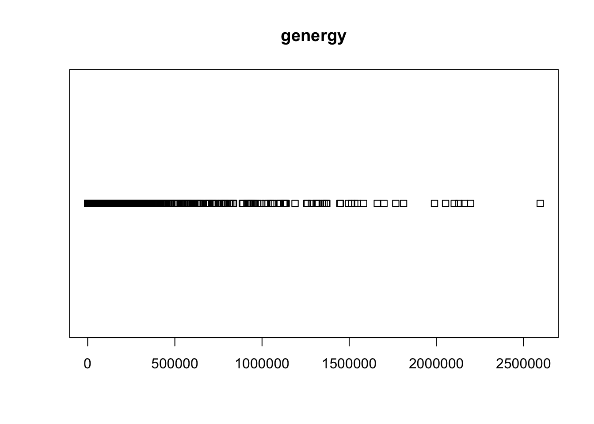
Podemos ver que los outliers son muy abundantes y serán outliers por encima, esto era de esperar ya que al tratarse de datos físicos lo normal en muchos casos más al tratarse de energía son valores constantes o que varían muy poco, excepto cuando como en este caso se de el caso de una gran cantidad de energía liberada, con la que obtendremos outliers por encima.
Vamos a utilizar un boxplot para ver estos outliers, para ello usarmeos la función:
MiBoxPlot_IQR_Univariate_Outliers = function (datos, indice.de.columna, coef = 1.5)
MiBoxPlot_IQR_Univariate_Outliers(mydata.numeric.scaled,indice.columna, coef = 1.5)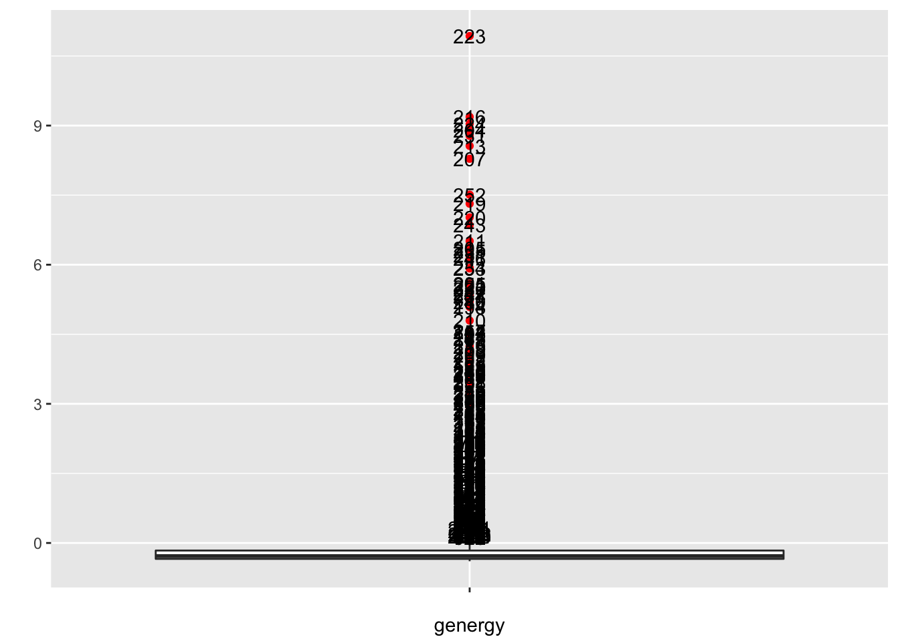
Al representar encima los valores o nombres de los outliers el gráfico se emborrona, por lo que podremos usar boxplot nativo sobre todos los datos para ver mejor estos outliers:
boxplot(mydata.numeric.scaled)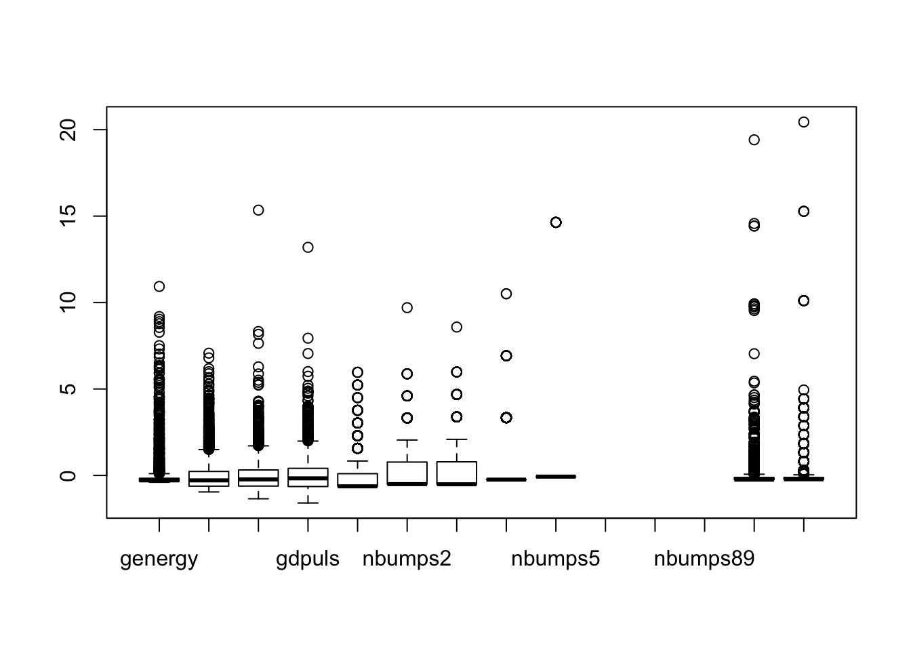
Vemos que la presencia de outliers es muy fuerte en todo el dataset, y como predejimos, estos vienen dados por encima en la mayoría de los casos teniendo medianas muy bajas y constantes lo que indica la estabilidad de los datos durante todas las medidas.
En este punto realizaremos el estudio IQR de los datos, pero usando funciones propias:
vector_outliers<-vector_es_outlier_IQR(mydata.numeric, indice.columna)
vector_claves_outliers<-vector_claves_outliers_IQR(mydata.numeric, indice.columna)Lo interesante de usar estas funciones, reside en la obtención de los outliers en las distintas columnas. Aunque el análisis es aún centrandonos en una sola variable, podremos vamos a obtener todos los outliers usando la función:
vector_claves_outliers_IQR_en_alguna_columna = function(datos, coef = 1.5)
indices.de.outliers.en.alguna.columna<-vector_claves_outliers_IQR_en_alguna_columna(mydata.numeric)Esta variable contiene los índices de aquellos registros que tienen un valor anómalo con respecto a alguna columna. Si mostramos los datos normalizados de dichos registros, debe salir lo siguiente:
mydata.numeric[indices.de.outliers.en.alguna.columna,]## genergy gpuls gdenergy gdpuls nbumps nbumps2 nbumps3 nbumps4
## 7 207930 614 -6 18 2 2 0 0
## 10 247620 675 4 25 1 1 0 0
## 13 166180 448 -30 -19 1 1 0 0
## 16 225040 575 -3 5 2 0 2 0
## 25 424650 1069 1 7 2 0 2 0
## 28 212260 729 -50 -28 2 1 1 0
## 30 172290 437 -57 -55 1 1 0 0
## 31 395110 1043 46 40 3 0 3 0
## 33 144880 361 -46 -52 1 0 1 0
## 34 477750 1132 86 60 3 3 0 0
## 36 127360 351 -54 -53 1 1 0 0
## 37 514800 1369 95 94 7 4 2 1
## 46 250030 687 -8 -5 0 0 0 0
## 49 309010 983 15 38 2 1 1 0
## 52 248900 739 -9 0 1 1 0 0
## 58 269070 767 -1 4 2 2 0 0
## 60 372770 975 37 32 3 3 0 0
## 66 147520 472 -2 -6 0 0 0 0
## 67 202640 588 -33 -41 2 1 1 0
## 68 259110 1409 -11 46 1 1 0 0
## 71 590510 1780 23 -6 1 1 0 0
## 74 317360 1068 -36 -44 0 0 0 0
## 75 227990 734 -52 -59 2 1 1 0
## 77 210960 773 -44 -35 1 0 1 0
## 79 302440 1250 -16 9 2 2 0 0
## 81 436650 1232 23 6 0 0 0 0
## 84 169370 644 -53 -45 0 0 0 0
## 86 233810 839 -31 -24 0 0 0 0
## 87 149050 697 -54 -35 1 0 1 0
## 89 194580 697 -35 -32 0 0 0 0
## 91 194580 697 -35 -32 0 0 0 0
## 94 285750 791 1 -19 0 0 0 0
## 97 298230 916 9 -2 0 0 0 0
## 100 172120 537 -35 -41 0 0 0 0
## 102 270040 717 10 -14 2 2 0 0
## 108 166700 363 -34 -56 0 0 0 0
## 109 274170 997 15 34 0 0 0 0
## 111 226790 717 2 0 0 0 0 0
## 112 134640 611 -41 -16 0 0 0 0
## 114 328050 707 51 0 1 1 0 0
## 115 140090 380 -40 -46 0 0 0 0
## 117 157740 440 -31 -35 0 0 0 0
## 118 325750 1068 50 67 1 0 1 0
## 119 300520 894 37 37 0 0 0 0
## 120 465730 1325 -7 -12 1 0 1 0
## 121 336600 984 -32 -34 1 0 1 0
## 123 951410 1332 98 -7 0 0 0 0
## 124 203850 476 -14 -32 1 0 1 0
## 125 715390 1923 36 36 1 1 0 0
## 126 160350 828 -31 23 0 0 0 0
## 128 373180 1246 -32 -14 1 0 1 0
## 129 481630 1678 -10 17 0 0 0 0
## 130 620720 1789 17 23 0 0 0 0
## 132 280830 689 94 39 1 0 1 0
## 133 557230 1642 2 11 0 0 0 0
## 135 270490 865 83 78 0 0 0 0
## 136 307540 1020 -44 -32 0 0 0 0
## 138 314100 904 -41 -37 0 0 0 0
## 139 368340 1325 -28 -4 1 0 1 0
## 141 316200 1089 -37 -21 3 1 2 0
## 142 209760 919 46 89 0 0 0 0
## 144 372380 1264 -26 -9 0 0 0 0
## 146 396530 1209 -10 -13 1 0 1 0
## 150 303610 1034 -26 -21 0 0 0 0
## 151 278230 1060 -31 -18 1 1 0 0
## 153 498960 1447 30 17 1 1 0 0
## 154 443740 1321 20 10 0 0 0 0
## 156 788230 1484 -1 -1 0 0 0 0
## 157 119460 269 -70 -64 0 0 0 0
## 159 1049580 1807 31 21 0 0 0 0
## 160 715540 1471 -13 -4 2 2 0 0
## nbumps5 nbumps6 nbumps7 nbumps89 energy maxenergy
## 7 0 0 0 0 1000 7e+02
## 10 0 0 0 0 500 5e+02
## 13 0 0 0 0 400 4e+02
## 16 0 0 0 0 7000 6e+03
## 25 0 0 0 0 6000 4e+03
## 28 0 0 0 0 1400 1e+03
## 30 0 0 0 0 600 6e+02
## 31 0 0 0 0 6000 2e+03
## 33 0 0 0 0 2000 2e+03
## 34 0 0 0 0 1500 6e+02
## 36 0 0 0 0 700 7e+02
## 37 0 0 0 0 15700 1e+04
## 46 0 0 0 0 0 0e+00
## 49 0 0 0 0 1800 1e+03
## 52 0 0 0 0 400 4e+02
## 58 0 0 0 0 800 4e+02
## 60 0 0 0 0 1400 7e+02
## 66 0 0 0 0 0 0e+00
## 67 0 0 0 0 4300 4e+03
## 68 0 0 0 0 900 9e+02
## 71 0 0 0 0 800 8e+02
## 74 0 0 0 0 0 0e+00
## 75 0 0 0 0 4300 4e+03
## 77 0 0 0 0 5000 5e+03
## 79 0 0 0 0 600 3e+02
## 81 0 0 0 0 0 0e+00
## 84 0 0 0 0 0 0e+00
## 86 0 0 0 0 0 0e+00
## 87 0 0 0 0 6000 6e+03
## 89 0 0 0 0 0 0e+00
## 91 0 0 0 0 0 0e+00
## 94 0 0 0 0 0 0e+00
## 97 0 0 0 0 0 0e+00
## 100 0 0 0 0 0 0e+00
## 102 0 0 0 0 800 5e+02
## 108 0 0 0 0 0 0e+00
## 109 0 0 0 0 0 0e+00
## 111 0 0 0 0 0 0e+00
## 112 0 0 0 0 0 0e+00
## 114 0 0 0 0 200 2e+02
## 115 0 0 0 0 0 0e+00
## 117 0 0 0 0 0 0e+00
## 118 0 0 0 0 3000 3e+03
## 119 0 0 0 0 0 0e+00
## 120 0 0 0 0 4000 4e+03
## 121 0 0 0 0 4000 4e+03
## 123 0 0 0 0 0 0e+00
## 124 0 0 0 0 3000 3e+03
## 125 0 0 0 0 300 3e+02
## 126 0 0 0 0 0 0e+00
## 128 0 0 0 0 2000 2e+03
## 129 0 0 0 0 0 0e+00
## 130 0 0 0 0 0 0e+00
## 132 0 0 0 0 3000 3e+03
## 133 0 0 0 0 0 0e+00
## 135 0 0 0 0 0 0e+00
## 136 0 0 0 0 0 0e+00
## 138 0 0 0 0 0 0e+00
## 139 0 0 0 0 2000 2e+03
## 141 0 0 0 0 2700 1e+03
## 142 0 0 0 0 0 0e+00
## 144 0 0 0 0 0 0e+00
## 146 0 0 0 0 6000 6e+03
## 150 0 0 0 0 0 0e+00
## 151 0 0 0 0 900 9e+02
## 153 0 0 0 0 900 9e+02
## 154 0 0 0 0 0 0e+00
## 156 0 0 0 0 0 0e+00
## 157 0 0 0 0 0 0e+00
## 159 0 0 0 0 0 0e+00
## 160 0 0 0 0 900 6e+02
## [ reached getOption("max.print") -- omitted 1924 rows ]Estamos ante un data set con muchos outliers (+75%), tantos que tendremos que buscar una manera de condensar estos de manera que podamos estudiarlos, ya que los datos son tan dispares y en cierta medida complejos que no podrán obtenerse conclusiones lógicas con tan solo observarlos.
Realizaremos el estudio anterior, pero solo utilizando ordenes básicas de R, es decir, sin recurrir a la función usada anteriormente.
Obtendremos por tanto, para cada columna un vector lógico que nos indique si estamos ante un outlier o no y guardamos todo en una matriz.
frame.es.outlier <- sapply(1:ncol(mydata.numeric),vector_es_outlier_IQR, datos=mydata.numeric)
head(frame.es.outlier)## [,1] [,2] [,3] [,4] [,5] [,6] [,7] [,8] [,9] [,10] [,11]
## [1,] FALSE FALSE FALSE FALSE FALSE FALSE FALSE FALSE FALSE FALSE FALSE
## [2,] FALSE FALSE FALSE FALSE FALSE FALSE FALSE FALSE FALSE FALSE FALSE
## [3,] FALSE FALSE FALSE FALSE FALSE FALSE FALSE FALSE FALSE FALSE FALSE
## [4,] FALSE FALSE FALSE FALSE FALSE FALSE FALSE FALSE FALSE FALSE FALSE
## [5,] FALSE FALSE FALSE FALSE FALSE FALSE FALSE FALSE FALSE FALSE FALSE
## [6,] FALSE FALSE FALSE FALSE FALSE FALSE FALSE FALSE FALSE FALSE FALSE
## [,12] [,13] [,14]
## [1,] FALSE FALSE FALSE
## [2,] FALSE FALSE FALSE
## [3,] FALSE FALSE FALSE
## [4,] FALSE FALSE FALSE
## [5,] FALSE FALSE FALSE
## [6,] FALSE FALSE FALSEAhora obtendremos el número total de outliers por columna: help(sapply)
numero.total.outliers.por.columna <- apply(frame.es.outlier, 2, sum)
numero.total.outliers.por.columna## [1] 334 201 141 95 277 77 68 158 12 0 0 0 319 313Como hemos dicho anteriormente, podemos comprobar que el número de univariate outliers en el problema es muy elevado y excepto den dos columnas, los tenemos presentes en todas.
Con el fin de obtener los datos con los outliers, obtendremos ahora las claves de las filas que en alguna de sus columnas tienen outliers.
indices.de.outliers.en.alguna.columna<- sapply(1:ncol(mydata.numeric),
vector_claves_outliers_IQR,
datos=mydata.numeric)
indices.de.outliers.en.alguna.columna <- sort(unique(unlist(indices.de.outliers.en.alguna.columna)))mydata.numeric[indices.de.outliers.en.alguna.columna,]## genergy gpuls gdenergy gdpuls nbumps nbumps2 nbumps3 nbumps4 nbumps5
## 7 207930 614 -6 18 2 2 0 0 0
## 10 247620 675 4 25 1 1 0 0 0
## 13 166180 448 -30 -19 1 1 0 0 0
## 14 64540 215 0 9 1 0 1 0 0
## 16 225040 575 -3 5 2 0 2 0 0
## 25 424650 1069 1 7 2 0 2 0 0
## 28 212260 729 -50 -28 2 1 1 0 0
## 29 42950 172 -76 -61 1 0 1 0 0
## 30 172290 437 -57 -55 1 1 0 0 0
## 31 395110 1043 46 40 3 0 3 0 0
## 32 51320 239 11 23 1 0 1 0 0
## 33 144880 361 -46 -52 1 0 1 0 0
## 34 477750 1132 86 60 3 3 0 0 0
## 35 71840 255 54 28 1 0 1 0 0
## 36 127360 351 -54 -53 1 1 0 0 0
## 37 514800 1369 95 94 7 4 2 1 0
## 46 250030 687 -8 -5 0 0 0 0 0
## 49 309010 983 15 38 2 1 1 0 0
## 50 59060 264 65 85 1 0 1 0 0
## 52 248900 739 -9 0 1 1 0 0 0
## 53 51620 186 51 34 1 0 1 0 0
## 58 269070 767 -1 4 2 2 0 0 0
## 60 372770 975 37 32 3 3 0 0 0
## 66 147520 472 -2 -6 0 0 0 0 0
## 67 202640 588 -33 -41 2 1 1 0 0
## 68 259110 1409 -11 46 1 1 0 0 0
## 71 590510 1780 23 -6 1 1 0 0 0
## 72 75930 305 -38 -27 1 0 1 0 0
## 74 317360 1068 -36 -44 0 0 0 0 0
## 75 227990 734 -52 -59 2 1 1 0 0
## 77 210960 773 -44 -35 1 0 1 0 0
## 79 302440 1250 -16 9 2 2 0 0 0
## 80 46160 250 -16 15 1 0 1 0 0
## 81 436650 1232 23 6 0 0 0 0 0
## 84 169370 644 -53 -45 0 0 0 0 0
## 86 233810 839 -31 -24 0 0 0 0 0
## 87 149050 697 -54 -35 1 0 1 0 0
## 89 194580 697 -35 -32 0 0 0 0 0
## 91 194580 697 -35 -32 0 0 0 0 0
## 94 285750 791 1 -19 0 0 0 0 0
## 96 25580 120 -54 -53 1 0 1 0 0
## 97 298230 916 9 -2 0 0 0 0 0
## 100 172120 537 -35 -41 0 0 0 0 0
## 102 270040 717 10 -14 2 2 0 0 0
## 108 166700 363 -34 -56 0 0 0 0 0
## 109 274170 997 15 34 0 0 0 0 0
## 111 226790 717 2 0 0 0 0 0 0
## 112 134640 611 -41 -16 0 0 0 0 0
## 114 328050 707 51 0 1 1 0 0 0
## 115 140090 380 -40 -46 0 0 0 0 0
## 117 157740 440 -31 -35 0 0 0 0 0
## 118 325750 1068 50 67 1 0 1 0 0
## 119 300520 894 37 37 0 0 0 0 0
## 120 465730 1325 -7 -12 1 0 1 0 0
## 121 336600 984 -32 -34 1 0 1 0 0
## 123 951410 1332 98 -7 0 0 0 0 0
## 124 203850 476 -14 -32 1 0 1 0 0
## 125 715390 1923 36 36 1 1 0 0 0
## 126 160350 828 -31 23 0 0 0 0 0
## 128 373180 1246 -32 -14 1 0 1 0 0
## 129 481630 1678 -10 17 0 0 0 0 0
## 130 620720 1789 17 23 0 0 0 0 0
## 132 280830 689 94 39 1 0 1 0 0
## 133 557230 1642 2 11 0 0 0 0 0
## 135 270490 865 83 78 0 0 0 0 0
## 136 307540 1020 -44 -32 0 0 0 0 0
## 138 314100 904 -41 -37 0 0 0 0 0
## 139 368340 1325 -28 -4 1 0 1 0 0
## 140 114540 488 -23 0 2 0 2 0 0
## 141 316200 1089 -37 -21 3 1 2 0 0
## 142 209760 919 46 89 0 0 0 0 0
## nbumps6 nbumps7 nbumps89 energy maxenergy
## 7 0 0 0 1000 7e+02
## 10 0 0 0 500 5e+02
## 13 0 0 0 400 4e+02
## 14 0 0 0 6000 6e+03
## 16 0 0 0 7000 6e+03
## 25 0 0 0 6000 4e+03
## 28 0 0 0 1400 1e+03
## 29 0 0 0 6000 6e+03
## 30 0 0 0 600 6e+02
## 31 0 0 0 6000 2e+03
## 32 0 0 0 6000 6e+03
## 33 0 0 0 2000 2e+03
## 34 0 0 0 1500 6e+02
## 35 0 0 0 6000 6e+03
## 36 0 0 0 700 7e+02
## 37 0 0 0 15700 1e+04
## 46 0 0 0 0 0e+00
## 49 0 0 0 1800 1e+03
## 50 0 0 0 6000 6e+03
## 52 0 0 0 400 4e+02
## 53 0 0 0 7000 7e+03
## 58 0 0 0 800 4e+02
## 60 0 0 0 1400 7e+02
## 66 0 0 0 0 0e+00
## 67 0 0 0 4300 4e+03
## 68 0 0 0 900 9e+02
## 71 0 0 0 800 8e+02
## 72 0 0 0 6000 6e+03
## 74 0 0 0 0 0e+00
## 75 0 0 0 4300 4e+03
## 77 0 0 0 5000 5e+03
## 79 0 0 0 600 3e+02
## 80 0 0 0 6000 6e+03
## 81 0 0 0 0 0e+00
## 84 0 0 0 0 0e+00
## 86 0 0 0 0 0e+00
## 87 0 0 0 6000 6e+03
## 89 0 0 0 0 0e+00
## 91 0 0 0 0 0e+00
## 94 0 0 0 0 0e+00
## 96 0 0 0 6000 6e+03
## 97 0 0 0 0 0e+00
## 100 0 0 0 0 0e+00
## 102 0 0 0 800 5e+02
## 108 0 0 0 0 0e+00
## 109 0 0 0 0 0e+00
## 111 0 0 0 0 0e+00
## 112 0 0 0 0 0e+00
## 114 0 0 0 200 2e+02
## 115 0 0 0 0 0e+00
## 117 0 0 0 0 0e+00
## 118 0 0 0 3000 3e+03
## 119 0 0 0 0 0e+00
## 120 0 0 0 4000 4e+03
## 121 0 0 0 4000 4e+03
## 123 0 0 0 0 0e+00
## 124 0 0 0 3000 3e+03
## 125 0 0 0 300 3e+02
## 126 0 0 0 0 0e+00
## 128 0 0 0 2000 2e+03
## 129 0 0 0 0 0e+00
## 130 0 0 0 0 0e+00
## 132 0 0 0 3000 3e+03
## 133 0 0 0 0 0e+00
## 135 0 0 0 0 0e+00
## 136 0 0 0 0 0e+00
## 138 0 0 0 0 0e+00
## 139 0 0 0 2000 2e+03
## 140 0 0 0 8000 5e+03
## 141 0 0 0 2700 1e+03
## 142 0 0 0 0 0e+00
## [ reached getOption("max.print") -- omitted 719 rows ]Por último utilizamos boxplot para obtener el gráfico con los outliers:
boxplot(mydata.numeric)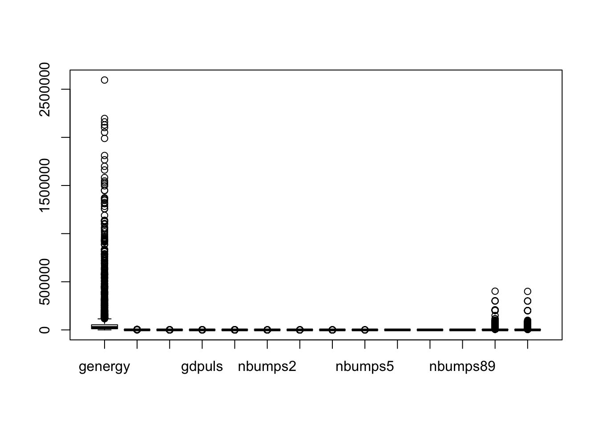
Dado el gran volumen de datos no usaremos la función que los representa con etiquetas ya que de ser así estos se verían representados como una mancha, dado el gran volumen de outliers.
Cuando trabajamos con la detección de outliers, así como con otras diversas vertientes dentro de la ciencia de datos, saber si los resultados son estadísticamente significativos será casi tan importante, o incluso más, que los procesos anteriores de minería de datos. En esta sección trataremos de sobre ello.
Los resultados, están basados en el código del profesor de la asignatura (J.C Cubero) y se han aplicado sobre el conjunto de datos seismic que estamos tratando a lo largo de la práctica. Dado que la presencia de outliers en nuestro dataset es muy elevada, realizaremos los test estadísticos para columnas de datos en el caso de tener varios outliers (> de 2).
Por ello el principal proceso, será obtener sobre que columna vamos a realizar el estudio estadístico.
numero.total.outliers.por.columna <- apply(frame.es.outlier, 2, sum)
numero.total.outliers.por.columna## [1] 334 201 141 95 277 77 68 158 12 0 0 0 319 313Nos quedaremos con la columna 4 por ejemplo, con 95 outliers.
mydata.numeric = seismic[,-c(1,2,3,8,19)]
datos.con.varios.outliers <- mydata.numeric[,4]
mydata.numeric = datos.con.varios.outliers
test.de.rosner = rosnerTest(mydata.numeric, k=95)## Warning in rosnerTest(mydata.numeric, k = 95): The true Type I error may be larger than assumed.
## Although the help file for 'rosnerTest' has a table with information
## on the estimated Type I error level,
## simulations were not run for k > 10 or k > floor(n/2).is.outlier.rosner = test.de.rosner$all.stats$Outlier
k.mayores.desviaciones.de.la.media = test.de.rosner$all.stats$Obs.Num
indices.de.outliers.rosner = k.mayores.desviaciones.de.la.media[is.outlier.rosner]
valores.de.outliers.rosner = mydata.numeric[indices.de.outliers.rosner]
print("Índices de las k-mayores desviaciones de la media")## [1] "Índices de las k-mayores desviaciones de la media"k.mayores.desviaciones.de.la.media## [1] 1692 1342 1693 1798 2550 1799 1822 1373 1621 2433 1772 2183 1559 1368
## [15] 1660 1208 2181 1534 1551 1367 1343 2082 1541 1550 2252 1536 2230 1357
## [29] 1392 1533 1821 2492 2184 2403 1585 1694 2253 1552 2038 1583 1895 2294
## [43] 1647 656 1112 2185 2182 1560 1575 1393 1530 907 1557 555 1546 1304
## [57] 1360 2254 1531 1542 1535 1501 2178 1741 1298 1363 1523 1702 1231 1325
## [71] 2580 2566 1720 1726 1335 1532 2180 1517 351 1558 1359 1092 2523 1210
## [85] 1614 2179 1287 1742 1586 1837 1648 1495 1485 2546 2551print("De los k valores fijados, ¿Quién es outlier?")## [1] "De los k valores fijados, ¿Quién es outlier?"is.outlier.rosner ## [1] TRUE TRUE TRUE TRUE TRUE TRUE TRUE TRUE TRUE TRUE TRUE
## [12] TRUE TRUE TRUE TRUE TRUE TRUE TRUE TRUE TRUE TRUE TRUE
## [23] TRUE TRUE TRUE TRUE TRUE TRUE TRUE TRUE TRUE FALSE FALSE
## [34] FALSE FALSE FALSE FALSE FALSE FALSE FALSE FALSE FALSE FALSE FALSE
## [45] FALSE FALSE FALSE FALSE FALSE FALSE FALSE FALSE FALSE FALSE FALSE
## [56] FALSE FALSE FALSE FALSE FALSE FALSE FALSE FALSE FALSE FALSE FALSE
## [67] FALSE FALSE FALSE FALSE FALSE FALSE FALSE FALSE FALSE FALSE FALSE
## [78] FALSE FALSE FALSE FALSE FALSE FALSE FALSE FALSE FALSE FALSE FALSE
## [89] FALSE FALSE FALSE FALSE FALSE FALSE FALSEprint("Los índices de los outliers son:")## [1] "Los índices de los outliers son:"indices.de.outliers.rosner## [1] 1692 1342 1693 1798 2550 1799 1822 1373 1621 2433 1772 2183 1559 1368
## [15] 1660 1208 2181 1534 1551 1367 1343 2082 1541 1550 2252 1536 2230 1357
## [29] 1392 1533 1821print("Los valores de los outliers son:")## [1] "Los valores de los outliers son:"valores.de.outliers.rosner## [1] 838 506 450 384 367 334 323 313 311 310 309 305 295 278 278 258 256
## [18] 255 255 251 249 248 245 243 239 235 234 233 227 227 226MiPlot_Univariate_Outliers (mydata.numeric, indices.de.outliers.rosner, "Test de Rosner")##
## N?mero de datos: 2584
## ?Qui?n es outlier?: FALSE FALSE FALSE FALSE FALSE FALSE FALSE FALSE FALSE FALSE FALSE FALSE FALSE FALSE FALSE FALSE FALSE FALSE FALSE FALSE FALSE FALSE FALSE FALSE FALSE FALSE FALSE FALSE FALSE FALSE FALSE FALSE FALSE FALSE FALSE FALSE FALSE FALSE FALSE FALSE FALSE FALSE FALSE FALSE FALSE FALSE FALSE FALSE FALSE FALSE FALSE FALSE FALSE FALSE FALSE FALSE FALSE FALSE FALSE FALSE FALSE FALSE FALSE FALSE FALSE FALSE FALSE FALSE FALSE FALSE FALSE FALSE FALSE FALSE FALSE FALSE FALSE FALSE FALSE FALSE FALSE FALSE FALSE FALSE FALSE FALSE FALSE FALSE FALSE FALSE FALSE FALSE FALSE FALSE FALSE FALSE FALSE FALSE FALSE FALSE FALSE FALSE FALSE FALSE FALSE FALSE FALSE FALSE FALSE FALSE FALSE FALSE FALSE FALSE FALSE FALSE FALSE FALSE FALSE FALSE FALSE FALSE FALSE FALSE FALSE FALSE FALSE FALSE FALSE FALSE FALSE FALSE FALSE FALSE FALSE FALSE FALSE FALSE FALSE FALSE FALSE FALSE FALSE FALSE FALSE FALSE FALSE FALSE FALSE FALSE FALSE FALSE FALSE FALSE FALSE FALSE FALSE FALSE FALSE FALSE FALSE FALSE FALSE FALSE FALSE FALSE FALSE FALSE FALSE FALSE FALSE FALSE FALSE FALSE FALSE FALSE FALSE FALSE FALSE FALSE FALSE FALSE FALSE FALSE FALSE FALSE FALSE FALSE FALSE FALSE FALSE FALSE FALSE FALSE FALSE FALSE FALSE FALSE FALSE FALSE FALSE FALSE FALSE FALSE FALSE FALSE FALSE FALSE FALSE FALSE FALSE FALSE FALSE FALSE FALSE FALSE FALSE FALSE FALSE FALSE FALSE FALSE FALSE FALSE FALSE FALSE FALSE FALSE FALSE FALSE FALSE FALSE FALSE FALSE FALSE FALSE FALSE FALSE FALSE FALSE FALSE FALSE FALSE FALSE FALSE FALSE FALSE FALSE FALSE FALSE FALSE FALSE FALSE FALSE FALSE FALSE FALSE FALSE FALSE FALSE FALSE FALSE FALSE FALSE FALSE FALSE FALSE FALSE FALSE FALSE FALSE FALSE FALSE FALSE FALSE FALSE FALSE FALSE FALSE FALSE FALSE FALSE FALSE FALSE FALSE FALSE FALSE FALSE FALSE FALSE FALSE FALSE FALSE FALSE FALSE FALSE FALSE FALSE FALSE FALSE FALSE FALSE FALSE FALSE FALSE FALSE FALSE FALSE FALSE FALSE FALSE FALSE FALSE FALSE FALSE FALSE FALSE FALSE FALSE FALSE FALSE FALSE FALSE FALSE FALSE FALSE FALSE FALSE FALSE FALSE FALSE FALSE FALSE FALSE FALSE FALSE FALSE FALSE FALSE FALSE FALSE FALSE FALSE FALSE FALSE FALSE FALSE FALSE FALSE FALSE FALSE FALSE FALSE FALSE FALSE FALSE FALSE FALSE FALSE FALSE FALSE FALSE FALSE FALSE FALSE FALSE FALSE FALSE FALSE FALSE FALSE FALSE FALSE FALSE FALSE FALSE FALSE FALSE FALSE FALSE FALSE FALSE FALSE FALSE FALSE FALSE FALSE FALSE FALSE FALSE FALSE FALSE FALSE FALSE FALSE FALSE FALSE FALSE FALSE FALSE FALSE FALSE FALSE FALSE FALSE FALSE FALSE FALSE FALSE FALSE FALSE FALSE FALSE FALSE FALSE FALSE FALSE FALSE FALSE FALSE FALSE FALSE FALSE FALSE FALSE FALSE FALSE FALSE FALSE FALSE FALSE FALSE FALSE FALSE FALSE FALSE FALSE FALSE FALSE FALSE FALSE FALSE FALSE FALSE FALSE FALSE FALSE FALSE FALSE FALSE FALSE FALSE FALSE FALSE FALSE FALSE FALSE FALSE FALSE FALSE FALSE FALSE FALSE FALSE FALSE FALSE FALSE FALSE FALSE FALSE FALSE FALSE FALSE FALSE FALSE FALSE FALSE FALSE FALSE FALSE FALSE FALSE FALSE FALSE FALSE FALSE FALSE FALSE FALSE FALSE FALSE FALSE FALSE FALSE FALSE FALSE FALSE FALSE FALSE FALSE FALSE FALSE FALSE FALSE FALSE FALSE FALSE FALSE FALSE FALSE FALSE FALSE FALSE FALSE FALSE FALSE FALSE FALSE FALSE FALSE FALSE FALSE FALSE FALSE FALSE FALSE FALSE FALSE FALSE FALSE FALSE FALSE FALSE FALSE FALSE FALSE FALSE FALSE FALSE FALSE FALSE FALSE FALSE FALSE FALSE FALSE FALSE FALSE FALSE FALSE FALSE FALSE FALSE FALSE FALSE FALSE FALSE FALSE FALSE FALSE FALSE FALSE FALSE FALSE FALSE FALSE FALSE FALSE FALSE FALSE FALSE FALSE FALSE FALSE FALSE FALSE FALSE FALSE FALSE FALSE FALSE FALSE FALSE FALSE FALSE FALSE FALSE FALSE FALSE FALSE FALSE FALSE FALSE FALSE FALSE FALSE FALSE FALSE FALSE FALSE FALSE FALSE FALSE FALSE FALSE FALSE FALSE FALSE FALSE FALSE FALSE FALSE FALSE FALSE FALSE FALSE FALSE FALSE FALSE FALSE FALSE FALSE FALSE FALSE FALSE FALSE FALSE FALSE FALSE FALSE FALSE FALSE FALSE FALSE FALSE FALSE FALSE FALSE FALSE FALSE FALSE FALSE FALSE FALSE FALSE FALSE FALSE FALSE FALSE FALSE FALSE FALSE FALSE FALSE FALSE FALSE FALSE FALSE FALSE FALSE FALSE FALSE FALSE FALSE FALSE FALSE FALSE FALSE FALSE FALSE FALSE FALSE FALSE FALSE FALSE FALSE FALSE FALSE FALSE FALSE FALSE FALSE FALSE FALSE FALSE FALSE FALSE FALSE FALSE FALSE FALSE FALSE FALSE FALSE FALSE FALSE FALSE FALSE FALSE FALSE FALSE FALSE FALSE FALSE FALSE FALSE FALSE FALSE FALSE FALSE FALSE FALSE FALSE FALSE FALSE FALSE FALSE FALSE FALSE FALSE FALSE FALSE FALSE FALSE FALSE FALSE FALSE FALSE FALSE FALSE FALSE FALSE FALSE FALSE FALSE FALSE FALSE FALSE FALSE FALSE FALSE FALSE FALSE FALSE FALSE FALSE FALSE FALSE FALSE FALSE FALSE FALSE FALSE FALSE FALSE FALSE FALSE FALSE FALSE FALSE FALSE FALSE FALSE FALSE FALSE FALSE FALSE FALSE FALSE FALSE FALSE FALSE FALSE FALSE FALSE FALSE FALSE FALSE FALSE FALSE FALSE FALSE FALSE FALSE FALSE FALSE FALSE FALSE FALSE FALSE FALSE FALSE FALSE FALSE FALSE FALSE FALSE FALSE FALSE FALSE FALSE FALSE FALSE FALSE FALSE FALSE FALSE FALSE FALSE FALSE FALSE FALSE FALSE FALSE FALSE FALSE FALSE FALSE FALSE FALSE FALSE FALSE FALSE FALSE FALSE FALSE FALSE FALSE FALSE FALSE FALSE FALSE FALSE FALSE FALSE FALSE FALSE FALSE FALSE FALSE FALSE FALSE FALSE FALSE FALSE FALSE FALSE FALSE FALSE FALSE FALSE FALSE FALSE FALSE FALSE FALSE FALSE FALSE FALSE FALSE FALSE FALSE FALSE FALSE FALSE FALSE FALSE FALSE FALSE FALSE FALSE FALSE FALSE FALSE FALSE FALSE FALSE FALSE FALSE FALSE FALSE FALSE FALSE FALSE FALSE FALSE FALSE FALSE FALSE FALSE FALSE FALSE FALSE FALSE FALSE FALSE FALSE FALSE FALSE FALSE FALSE FALSE FALSE FALSE FALSE FALSE FALSE FALSE FALSE FALSE FALSE FALSE FALSE FALSE FALSE FALSE FALSE FALSE FALSE FALSE FALSE FALSE FALSE FALSE FALSE FALSE FALSE FALSE FALSE FALSE FALSE FALSE FALSE FALSE FALSE FALSE FALSE FALSE FALSE FALSE FALSE FALSE FALSE FALSE FALSE FALSE FALSE FALSE FALSE FALSE FALSE FALSE FALSE FALSE FALSE FALSE FALSE FALSE FALSE FALSE FALSE FALSE FALSE FALSE FALSE FALSE FALSE FALSE FALSE FALSE FALSE FALSE FALSE FALSE FALSE FALSE FALSE FALSE FALSE FALSE FALSE FALSE FALSE FALSE FALSE FALSE FALSE FALSE FALSE FALSE FALSE FALSE FALSE FALSE FALSE FALSE FALSE FALSE FALSE FALSE FALSE FALSE FALSE FALSE FALSE FALSE FALSE FALSE FALSE FALSE FALSE FALSE FALSE FALSE FALSE FALSE FALSE FALSE FALSE FALSE FALSE FALSE FALSE FALSE FALSE FALSE FALSE FALSE FALSE FALSE FALSE FALSE FALSE FALSE FALSE FALSE FALSE FALSE FALSE FALSE FALSE FALSE FALSE FALSE FALSE FALSE FALSE FALSE FALSE FALSE FALSE FALSE FALSE FALSE FALSE FALSE FALSE FALSE FALSE FALSE FALSE FALSE FALSE FALSE FALSE FALSE FALSE FALSE FALSE FALSE FALSE FALSE FALSE FALSE FALSE FALSE FALSE FALSE FALSE FALSE FALSE FALSE FALSE FALSE FALSE FALSE FALSE FALSE FALSE FALSE FALSE FALSE FALSE FALSE FALSE FALSE FALSE FALSE FALSE FALSE FALSE FALSE FALSE FALSE FALSE FALSE FALSE FALSE FALSE FALSE FALSE FALSE FALSE FALSE FALSE FALSE FALSE FALSE FALSE FALSE FALSE FALSE FALSE FALSE FALSE FALSE FALSE FALSE FALSE FALSE FALSE FALSE FALSE FALSE FALSE FALSE FALSE FALSE FALSE FALSE FALSE FALSE FALSE FALSE FALSE FALSE FALSE FALSE FALSE FALSE FALSE FALSE FALSE FALSE FALSE FALSE FALSE FALSE FALSE FALSE FALSE FALSE FALSE FALSE FALSE FALSE FALSE FALSE FALSE FALSE FALSE FALSE FALSE FALSE FALSE FALSE FALSE FALSE FALSE FALSE FALSE FALSE FALSE FALSE FALSE FALSE FALSE FALSE FALSE FALSE FALSE FALSE FALSE FALSE FALSE FALSE FALSE FALSE FALSE FALSE FALSE FALSE FALSE FALSE FALSE FALSE FALSE TRUE FALSE FALSE FALSE FALSE FALSE FALSE FALSE FALSE FALSE FALSE FALSE FALSE FALSE FALSE FALSE FALSE FALSE FALSE FALSE FALSE FALSE FALSE FALSE FALSE FALSE FALSE FALSE FALSE FALSE FALSE FALSE FALSE FALSE FALSE FALSE FALSE FALSE FALSE FALSE FALSE FALSE FALSE FALSE FALSE FALSE FALSE FALSE FALSE FALSE FALSE FALSE FALSE FALSE FALSE FALSE FALSE FALSE FALSE FALSE FALSE FALSE FALSE FALSE FALSE FALSE FALSE FALSE FALSE FALSE FALSE FALSE FALSE FALSE FALSE FALSE FALSE FALSE FALSE FALSE FALSE FALSE FALSE FALSE FALSE FALSE FALSE FALSE FALSE FALSE FALSE FALSE FALSE FALSE FALSE FALSE FALSE FALSE FALSE FALSE FALSE FALSE FALSE FALSE FALSE FALSE FALSE FALSE FALSE FALSE FALSE FALSE FALSE FALSE FALSE FALSE FALSE FALSE FALSE FALSE FALSE FALSE FALSE FALSE FALSE FALSE FALSE FALSE FALSE FALSE FALSE FALSE FALSE FALSE TRUE TRUE FALSE FALSE FALSE FALSE FALSE FALSE FALSE FALSE FALSE FALSE FALSE FALSE FALSE TRUE FALSE FALSE FALSE FALSE FALSE FALSE FALSE FALSE FALSE TRUE TRUE FALSE FALSE FALSE FALSE TRUE FALSE FALSE FALSE FALSE FALSE FALSE FALSE FALSE FALSE FALSE FALSE FALSE FALSE FALSE FALSE FALSE FALSE FALSE TRUE FALSE FALSE FALSE FALSE FALSE FALSE FALSE FALSE FALSE FALSE FALSE FALSE FALSE FALSE FALSE FALSE FALSE FALSE FALSE FALSE FALSE FALSE FALSE FALSE FALSE FALSE FALSE FALSE FALSE FALSE FALSE FALSE FALSE FALSE FALSE FALSE FALSE FALSE FALSE FALSE FALSE FALSE FALSE FALSE FALSE FALSE FALSE FALSE FALSE FALSE FALSE FALSE FALSE FALSE FALSE FALSE FALSE FALSE FALSE FALSE FALSE FALSE FALSE FALSE FALSE FALSE FALSE FALSE FALSE FALSE FALSE FALSE FALSE FALSE FALSE FALSE FALSE FALSE FALSE FALSE FALSE FALSE FALSE FALSE FALSE FALSE FALSE FALSE FALSE FALSE FALSE FALSE FALSE FALSE FALSE FALSE FALSE FALSE FALSE FALSE FALSE FALSE FALSE FALSE FALSE FALSE FALSE FALSE FALSE FALSE FALSE FALSE FALSE FALSE FALSE FALSE FALSE FALSE FALSE FALSE FALSE FALSE FALSE FALSE FALSE FALSE FALSE FALSE FALSE FALSE FALSE FALSE FALSE FALSE FALSE FALSE FALSE FALSE FALSE FALSE TRUE TRUE FALSE TRUE FALSE FALSE FALSE FALSE TRUE FALSE FALSE FALSE FALSE FALSE FALSE FALSE FALSE TRUE TRUE FALSE FALSE FALSE FALSE FALSE FALSE FALSE TRUE FALSE FALSE FALSE FALSE FALSE FALSE FALSE FALSE FALSE FALSE FALSE FALSE FALSE FALSE FALSE FALSE FALSE FALSE FALSE FALSE FALSE FALSE FALSE FALSE FALSE FALSE FALSE FALSE FALSE FALSE FALSE FALSE FALSE FALSE FALSE FALSE FALSE FALSE FALSE FALSE FALSE FALSE FALSE FALSE FALSE FALSE FALSE FALSE FALSE FALSE FALSE FALSE FALSE FALSE FALSE FALSE FALSE FALSE FALSE FALSE FALSE TRUE FALSE FALSE FALSE FALSE FALSE FALSE FALSE FALSE FALSE FALSE FALSE FALSE FALSE FALSE FALSE FALSE FALSE FALSE FALSE FALSE FALSE FALSE FALSE FALSE FALSE FALSE FALSE FALSE FALSE FALSE FALSE FALSE FALSE FALSE FALSE FALSE FALSE FALSE TRUE FALSE FALSE FALSE FALSE FALSE FALSE FALSE FALSE FALSE FALSE FALSE FALSE FALSE FALSE FALSE FALSE FALSE FALSE FALSE FALSE FALSE FALSE FALSE FALSE FALSE FALSE FALSE FALSE FALSE FALSE FALSE TRUE TRUE FALSE FALSE FALSE FALSE FALSE FALSE FALSE FALSE FALSE FALSE FALSE FALSE FALSE FALSE FALSE FALSE FALSE FALSE FALSE FALSE FALSE FALSE FALSE FALSE FALSE FALSE FALSE FALSE FALSE FALSE FALSE FALSE FALSE FALSE FALSE FALSE FALSE FALSE FALSE FALSE FALSE FALSE FALSE FALSE FALSE FALSE FALSE FALSE FALSE FALSE FALSE FALSE FALSE FALSE FALSE FALSE FALSE FALSE FALSE FALSE FALSE FALSE FALSE FALSE FALSE FALSE FALSE FALSE FALSE FALSE FALSE FALSE FALSE FALSE FALSE FALSE FALSE FALSE TRUE FALSE FALSE FALSE FALSE FALSE FALSE FALSE FALSE FALSE FALSE FALSE FALSE FALSE FALSE FALSE FALSE FALSE FALSE FALSE FALSE FALSE FALSE FALSE FALSE FALSE TRUE TRUE FALSE FALSE FALSE FALSE FALSE FALSE FALSE FALSE FALSE FALSE FALSE FALSE FALSE FALSE FALSE FALSE FALSE FALSE FALSE FALSE FALSE TRUE TRUE FALSE FALSE FALSE FALSE FALSE FALSE FALSE FALSE FALSE FALSE FALSE FALSE FALSE FALSE FALSE FALSE FALSE FALSE FALSE FALSE FALSE FALSE FALSE FALSE FALSE FALSE FALSE FALSE FALSE FALSE FALSE FALSE FALSE FALSE FALSE FALSE FALSE FALSE FALSE FALSE FALSE FALSE FALSE FALSE FALSE FALSE FALSE FALSE FALSE FALSE FALSE FALSE FALSE FALSE FALSE FALSE FALSE FALSE FALSE FALSE FALSE FALSE FALSE FALSE FALSE FALSE FALSE FALSE FALSE FALSE FALSE FALSE FALSE FALSE FALSE FALSE FALSE FALSE FALSE FALSE FALSE FALSE FALSE FALSE FALSE FALSE FALSE FALSE FALSE FALSE FALSE FALSE FALSE FALSE FALSE FALSE FALSE FALSE FALSE FALSE FALSE FALSE FALSE FALSE FALSE FALSE FALSE FALSE FALSE FALSE FALSE FALSE FALSE FALSE FALSE FALSE FALSE FALSE FALSE FALSE FALSE FALSE FALSE FALSE FALSE FALSE FALSE FALSE FALSE FALSE FALSE FALSE FALSE FALSE FALSE FALSE FALSE FALSE FALSE FALSE FALSE FALSE FALSE FALSE FALSE FALSE FALSE FALSE FALSE FALSE FALSE FALSE FALSE FALSE FALSE FALSE FALSE FALSE FALSE FALSE FALSE FALSE FALSE FALSE FALSE FALSE FALSE FALSE FALSE FALSE FALSE FALSE FALSE FALSE FALSE FALSE FALSE FALSE FALSE FALSE FALSE FALSE FALSE FALSE FALSE FALSE FALSE FALSE FALSE FALSE FALSE FALSE FALSE FALSE FALSE FALSE FALSE FALSE FALSE FALSE FALSE FALSE FALSE FALSE FALSE FALSE FALSE FALSE FALSE FALSE FALSE FALSE FALSE FALSE FALSE FALSE FALSE FALSE FALSE FALSE FALSE FALSE FALSE FALSE FALSE FALSE FALSE FALSE FALSE FALSE FALSE FALSE FALSE FALSE FALSE FALSE FALSE FALSE FALSE FALSE FALSE FALSE FALSE FALSE FALSE FALSE FALSE FALSE FALSE FALSE FALSE FALSE FALSE FALSE FALSE FALSE FALSE FALSE FALSE TRUE FALSE FALSE FALSE FALSE FALSE FALSE FALSE FALSE FALSE FALSE FALSE FALSE FALSE FALSE FALSE FALSE FALSE FALSE FALSE FALSE FALSE FALSE FALSE FALSE FALSE FALSE FALSE FALSE FALSE FALSE FALSE FALSE FALSE FALSE FALSE FALSE FALSE FALSE FALSE FALSE FALSE FALSE FALSE FALSE FALSE FALSE FALSE FALSE FALSE FALSE FALSE FALSE FALSE FALSE FALSE FALSE FALSE FALSE FALSE FALSE FALSE FALSE FALSE FALSE FALSE FALSE FALSE FALSE FALSE FALSE FALSE FALSE FALSE FALSE FALSE FALSE FALSE FALSE FALSE FALSE FALSE FALSE FALSE FALSE FALSE FALSE FALSE FALSE FALSE FALSE FALSE FALSE FALSE FALSE FALSE FALSE FALSE FALSE TRUE FALSE TRUE FALSE FALSE FALSE FALSE FALSE FALSE FALSE FALSE FALSE FALSE FALSE FALSE FALSE FALSE FALSE FALSE FALSE FALSE FALSE FALSE FALSE FALSE FALSE FALSE FALSE FALSE FALSE FALSE FALSE FALSE FALSE FALSE FALSE FALSE FALSE FALSE FALSE FALSE FALSE FALSE FALSE FALSE FALSE FALSE FALSE FALSE TRUE FALSE FALSE FALSE FALSE FALSE FALSE FALSE FALSE FALSE FALSE FALSE FALSE FALSE FALSE FALSE FALSE FALSE FALSE FALSE FALSE FALSE TRUE FALSE FALSE FALSE FALSE FALSE FALSE FALSE FALSE FALSE FALSE FALSE FALSE FALSE FALSE FALSE FALSE FALSE FALSE FALSE FALSE FALSE FALSE FALSE FALSE FALSE FALSE FALSE FALSE FALSE FALSE FALSE FALSE FALSE FALSE FALSE FALSE FALSE FALSE FALSE FALSE FALSE FALSE FALSE FALSE FALSE FALSE FALSE FALSE FALSE FALSE FALSE FALSE FALSE FALSE FALSE FALSE FALSE FALSE FALSE FALSE FALSE FALSE FALSE FALSE FALSE FALSE FALSE FALSE FALSE FALSE FALSE FALSE FALSE FALSE FALSE FALSE FALSE FALSE FALSE FALSE FALSE FALSE FALSE FALSE FALSE FALSE FALSE FALSE FALSE FALSE FALSE FALSE FALSE FALSE FALSE FALSE FALSE FALSE FALSE FALSE FALSE FALSE FALSE FALSE FALSE FALSE FALSE FALSE FALSE FALSE FALSE FALSE FALSE FALSE FALSE FALSE FALSE FALSE FALSE FALSE FALSE FALSE FALSE FALSE FALSE FALSE FALSE FALSE FALSE FALSE FALSE FALSE FALSE FALSE FALSE FALSE FALSE FALSE FALSE FALSE FALSE FALSE FALSE FALSE FALSE FALSE FALSE FALSE FALSE FALSE FALSE FALSE FALSE FALSE FALSE FALSE FALSE FALSE FALSE FALSE FALSE FALSE FALSE FALSE FALSE FALSE FALSE FALSE FALSE FALSE FALSE FALSE FALSE FALSE FALSE FALSE FALSE FALSE FALSE FALSE TRUE FALSE FALSE FALSE FALSE FALSE FALSE FALSE FALSE FALSE FALSE FALSE FALSE FALSE FALSE FALSE FALSE FALSE FALSE FALSE FALSE FALSE FALSE FALSE FALSE FALSE FALSE FALSE FALSE FALSE FALSE FALSE FALSE FALSE FALSE FALSE FALSE FALSE FALSE FALSE FALSE FALSE FALSE FALSE FALSE FALSE FALSE FALSE FALSE FALSE FALSE FALSE FALSE FALSE FALSE FALSE FALSE FALSE FALSE FALSE FALSE FALSE FALSE FALSE FALSE FALSE FALSE FALSE FALSE FALSE FALSE FALSE FALSE FALSE FALSE FALSE FALSE FALSE FALSE FALSE FALSE FALSE FALSE FALSE FALSE FALSE FALSE FALSE FALSE FALSE FALSE FALSE FALSE FALSE FALSE FALSE FALSE FALSE FALSE FALSE FALSE FALSE FALSE FALSE FALSE FALSE FALSE FALSE FALSE FALSE FALSE FALSE FALSE FALSE FALSE FALSE FALSE TRUE FALSE FALSE FALSE FALSE FALSE FALSE FALSE FALSE FALSE FALSE FALSE FALSE FALSE FALSE FALSE FALSE FALSE FALSE FALSE FALSE FALSE FALSE FALSE FALSE FALSE FALSE FALSE FALSE FALSE FALSE FALSE FALSE FALSE FALSE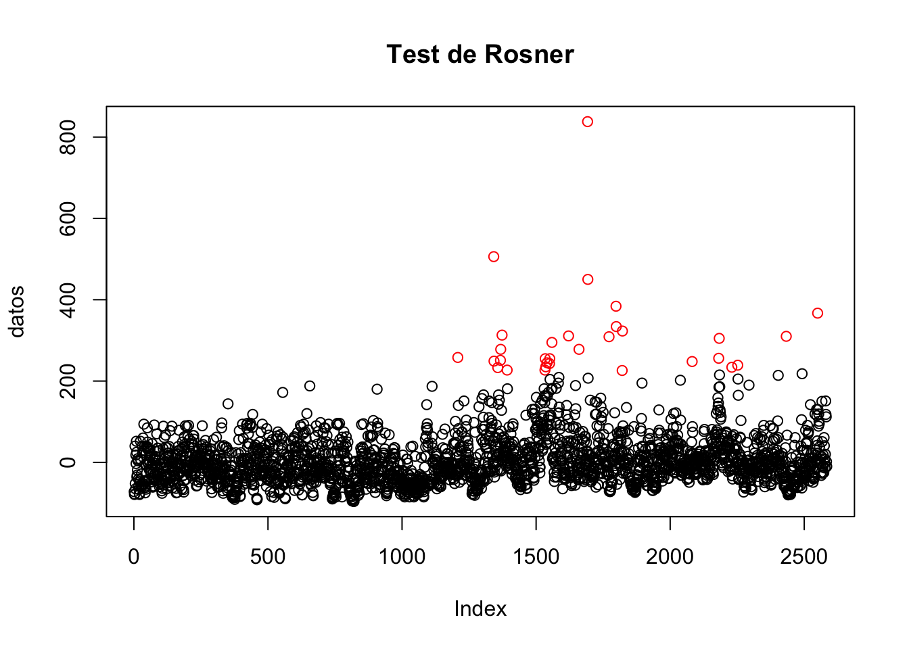
El test de Rosner funciona, y nos muestra los outliers en esta variable que hemos cogido como muestra.
Los outliers, podrán ser denominados como tal como resultado de la aparición de valores anómalos en una o varias de sus variables. En este estudio, obtendremos los valores de estos en como resultados de combinaciones de variables utilizando distribuciones normales.
Los datos que usaremos, son los mismos que en el anterior apartado, pero solo nos quedaremos con algunas de las variables ya que en pasos anteriores podremos usar como máximo 10 variables, para mejorar esto, eliminaremos aquellas variables muy correlacionadas, algo que podría influir también en la obtención de outliers multivariable. Eliminaremos de primeras las variables nbumps6, nbumps7, nbumps89, ya que siempre tienen valor 0 y no aportan nada.
library(corrplot)
M <- cor(seismic[,-c(1,2,3,8,14,15,16,19)])
corrplot(M, method = "circle")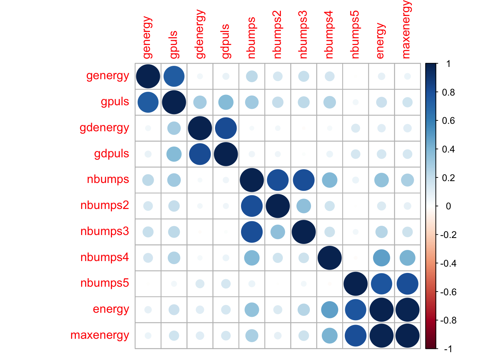
Podemos ver por tanto que enery y maxenergy tienen correlación de 1 prácticamente, por lo que nos quedaremos solo con energy.También eliminaremos genergy, gdenergy, nbums5 y nbums2 y 1 ya que nbums 3 será alto si las anteriores lo han sido.
mydata.numeric <- seismic[,-c(1,2,3,4,6,8,10,11,12,13,16,15,14,18,19)]
mydata.numeric.scaled <- scale(mydata.numeric)En esta sección, usaremos el paquete mvoutlier.
Utilizaremos el paquete mvoutlier para la obtención de los outliers que son considerados como tal por la combinación de varias de sus variables. Estos outliers son obtenidos por medio de la distancia de Mahalanobis, por lo que podremos usar los datos sin normalizar ya que esta medida es muy robusta a la escala.
Declaramos los parámetros de entradas y una semilla para poder reproducir resultados.
alpha.value = 0.05
alpha.value.penalizado = 1 - ( 1 - alpha.value) ^ (1 / nrow(mydata.numeric))
set.seed(12) Analizaremos los outliers provocados entre las variables gpuls y pgpuls, ya que si añadimos las demás variables uniplot no es capaz de obtener los resultados debido a la singularidad de la matriz que forma para sus cálculos.
mvoutlier.plot<-suppressWarnings(uni.plot(mydata.numeric[,c(1,2)], symb=FALSE, alpha = alpha.value.penalizado))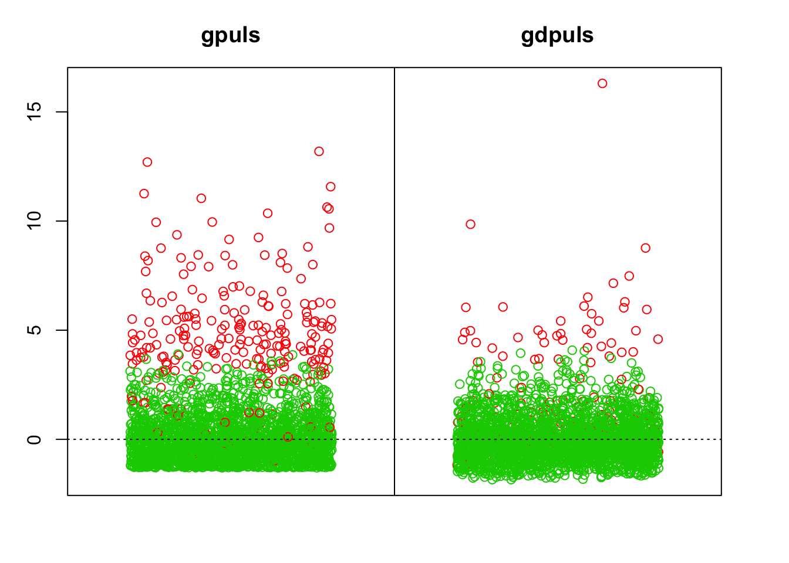
Si analizamos el gráfico podemos ver en rojo los outliers y en verde los ejemplos que no son outliers. Los datos interesantes en este caso, son aquellos, que no son outliers por sus valores altos, sino los que están situados en valores “normales” ya que estos serán outliers por combinaciones de varias de estas variables.
El gráfico anterior nos da una idea global de las anomalías en nuestro problema, pero será mucho más interesante obtener los ejemplos que representan a los datos en rojo (outliers). Para ello accedemos a los outliers del objeto mvoutlier.plot.
is.MCD.outlier <-mvoutlier.plot$outliers
numero.de.outliers.MCD<-sum(is.MCD.outlier, na.rm = T)
numero.de.outliers.MCD## [1] 436Tenemos por tanto 436 observaciones que son outliers en nuestro problema en función de estas variables. El siguiente paso, será obtener los outliers puros, es decir, aquellos que están debidos a combinaciones de variables y no a valores anómalos inusualmente altos o bajos en una de sus variables.
Para ello, construimos las siguientes variables:
Por tanto, debemos construir las siguientes variables:
indices.de.outliers.en.alguna.columna<-vector_claves_outliers_IQR_en_alguna_columna(mydata.numeric.scaled)
indices.de.outliers.multivariantes.MCD<-which(is.MCD.outlier)
indices.de.outliers.multivariantes.MCD.pero.no.1variantes<-setdiff(indices.de.outliers.multivariantes.MCD,
indices.de.outliers.en.alguna.columna)
nombres.de.outliers.multivariantes.MCD.pero.no.1variantes<-row.names(mydata.numeric)[indices.de.outliers.multivariantes.MCD.pero.no.1variantes]
unique<-unique(nombres.de.outliers.multivariantes.MCD.pero.no.1variantes)
unique## [1] "25" "50" "74" "75" "79" "81" "110" "120" "121" "123"
## [11] "128" "136" "138" "139" "144" "146" "150" "151" "154" "163"
## [21] "166" "184" "194" "245" "248" "277" "322" "323" "335" "340"
## [31] "356" "442" "443" "479" "503" "551" "584" "665" "666" "671"
## [41] "672" "673" "681" "682" "685" "688" "689" "700" "701" "726"
## [51] "739" "856" "885" "891" "893" "908" "909" "952" "1087" "1090"
## [61] "1091" "1093" "1094" "1095" "1111" "1268" "1272" "1493" "1547" "1548"
## [71] "1549" "1556" "1562" "1572" "1576" "1580" "1604" "1616" "1617" "1623"
## [81] "1635" "1637" "1638" "1689" "1696" "1699" "1700" "1712" "1721" "1727"
## [91] "1736" "1743" "1749" "1769" "1865" "1893" "1958" "2177" "2186" "2237"
## [101] "2244" "2247" "2263" "2540" "2547" "2554" "2581"Tenemos por tanto 107 outliers debidos a combinaciones de gdpuls y gpuls. Vamos a obtener todos los ejemplos que son outliers. Como nuestros nombres son numéricos puede hacerse de manera sencilla:
data.frame.solo.outliers<-data.frame(mydata.numeric.scaled[as.numeric(unique),])
data.frame.solo.outliers## gpuls gdpuls nbumps energy
## 1 0.942714432 0.039436993 0.8357512 0.050106961
## 2 -0.488008703 1.274267643 0.1029446 0.050106961
## 3 0.940937136 -0.767952278 -0.6298621 -0.243279618
## 4 0.347320332 -1.005419710 0.8357512 -0.033019236
## 5 1.264404975 0.071099318 0.8357512 -0.213940960
## 6 1.232413651 0.023605831 -0.6298621 -0.243279618
## 7 -0.562655128 1.337592292 0.1029446 0.001209198
## 8 1.397702162 -0.261355088 0.1029446 -0.047688565
## 9 0.791644287 -0.609640656 0.1029446 -0.047688565
## 10 1.410143233 -0.182199277 -0.6298621 -0.243279618
## 11 1.257295792 -0.293017412 0.1029446 -0.145484092
## 12 0.855626937 -0.577978332 -0.6298621 -0.243279618
## 13 0.649460622 -0.657134142 -0.6298621 -0.243279618
## 14 1.397702162 -0.134705791 0.1029446 -0.145484092
## 15 1.289287117 -0.213861601 -0.6298621 -0.243279618
## 16 1.191535847 -0.277186250 0.1029446 0.050106961
## 17 0.880509078 -0.403835548 -0.6298621 -0.243279618
## 18 0.926718770 -0.356342061 0.1029446 -0.199271631
## 19 1.390592979 0.086930480 -0.6298621 -0.243279618
## 20 1.474125882 -0.261355088 0.8357512 -0.125924987
## 21 1.237745538 -0.435497872 0.1029446 0.001209198
## 22 0.873399895 -0.577978332 -0.6298621 -0.243279618
## 23 0.841408570 -0.736289953 0.8357512 0.001209198
## 24 1.148880747 -0.293017412 -0.6298621 -0.243279618
## 25 0.796976175 -0.546316007 0.8357512 -0.174822750
## 26 1.497230728 -0.720458791 -0.6298621 -0.243279618
## 27 1.234190946 -0.530484845 -0.6298621 -0.243279618
## 28 1.445689149 -0.372173223 0.8357512 -0.062357894
## 29 1.445689149 -0.625471818 0.1029446 -0.223720513
## 30 1.273291454 -0.783783440 0.8357512 -0.209051184
## 31 1.230636355 -0.989588548 0.1029446 -0.223720513
## 32 -0.504004366 1.290098806 0.1029446 -0.145484092
## 33 -0.388480137 1.796695995 0.8357512 -0.130814763
## 34 -0.799035472 1.416748103 0.1029446 -0.228610289
## 35 -0.834581388 0.989306724 0.1029446 0.001209198
## 36 -0.797258176 0.846826265 0.1029446 -0.145484092
## 37 -0.822140317 0.767670454 -0.6298621 -0.243279618
## 38 1.159544522 -0.704627629 0.1029446 -0.096586329
## 39 1.129330493 -0.688796467 0.1029446 -0.233500066
## 40 0.704556792 -0.847108089 0.8357512 -0.165043197
## 41 1.036911110 -0.039718817 -0.6298621 -0.243279618
## 42 1.102671056 0.007774669 0.1029446 -0.223720513
## 43 1.267959567 0.102761642 0.8357512 -0.189492079
## 44 1.122221310 -0.039718817 0.1029446 0.001209198
## 45 0.812971837 -0.340510899 -0.6298621 -0.243279618
## 46 0.704556792 -0.482991359 0.8357512 -0.199271631
## 47 1.321278442 -0.071381142 0.8357512 -0.179712526
## 48 1.237745538 -0.150536953 0.1029446 -0.194381855
## 49 0.875177191 -0.403835548 0.8357512 -0.067247671
## 50 -0.344047742 1.416748103 -0.6298621 -0.243279618
## 51 1.243077426 -0.672965305 0.1029446 -0.145484092
## 52 -0.818585726 1.432579265 -0.6298621 -0.243279618
## 53 -0.804367359 1.305929968 -0.6298621 -0.243279618
## 54 -0.815031134 0.973475562 0.1029446 -0.218830737
## 55 -0.758157668 1.559228563 -0.6298621 -0.243279618
## 56 -0.756380372 1.321761130 -0.6298621 -0.243279618
## 57 -0.719057160 1.464241590 -0.6298621 -0.243279618
## 58 -0.838135980 1.005137886 -0.6298621 -0.243279618
## 59 -0.845245163 0.846826265 -0.6298621 -0.243279618
## 60 -0.839913276 0.957644400 -0.6298621 -0.243279618
## 61 -0.825694909 1.274267643 -0.6298621 -0.243279618
## 62 -0.783039809 1.290098806 -0.6298621 -0.243279618
## 63 -0.747493893 1.432579265 -0.6298621 -0.243279618
## 64 -0.738607414 1.179280670 -0.6298621 -0.243279618
## 65 1.497230728 0.672683481 -0.6298621 -0.243279618
## 66 -0.546659465 1.480072752 -0.6298621 -0.243279618
## 67 -0.626637777 1.100124859 -0.6298621 -0.243279618
## 68 -0.118331173 1.828358320 -0.6298621 -0.243279618
## 69 1.294619004 1.717540184 0.1029446 -0.228610289
## 70 1.282177934 1.701709022 0.1029446 -0.228610289
## 71 1.195090438 1.575059725 -0.6298621 -0.243279618
## 72 1.310614667 1.385085779 0.1029446 -0.218830737
## 73 1.411920528 1.052631373 -0.6298621 -0.243279618
## 74 1.056461364 0.292735588 0.1029446 0.001209198
## 75 -0.386702842 1.448410427 -0.6298621 -0.243279618
## 76 1.010251673 0.181917453 0.8357512 -0.062357894
## 77 -0.640856144 1.369254616 -0.6298621 -0.243279618
## 78 1.232413651 0.213579777 0.1029446 -0.209051184
## 79 1.100893760 0.102761642 -0.6298621 -0.243279618
## 80 0.894727445 -0.118874628 0.1029446 -0.213940960
## 81 1.280400638 0.071099318 0.1029446 -0.047688565
## 82 0.903613924 -0.213861601 -0.6298621 -0.243279618
## 83 0.635242255 -0.419666710 -0.6298621 -0.243279618
## 84 1.342605991 0.340229075 -0.6298621 -0.243279618
## 85 0.878731782 -0.023887655 -0.6298621 -0.243279618
## 86 0.976483053 0.055268156 -0.6298621 -0.243279618
## 87 0.827190204 -0.071381142 -0.6298621 -0.243279618
## 88 1.079566210 0.071099318 0.1029446 -0.096586329
## 89 -0.306724530 1.796695995 -0.6298621 -0.243279618
## 90 -0.390257433 1.353423454 -0.6298621 -0.243279618
## 91 -0.392034729 1.337592292 -0.6298621 -0.243279618
## 92 -0.347602333 1.575059725 -0.6298621 -0.243279618
## 93 1.161321818 0.482709534 0.1029446 0.050106961
## 94 -0.674624764 1.242605319 -0.6298621 -0.243279618
## 95 -0.669292877 1.321761130 -0.6298621 -0.243279618
## 96 1.298173596 1.638384374 -0.6298621 -0.243279618
## 97 0.279783091 1.970838779 0.1029446 -0.145484092
## 98 1.054684069 1.955007617 0.1029446 -0.047688565
## 99 0.007856831 1.970838779 0.8357512 -0.121035210
## 100 1.330164921 1.005137886 -0.6298621 -0.243279618
## 101 1.019138152 0.561865345 0.1029446 -0.228610289
## 102 1.253741200 0.846826265 -0.6298621 -0.243279618
## 103 0.887618262 -0.340510899 -0.6298621 -0.243279618
## 104 0.071839480 1.812527157 0.1029446 0.001209198
## 105 0.025629789 1.749202509 -0.6298621 -0.243279618
## 106 0.059398409 1.812527157 -0.6298621 -0.243279618
## 107 0.029184380 1.796695995 -0.6298621 -0.243279618row.names(data.frame.solo.outliers)## [1] "1" "2" "3" "4" "5" "6" "7" "8" "9" "10" "11"
## [12] "12" "13" "14" "15" "16" "17" "18" "19" "20" "21" "22"
## [23] "23" "24" "25" "26" "27" "28" "29" "30" "31" "32" "33"
## [34] "34" "35" "36" "37" "38" "39" "40" "41" "42" "43" "44"
## [45] "45" "46" "47" "48" "49" "50" "51" "52" "53" "54" "55"
## [56] "56" "57" "58" "59" "60" "61" "62" "63" "64" "65" "66"
## [67] "67" "68" "69" "70" "71" "72" "73" "74" "75" "76" "77"
## [78] "78" "79" "80" "81" "82" "83" "84" "85" "86" "87" "88"
## [89] "89" "90" "91" "92" "93" "94" "95" "96" "97" "98" "99"
## [100] "100" "101" "102" "103" "104" "105" "106" "107"Por último obtenemos el gráfico de estos outliers. Representaremos en rojo todos los outliers y etiquetaremos aquellos que son outliers debidos a combinaciones anómalas de las variables gdpuls y gpuls.
mydata.numeric <- seismic[,-c(1,2,3,4,6,8,10,16,15,14,18,19)]
mydata.numeric.scaled <- scale(mydata.numeric)
is.MCD.outlier[1:length(is.MCD.outlier)]<-FALSE
is.MCD.outlier[as.numeric(unique)]<-TRUE
MiBoxPlot_juntos(mydata.numeric.scaled,is.MCD.outlier) 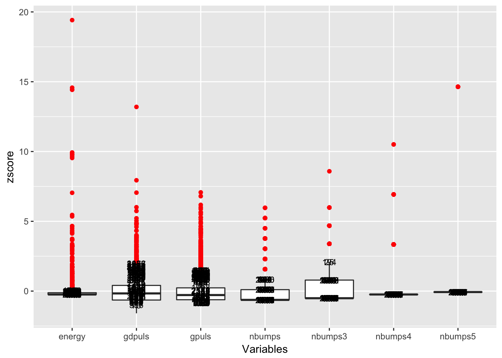
El gráfico es poco revelador debido a que los números se superponen en el gráfico, por lo que deberíamos encontrar algún otro método de visualización. Usaremos el biplot.
MiBiPlot_Multivariate_Outliers(mydata.numeric.scaled, is.MCD.outlier, "Outliers-Biplot")## NA NA NA NA NA NA NA NA NA NA NA NA NA NA NA NA NA NA NA NA NA NA NA NA NA NA NA NA NA NA NA NA NA NA NA NA NA NA NA NA NA NA NA NA NA NA NA NA NA NA NA NA NA NA NA NA NA NA NA NA NA NA NA NA NA NA NA NA NA NA NA NA NA NA NA NA NA NA NA NA NA NA NA NA NA NA NA NA NA NA NA NA NA NA NA NA NA NA NA NA NA NA NA NA NA NA NA## Warning: Removed 107 rows containing missing values (geom_text).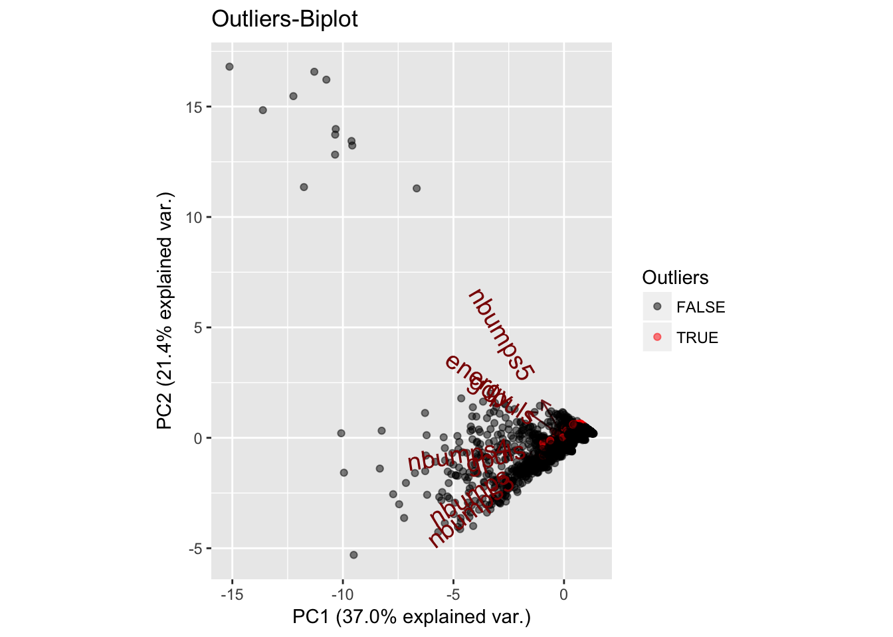
Nuevamente se hace muy complicado el estudio de los outliers, ya que los datos son muchos y las variables siguen estando muy correladas lo que implica que casi todo el gráfico vaya en la misma dirección. Además solo se han tenido en cuenta dos variables para que su combinación de como resultado un outlier.
Trataremos de centrarnos en los índices de outliers 2 varite que hemos obtenido antes para analizar que puede estar pasando, antes trataremos de mostrar en rojos estos outliers respecto a las correlaciones de las variables para intentar de encontrar algun patrón.
indices_de_Outliers<-which(rownames(mydata.numeric)==unique)## Warning in rownames(mydata.numeric) == unique: longitud de objeto mayor no
## es múltiplo de la longitud de uno menorMiPlot_Univariate_Outliers(mydata.numeric, indices_de_Outliers, "UnivariateOutliers")##
## N?mero de datos: 2584
## ?Qui?n es outlier?: FALSE FALSE FALSE FALSE FALSE FALSE FALSE FALSE FALSE FALSE FALSE FALSE FALSE FALSE FALSE FALSE FALSE FALSE FALSE FALSE FALSE FALSE FALSE FALSE FALSE FALSE FALSE FALSE FALSE FALSE FALSE FALSE FALSE FALSE FALSE FALSE FALSE FALSE FALSE FALSE FALSE FALSE FALSE FALSE FALSE FALSE FALSE FALSE FALSE FALSE FALSE FALSE FALSE FALSE FALSE FALSE FALSE FALSE FALSE FALSE FALSE FALSE FALSE FALSE FALSE FALSE FALSE FALSE FALSE FALSE FALSE FALSE FALSE FALSE FALSE FALSE FALSE FALSE FALSE FALSE FALSE FALSE FALSE FALSE FALSE FALSE FALSE FALSE FALSE FALSE FALSE FALSE FALSE FALSE FALSE FALSE FALSE FALSE FALSE FALSE FALSE FALSE FALSE FALSE FALSE FALSE FALSE FALSE FALSE FALSE FALSE FALSE FALSE FALSE FALSE FALSE FALSE FALSE FALSE FALSE FALSE FALSE FALSE FALSE FALSE FALSE FALSE FALSE FALSE FALSE FALSE FALSE FALSE FALSE FALSE FALSE FALSE FALSE FALSE FALSE FALSE FALSE FALSE FALSE FALSE FALSE FALSE FALSE FALSE FALSE FALSE FALSE FALSE FALSE FALSE FALSE FALSE FALSE FALSE FALSE FALSE FALSE FALSE FALSE FALSE FALSE FALSE FALSE FALSE FALSE FALSE FALSE FALSE FALSE FALSE FALSE FALSE FALSE FALSE FALSE FALSE FALSE FALSE FALSE FALSE FALSE FALSE FALSE FALSE FALSE FALSE FALSE FALSE FALSE FALSE FALSE FALSE FALSE FALSE FALSE FALSE FALSE FALSE FALSE FALSE FALSE FALSE FALSE FALSE FALSE FALSE FALSE FALSE FALSE FALSE FALSE FALSE FALSE FALSE FALSE FALSE FALSE FALSE FALSE FALSE FALSE FALSE FALSE FALSE FALSE FALSE FALSE FALSE FALSE FALSE FALSE FALSE FALSE FALSE FALSE FALSE FALSE FALSE FALSE FALSE FALSE FALSE FALSE FALSE FALSE FALSE FALSE FALSE FALSE FALSE FALSE FALSE FALSE FALSE FALSE FALSE FALSE FALSE FALSE FALSE FALSE FALSE FALSE FALSE FALSE FALSE FALSE FALSE FALSE FALSE FALSE FALSE FALSE FALSE FALSE FALSE FALSE FALSE FALSE FALSE FALSE FALSE FALSE FALSE FALSE FALSE FALSE FALSE FALSE FALSE FALSE FALSE FALSE FALSE FALSE FALSE FALSE FALSE FALSE FALSE FALSE FALSE FALSE FALSE FALSE FALSE FALSE FALSE FALSE FALSE FALSE FALSE FALSE FALSE FALSE FALSE FALSE FALSE FALSE FALSE FALSE FALSE FALSE FALSE FALSE FALSE FALSE FALSE FALSE FALSE FALSE FALSE FALSE FALSE FALSE FALSE FALSE FALSE FALSE FALSE FALSE FALSE FALSE FALSE FALSE FALSE FALSE FALSE FALSE FALSE FALSE FALSE FALSE FALSE FALSE FALSE FALSE FALSE FALSE FALSE FALSE FALSE FALSE FALSE FALSE FALSE FALSE FALSE FALSE FALSE FALSE FALSE FALSE FALSE FALSE FALSE FALSE FALSE FALSE FALSE FALSE FALSE FALSE FALSE FALSE FALSE FALSE FALSE FALSE FALSE FALSE FALSE FALSE FALSE FALSE FALSE FALSE FALSE FALSE FALSE FALSE FALSE FALSE FALSE FALSE FALSE FALSE FALSE FALSE FALSE FALSE FALSE FALSE FALSE FALSE FALSE FALSE FALSE FALSE FALSE FALSE FALSE FALSE FALSE FALSE FALSE FALSE FALSE FALSE FALSE FALSE FALSE FALSE FALSE FALSE FALSE FALSE FALSE FALSE FALSE FALSE FALSE FALSE FALSE FALSE FALSE FALSE FALSE FALSE FALSE FALSE FALSE FALSE FALSE FALSE FALSE FALSE FALSE FALSE FALSE FALSE FALSE FALSE FALSE FALSE FALSE FALSE FALSE FALSE FALSE FALSE FALSE FALSE FALSE FALSE FALSE FALSE FALSE FALSE FALSE FALSE FALSE FALSE FALSE FALSE FALSE FALSE FALSE FALSE FALSE FALSE FALSE FALSE FALSE FALSE FALSE FALSE FALSE FALSE FALSE FALSE FALSE FALSE FALSE FALSE FALSE FALSE FALSE FALSE FALSE FALSE FALSE FALSE FALSE FALSE FALSE FALSE FALSE FALSE FALSE FALSE FALSE FALSE FALSE FALSE FALSE FALSE FALSE FALSE FALSE FALSE FALSE FALSE FALSE FALSE FALSE FALSE FALSE FALSE FALSE FALSE FALSE FALSE FALSE FALSE FALSE FALSE FALSE FALSE FALSE FALSE FALSE FALSE FALSE FALSE FALSE FALSE FALSE FALSE FALSE FALSE FALSE FALSE FALSE FALSE FALSE FALSE FALSE FALSE FALSE FALSE FALSE FALSE FALSE FALSE FALSE FALSE FALSE FALSE FALSE FALSE FALSE FALSE FALSE FALSE FALSE FALSE FALSE FALSE FALSE FALSE FALSE FALSE FALSE FALSE FALSE FALSE FALSE FALSE FALSE FALSE FALSE FALSE FALSE FALSE FALSE FALSE FALSE FALSE FALSE FALSE FALSE FALSE FALSE FALSE FALSE FALSE FALSE FALSE FALSE FALSE FALSE FALSE FALSE FALSE FALSE FALSE FALSE FALSE FALSE FALSE FALSE FALSE FALSE FALSE FALSE FALSE FALSE FALSE FALSE FALSE FALSE FALSE FALSE FALSE FALSE FALSE FALSE FALSE FALSE FALSE FALSE FALSE FALSE FALSE FALSE FALSE FALSE FALSE FALSE FALSE FALSE FALSE FALSE FALSE FALSE FALSE FALSE FALSE FALSE FALSE FALSE FALSE FALSE FALSE FALSE FALSE FALSE FALSE FALSE FALSE FALSE TRUE TRUE FALSE FALSE FALSE FALSE FALSE FALSE FALSE FALSE FALSE FALSE FALSE FALSE FALSE FALSE FALSE FALSE FALSE FALSE FALSE FALSE FALSE FALSE FALSE FALSE FALSE FALSE FALSE FALSE FALSE FALSE FALSE FALSE FALSE FALSE FALSE FALSE FALSE FALSE FALSE FALSE FALSE FALSE FALSE FALSE FALSE FALSE FALSE FALSE FALSE FALSE FALSE FALSE FALSE FALSE FALSE FALSE FALSE FALSE FALSE FALSE FALSE FALSE FALSE FALSE FALSE FALSE FALSE FALSE FALSE FALSE FALSE FALSE FALSE FALSE FALSE FALSE FALSE FALSE FALSE FALSE FALSE FALSE FALSE FALSE FALSE FALSE FALSE FALSE FALSE FALSE FALSE FALSE FALSE FALSE FALSE FALSE FALSE FALSE FALSE FALSE FALSE FALSE FALSE FALSE FALSE FALSE FALSE FALSE FALSE FALSE FALSE FALSE FALSE FALSE FALSE FALSE FALSE FALSE FALSE FALSE FALSE FALSE FALSE FALSE FALSE FALSE FALSE FALSE FALSE FALSE FALSE FALSE FALSE FALSE FALSE FALSE FALSE FALSE FALSE FALSE FALSE FALSE FALSE FALSE FALSE FALSE FALSE FALSE FALSE FALSE FALSE FALSE FALSE FALSE FALSE FALSE FALSE FALSE FALSE FALSE FALSE FALSE FALSE FALSE FALSE FALSE FALSE FALSE FALSE FALSE FALSE FALSE FALSE FALSE FALSE FALSE FALSE FALSE FALSE FALSE FALSE FALSE FALSE FALSE FALSE FALSE FALSE FALSE FALSE FALSE FALSE FALSE FALSE FALSE FALSE FALSE FALSE FALSE FALSE FALSE FALSE FALSE FALSE FALSE FALSE FALSE FALSE FALSE FALSE FALSE FALSE FALSE FALSE FALSE FALSE FALSE FALSE FALSE FALSE FALSE FALSE FALSE FALSE FALSE FALSE FALSE FALSE FALSE FALSE FALSE FALSE FALSE FALSE FALSE FALSE FALSE FALSE FALSE FALSE FALSE FALSE FALSE FALSE FALSE FALSE FALSE FALSE FALSE FALSE FALSE FALSE FALSE FALSE FALSE FALSE FALSE FALSE FALSE FALSE FALSE FALSE FALSE FALSE FALSE FALSE FALSE FALSE FALSE FALSE FALSE FALSE FALSE FALSE FALSE FALSE FALSE FALSE FALSE FALSE FALSE FALSE FALSE FALSE FALSE FALSE FALSE FALSE FALSE FALSE FALSE FALSE FALSE FALSE FALSE FALSE FALSE FALSE FALSE FALSE FALSE FALSE FALSE FALSE FALSE FALSE FALSE FALSE FALSE FALSE FALSE FALSE FALSE FALSE FALSE FALSE FALSE FALSE FALSE FALSE FALSE FALSE FALSE FALSE FALSE FALSE FALSE FALSE FALSE FALSE FALSE FALSE FALSE FALSE FALSE FALSE FALSE FALSE FALSE FALSE FALSE FALSE FALSE FALSE FALSE FALSE FALSE FALSE FALSE FALSE FALSE FALSE FALSE FALSE FALSE FALSE FALSE FALSE FALSE FALSE FALSE FALSE FALSE FALSE FALSE FALSE FALSE FALSE FALSE FALSE FALSE FALSE FALSE FALSE FALSE FALSE FALSE FALSE FALSE FALSE FALSE FALSE FALSE FALSE FALSE FALSE FALSE FALSE FALSE FALSE FALSE FALSE FALSE FALSE FALSE FALSE FALSE FALSE FALSE FALSE FALSE FALSE FALSE FALSE FALSE FALSE FALSE FALSE FALSE FALSE FALSE FALSE FALSE FALSE FALSE FALSE FALSE FALSE FALSE FALSE FALSE FALSE FALSE FALSE FALSE FALSE FALSE FALSE FALSE FALSE FALSE FALSE FALSE FALSE FALSE FALSE FALSE FALSE FALSE FALSE FALSE FALSE FALSE FALSE FALSE FALSE FALSE FALSE FALSE FALSE FALSE FALSE FALSE FALSE FALSE FALSE FALSE FALSE FALSE FALSE FALSE FALSE FALSE FALSE FALSE FALSE FALSE FALSE FALSE FALSE FALSE FALSE FALSE FALSE FALSE FALSE FALSE FALSE FALSE FALSE FALSE FALSE FALSE FALSE FALSE FALSE FALSE FALSE FALSE FALSE FALSE FALSE FALSE FALSE FALSE FALSE FALSE FALSE FALSE FALSE FALSE FALSE FALSE FALSE FALSE FALSE FALSE FALSE FALSE FALSE FALSE FALSE FALSE FALSE FALSE FALSE FALSE FALSE FALSE FALSE FALSE FALSE FALSE FALSE FALSE FALSE FALSE FALSE FALSE FALSE FALSE FALSE FALSE FALSE FALSE FALSE FALSE FALSE FALSE FALSE FALSE FALSE FALSE FALSE FALSE FALSE FALSE FALSE FALSE FALSE FALSE FALSE FALSE FALSE FALSE FALSE FALSE FALSE FALSE FALSE FALSE FALSE FALSE FALSE FALSE FALSE FALSE FALSE FALSE FALSE FALSE FALSE FALSE FALSE FALSE FALSE FALSE FALSE FALSE FALSE FALSE FALSE FALSE FALSE FALSE FALSE FALSE FALSE FALSE FALSE FALSE FALSE FALSE FALSE FALSE FALSE FALSE FALSE FALSE FALSE FALSE FALSE FALSE FALSE FALSE FALSE FALSE FALSE FALSE FALSE FALSE FALSE FALSE FALSE FALSE FALSE FALSE FALSE FALSE FALSE FALSE FALSE FALSE FALSE FALSE FALSE FALSE FALSE FALSE FALSE FALSE FALSE FALSE FALSE FALSE FALSE FALSE FALSE FALSE FALSE FALSE FALSE FALSE FALSE FALSE FALSE FALSE FALSE FALSE FALSE FALSE FALSE FALSE FALSE FALSE FALSE FALSE FALSE FALSE FALSE FALSE FALSE FALSE FALSE FALSE FALSE FALSE FALSE FALSE FALSE FALSE FALSE FALSE FALSE FALSE FALSE FALSE FALSE FALSE FALSE FALSE FALSE FALSE FALSE FALSE FALSE FALSE FALSE FALSE FALSE FALSE FALSE FALSE FALSE FALSE FALSE FALSE FALSE FALSE FALSE FALSE FALSE FALSE FALSE FALSE FALSE FALSE FALSE FALSE FALSE FALSE FALSE FALSE FALSE FALSE FALSE FALSE FALSE FALSE FALSE FALSE FALSE FALSE FALSE FALSE FALSE FALSE FALSE FALSE FALSE FALSE FALSE FALSE FALSE FALSE FALSE FALSE FALSE FALSE FALSE FALSE FALSE FALSE FALSE FALSE FALSE FALSE FALSE FALSE FALSE FALSE FALSE FALSE FALSE FALSE FALSE FALSE FALSE FALSE FALSE FALSE FALSE FALSE FALSE FALSE FALSE FALSE FALSE FALSE FALSE FALSE FALSE FALSE FALSE FALSE FALSE FALSE FALSE FALSE FALSE FALSE FALSE FALSE FALSE FALSE FALSE FALSE FALSE FALSE FALSE FALSE FALSE FALSE FALSE FALSE FALSE FALSE FALSE FALSE FALSE FALSE FALSE FALSE FALSE FALSE FALSE FALSE FALSE FALSE FALSE FALSE FALSE FALSE FALSE FALSE FALSE FALSE FALSE FALSE FALSE FALSE FALSE FALSE FALSE FALSE FALSE FALSE FALSE FALSE FALSE FALSE FALSE FALSE FALSE FALSE FALSE FALSE FALSE FALSE FALSE FALSE FALSE FALSE FALSE FALSE FALSE FALSE FALSE FALSE FALSE FALSE FALSE FALSE FALSE FALSE FALSE FALSE FALSE FALSE FALSE FALSE FALSE FALSE FALSE FALSE FALSE FALSE FALSE FALSE FALSE FALSE FALSE FALSE FALSE FALSE FALSE FALSE FALSE FALSE FALSE FALSE FALSE FALSE TRUE FALSE FALSE FALSE FALSE FALSE FALSE FALSE FALSE FALSE FALSE FALSE FALSE FALSE FALSE FALSE FALSE FALSE FALSE FALSE FALSE FALSE FALSE FALSE FALSE FALSE FALSE FALSE FALSE FALSE FALSE FALSE FALSE FALSE FALSE FALSE FALSE FALSE FALSE FALSE FALSE FALSE FALSE FALSE FALSE FALSE FALSE FALSE FALSE FALSE FALSE FALSE FALSE FALSE FALSE FALSE FALSE FALSE FALSE FALSE FALSE FALSE FALSE FALSE FALSE FALSE FALSE FALSE FALSE FALSE FALSE FALSE FALSE FALSE FALSE FALSE FALSE FALSE FALSE FALSE FALSE FALSE FALSE FALSE FALSE FALSE FALSE FALSE FALSE FALSE FALSE FALSE FALSE FALSE FALSE FALSE FALSE FALSE FALSE FALSE FALSE FALSE FALSE FALSE FALSE FALSE FALSE FALSE FALSE FALSE FALSE FALSE FALSE FALSE FALSE FALSE FALSE TRUE FALSE FALSE FALSE FALSE FALSE FALSE FALSE FALSE FALSE FALSE FALSE FALSE FALSE FALSE FALSE FALSE FALSE FALSE FALSE FALSE FALSE FALSE FALSE FALSE FALSE FALSE FALSE FALSE FALSE FALSE FALSE FALSE FALSE FALSE FALSE FALSE FALSE FALSE FALSE FALSE FALSE FALSE FALSE FALSE FALSE FALSE FALSE FALSE FALSE FALSE FALSE FALSE FALSE FALSE FALSE FALSE FALSE FALSE FALSE FALSE FALSE FALSE FALSE FALSE FALSE FALSE FALSE FALSE FALSE FALSE FALSE FALSE FALSE FALSE FALSE FALSE FALSE FALSE FALSE FALSE FALSE FALSE FALSE FALSE FALSE FALSE FALSE FALSE FALSE FALSE FALSE FALSE FALSE FALSE FALSE FALSE FALSE FALSE FALSE FALSE FALSE FALSE FALSE FALSE FALSE FALSE FALSE FALSE FALSE FALSE FALSE FALSE FALSE FALSE FALSE FALSE FALSE FALSE FALSE FALSE FALSE FALSE FALSE FALSE FALSE FALSE FALSE FALSE FALSE FALSE FALSE FALSE FALSE FALSE FALSE FALSE FALSE FALSE FALSE FALSE FALSE FALSE FALSE FALSE FALSE FALSE FALSE FALSE FALSE FALSE FALSE FALSE FALSE FALSE FALSE FALSE FALSE FALSE FALSE FALSE FALSE FALSE FALSE FALSE FALSE FALSE FALSE FALSE FALSE FALSE FALSE FALSE FALSE FALSE FALSE FALSE FALSE FALSE FALSE FALSE FALSE FALSE FALSE FALSE FALSE FALSE FALSE FALSE FALSE FALSE FALSE FALSE FALSE FALSE FALSE FALSE FALSE FALSE FALSE FALSE FALSE FALSE FALSE FALSE FALSE FALSE FALSE FALSE FALSE FALSE FALSE FALSE FALSE FALSE FALSE FALSE FALSE FALSE FALSE FALSE FALSE FALSE FALSE FALSE FALSE FALSE FALSE FALSE FALSE FALSE FALSE FALSE FALSE FALSE FALSE FALSE FALSE FALSE FALSE FALSE FALSE FALSE FALSE FALSE FALSE FALSE FALSE FALSE FALSE FALSE FALSE FALSE FALSE FALSE FALSE FALSE FALSE FALSE FALSE FALSE FALSE FALSE FALSE FALSE FALSE FALSE FALSE FALSE FALSE FALSE FALSE FALSE FALSE FALSE FALSE FALSE FALSE FALSE FALSE FALSE FALSE FALSE FALSE FALSE FALSE FALSE FALSE FALSE FALSE FALSE FALSE FALSE FALSE FALSE FALSE FALSE FALSE FALSE FALSE FALSE FALSE FALSE FALSE FALSE FALSE FALSE FALSE FALSE FALSE FALSE FALSE FALSE FALSE FALSE FALSE FALSE FALSE FALSE FALSE FALSE FALSE FALSE FALSE FALSE FALSE FALSE FALSE FALSE FALSE FALSE FALSE FALSE FALSE FALSE FALSE FALSE FALSE FALSE FALSE FALSE FALSE FALSE FALSE FALSE FALSE FALSE FALSE FALSE FALSE FALSE FALSE FALSE FALSE FALSE FALSE FALSE FALSE FALSE FALSE FALSE FALSE FALSE FALSE FALSE FALSE FALSE FALSE FALSE FALSE FALSE FALSE FALSE FALSE FALSE FALSE FALSE FALSE FALSE FALSE FALSE FALSE FALSE FALSE FALSE FALSE FALSE FALSE FALSE FALSE FALSE FALSE FALSE FALSE FALSE FALSE FALSE FALSE FALSE FALSE FALSE FALSE FALSE FALSE FALSE FALSE FALSE FALSE FALSE FALSE FALSE FALSE FALSE FALSE FALSE FALSE FALSE FALSE FALSE FALSE FALSE FALSE FALSE FALSE FALSE FALSE FALSE FALSE FALSE FALSE FALSE FALSE FALSE FALSE FALSE FALSE FALSE FALSE FALSE FALSE FALSE FALSE FALSE FALSE FALSE FALSE FALSE FALSE FALSE FALSE FALSE FALSE FALSE FALSE FALSE FALSE FALSE FALSE FALSE FALSE FALSE FALSE FALSE FALSE FALSE FALSE FALSE FALSE FALSE FALSE FALSE FALSE FALSE FALSE FALSE FALSE FALSE FALSE FALSE FALSE FALSE FALSE FALSE FALSE FALSE FALSE FALSE FALSE FALSE FALSE FALSE FALSE FALSE FALSE FALSE FALSE FALSE FALSE FALSE FALSE FALSE FALSE FALSE FALSE FALSE FALSE FALSE FALSE FALSE FALSE FALSE FALSE FALSE FALSE FALSE FALSE FALSE FALSE FALSE FALSE FALSE FALSE FALSE FALSE FALSE FALSE FALSE FALSE FALSE FALSE FALSE FALSE FALSE FALSE FALSE FALSE FALSE FALSE FALSE FALSE FALSE FALSE FALSE FALSE FALSE FALSE FALSE FALSE FALSE FALSE FALSE FALSE FALSE FALSE FALSE FALSE FALSE FALSE FALSE FALSE FALSE FALSE FALSE FALSE FALSE FALSE FALSE FALSE FALSE FALSE FALSE FALSE FALSE FALSE FALSE FALSE FALSE FALSE FALSE FALSE FALSE FALSE FALSE FALSE FALSE FALSE FALSE FALSE FALSE FALSE FALSE FALSE FALSE FALSE FALSE FALSE FALSE FALSE FALSE FALSE FALSE FALSE FALSE FALSE FALSE FALSE FALSE FALSE FALSE FALSE FALSE FALSE FALSE FALSE FALSE FALSE FALSE FALSE FALSE FALSE FALSE FALSE FALSE FALSE FALSE FALSE FALSE FALSE FALSE FALSE FALSE FALSE FALSE FALSE FALSE FALSE FALSE FALSE FALSE FALSE FALSE FALSE FALSE FALSE FALSE FALSE FALSE FALSE FALSE FALSE FALSE FALSE FALSE FALSE FALSE FALSE FALSE FALSE FALSE FALSE FALSE FALSE FALSE FALSE FALSE FALSE FALSE FALSE FALSE FALSE FALSE FALSE FALSE FALSE FALSE FALSE FALSE FALSE FALSE FALSE FALSE FALSE FALSE FALSE FALSE FALSE FALSE FALSE FALSE FALSE FALSE FALSE FALSE FALSE FALSE FALSE FALSE FALSE FALSE FALSE FALSE FALSE FALSE FALSE FALSE FALSE FALSE FALSE FALSE FALSE FALSE FALSE FALSE FALSE FALSE FALSE FALSE FALSE FALSE FALSE FALSE FALSE FALSE FALSE FALSE FALSE FALSE FALSE FALSE FALSE FALSE FALSE FALSE FALSE FALSE FALSE FALSE FALSE FALSE FALSE FALSE FALSE FALSE FALSE FALSE FALSE FALSE FALSE FALSE FALSE FALSE FALSE FALSE FALSE FALSE FALSE FALSE FALSE FALSE FALSE FALSE FALSE FALSE FALSE FALSE FALSE FALSE FALSE FALSE FALSE FALSE FALSE FALSE FALSE FALSE FALSE FALSE FALSE FALSE FALSE FALSE FALSE FALSE FALSE FALSE FALSE FALSE FALSE FALSE FALSE FALSE FALSE FALSE FALSE FALSE FALSE FALSE FALSE FALSE FALSE FALSE FALSE FALSE FALSE FALSE FALSE FALSE FALSE FALSE FALSE FALSE FALSE FALSE FALSE FALSE FALSE FALSE FALSE FALSE FALSE FALSE FALSE FALSE FALSE FALSE FALSE FALSE FALSE FALSE FALSE FALSE FALSE FALSE FALSE FALSE FALSE FALSE FALSE FALSE FALSE FALSE FALSE FALSE FALSE FALSE FALSE FALSE FALSE FALSE FALSE FALSE FALSE FALSE FALSE FALSE FALSE FALSE FALSE FALSE FALSE FALSE FALSE FALSE FALSE FALSE FALSE FALSE FALSE FALSE FALSE FALSE FALSE FALSE FALSE FALSE FALSE FALSE FALSE FALSE FALSE FALSE FALSE FALSE FALSE FALSE FALSE FALSE FALSE FALSE FALSE FALSE FALSE FALSE FALSE FALSE FALSE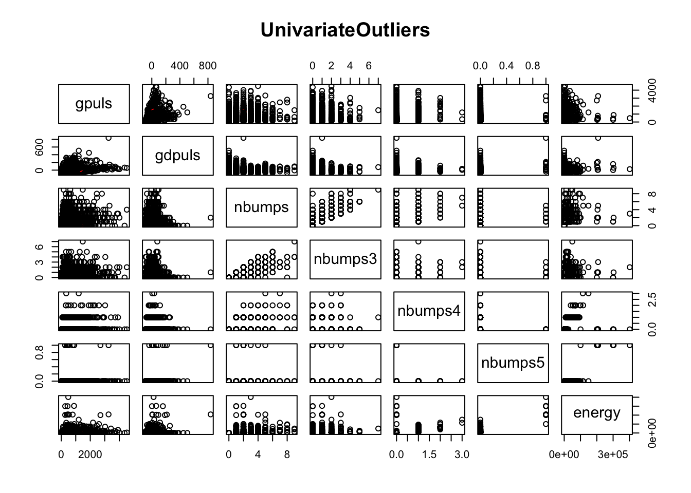
Nuevamente la gran cantidad de datos hace imposible obtener ninguna interpretación gráfica sobre los datos. Igualmente, todo el proceso viene afectado por los problemas con la funcion uni.plot().
summary(mydata.numeric.scaled)## gpuls gdpuls nbumps nbumps3
## Min. :-0.9537 Min. :-1.5912 Min. :-0.6299 Min. :-0.5103
## 1st Qu.:-0.6195 1st Qu.:-0.6413 1st Qu.:-0.6299 1st Qu.:-0.5103
## Median :-0.2836 Median :-0.1664 Median :-0.6299 Median :-0.5103
## Mean : 0.0000 Mean : 0.0000 Mean : 0.0000 Mean : 0.0000
## 3rd Qu.: 0.2318 3rd Qu.: 0.4075 3rd Qu.: 0.1029 3rd Qu.: 0.7889
## Max. : 7.0726 Max. :13.1951 Max. : 5.9654 Max. : 8.5840
## nbumps4 nbumps5 energy
## Min. :-0.2427 Min. :-0.06829 Min. :-0.2433
## 1st Qu.:-0.2427 1st Qu.:-0.06829 1st Qu.:-0.2433
## Median :-0.2427 Median :-0.06829 Median :-0.2433
## Mean : 0.0000 Mean : 0.00000 Mean : 0.0000
## 3rd Qu.:-0.2427 3rd Qu.:-0.06829 3rd Qu.:-0.1161
## Max. :10.5077 Max. :14.63729 Max. :19.4136summary(mydata.numeric.scaled[as.numeric(unique),])## gpuls gdpuls nbumps nbumps3
## Min. :-0.8452 Min. :-1.0054 Min. :-0.6299 Min. :-0.51032
## 1st Qu.:-0.3894 1st Qu.:-0.2930 1st Qu.:-0.6299 1st Qu.:-0.51032
## Median : 0.8805 Median : 0.2136 Median :-0.6299 Median :-0.51032
## Mean : 0.5153 Mean : 0.4874 Mean :-0.1710 Mean :-0.08536
## 3rd Qu.: 1.2360 3rd Qu.: 1.3376 3rd Qu.: 0.1029 3rd Qu.: 0.78887
## Max. : 1.4972 Max. : 1.9708 Max. : 0.8358 Max. : 2.08806
## nbumps4 nbumps5 energy
## Min. :-0.2427 Min. :-0.06829 Min. :-0.24328
## 1st Qu.:-0.2427 1st Qu.:-0.06829 1st Qu.:-0.24328
## Median :-0.2427 Median :-0.06829 Median :-0.24328
## Mean :-0.2427 Mean :-0.06829 Mean :-0.18392
## 3rd Qu.:-0.2427 3rd Qu.:-0.06829 3rd Qu.:-0.14548
## Max. :-0.2427 Max. :-0.06829 Max. : 0.05011Dado que los gráficos no ofrecen mucha información en nuestro problema, hemos intentado obtener por medios de datos estadísticos, de medias, medianas y cuartiles alguna razon de porque estos pueden estar siendo considerados outliers. Para ello calculamos las estadísticas del dataset completo y de los datos que son considerados outliers en función de estas dos variables.
Los datos tampoco son concluyentes y todo parece apuntar a que los outliers que tendremos vendrán dados casi en la totalidad por valores anómalos en una variable, que a muy seguro también serán anómalos otras al tratarse de medidas de energía y que están muy correlacionadas como hemos visto anteriormente.
Descartamos por tanto el método de Mahalanobis para la obtención de outliers, dado que estos son muchos en nuestro problema y tienen valores similares entre las variables y las observaciones (poca varianza) que además están muy correlacionadas por lo que usaremos otras técnicas que puedan comportarse mejor en nuestro problema como LOF o técnicas de clustering que será lo que veremos en la siguiente sección.
Dado que tanto las técnicas LOF como las basadas en clustering trabajan con distancias, deberemos basarnos en datos normalizados. Para ello, basandonos en el estudio de correlaciones visto anteriormente para reducir las instancias, nos quedaremos con las variables numéricas más importantes y menos correlacionadas para este estudio.
Creamos los objetos que contendrán los datos que usaremos:
mydata.numeric <- seismic[,-c(1,2,3,4,6,8,10,14,15,16,18,19)]
mydata.numeric.scaled <- scale(mydata.numeric)
row.names(mydata.numeric.scaled)<-row.names(mydata.numeric)Antes de comenzar a usar estas técnicas, volveremos a realiazr un análisis grosso modo utilizando las técnicas de distantacias Manhalanobis, demostrando como en la anterior sección que estas no pueden aplicarse al dominio de nuestro problema.
#Obtenemos los outliers del plot de la sección anterior
is.MCD.outlier <-mvoutlier.plot$outliers
numero.de.outliers.MCD<-sum(is.MCD.outlier, na.rm = T)
#Dibujamos un gráfico de correlación con las medidas Manhalobis
corr.plot(mydata.numeric.scaled[,1], mydata.numeric.scaled[,2])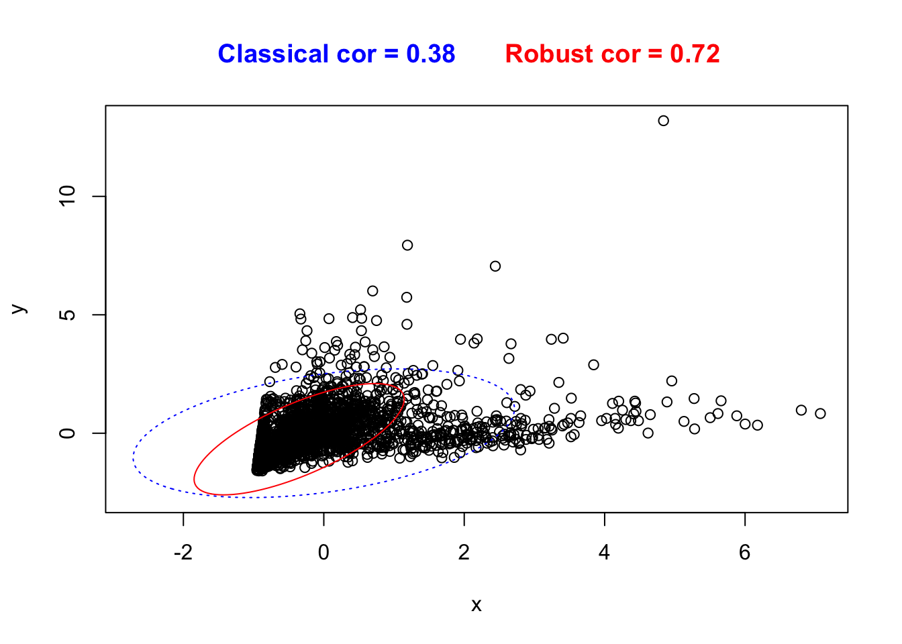
## $cor.cla
## [1] 0.3829059
##
## $cor.rob
## [1] 0.7200234Si analiazamos el gráfico anterior, podemos comprobar como la elipse azul (distancia Manhalobis) si que es capaz de discernir entre ciertos outliers, ya que aunque solo hace un grupo, engloba a los más representativos aunque sin duda para nuestro problema es muy optimista. Por otro lado, la medida Manhalobis robusta (elipse roja) engloba al grupo mayoritario y consideraría outliers todo lo demás, algo que se ajusta para nada a la realidad. Por último, vamos a analizar el biplot, pero eliminaremos algunos datos para obtener una mejor representación:
mydata.numeric2<-mydata.numeric[1:500,]
MiBiplot(mydata.numeric2)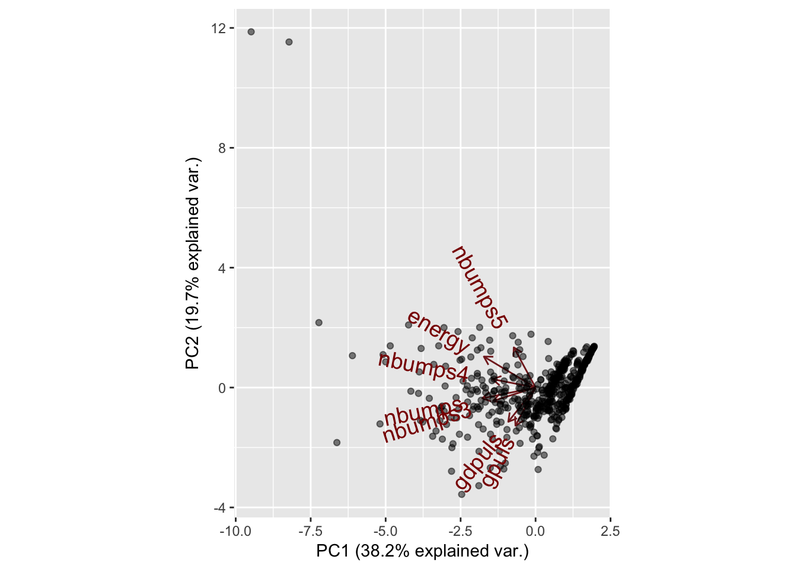
Nuevamente vemos una estrecha correlación entre las variables, aunque ahora si que podemos ver algo mejor la distribución de los datos que igualmente, tienen mucho solapamiento y problemente variaznas no muy elevadas. Estudiaremos por tanto los outliers con distancia LOF.
El primer paso será obtener el vector con los scrores LOF para cada uno de los ejemplos, para esto, deberemos definir el número de vecinos LOF.
numero.de.vecinos.lof = 5
lof.scores<-lofactor(mydata.numeric.scaled,k=numero.de.vecinos.lof)
lof.scores<-lof.scores[is.finite(lof.scores)]
plot(lof.scores)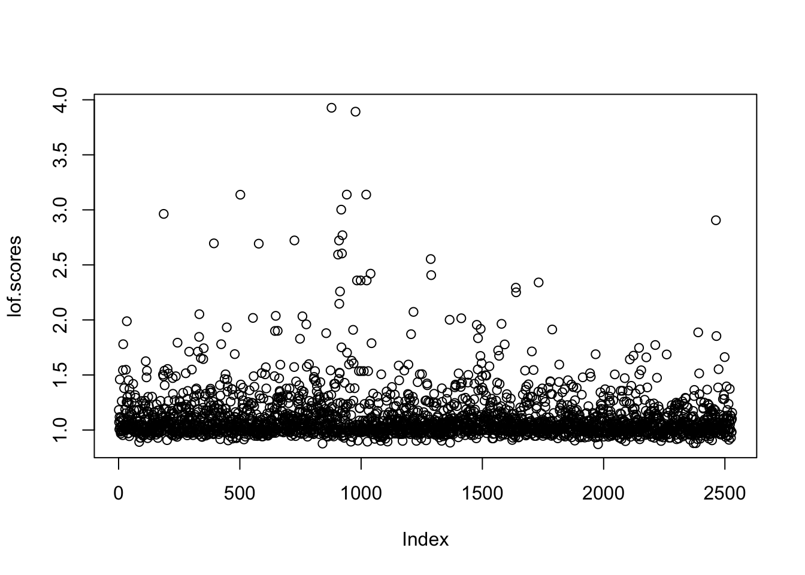
Si análiamos el gráfico, podemos contabilizar unos 25 ejemplos que salen mucho de lo normal en el gráfico, por lo que usaremos estos ejemplos como partida para la siguiente variable. Además, obtendremos los índices de las muestras que aparecen consideradas como outliers segun la métrica LOF.
numero.de.outliers = 25
names(lof.scores)<-1:length(lof.scores)
lof.scores<-sort(lof.scores,decreasing = T)
indices.de.lof.outliers.ordenados <- as.integer(names(lof.scores))
#Seleccionamos los 25 primeros
indices.de.lof.top.outliers<-indices.de.lof.outliers.ordenados[1:25]Por último, obtendremos estos outliers en un vector lógico y utilizaremos la representación biplot.
is.lof.outlier<- row.names(mydata.numeric.scaled) %in% indices.de.lof.top.outliers
MiBiPlot_Multivariate_Outliers(mydata.numeric.scaled, is.lof.outlier, "Biplot de los outliers LOF")## 186 393 502 578 725 878 905 909 913 918 921 923 941 977 983 998 1021 1023 1039 1287 1289 1638 1639 1732 2463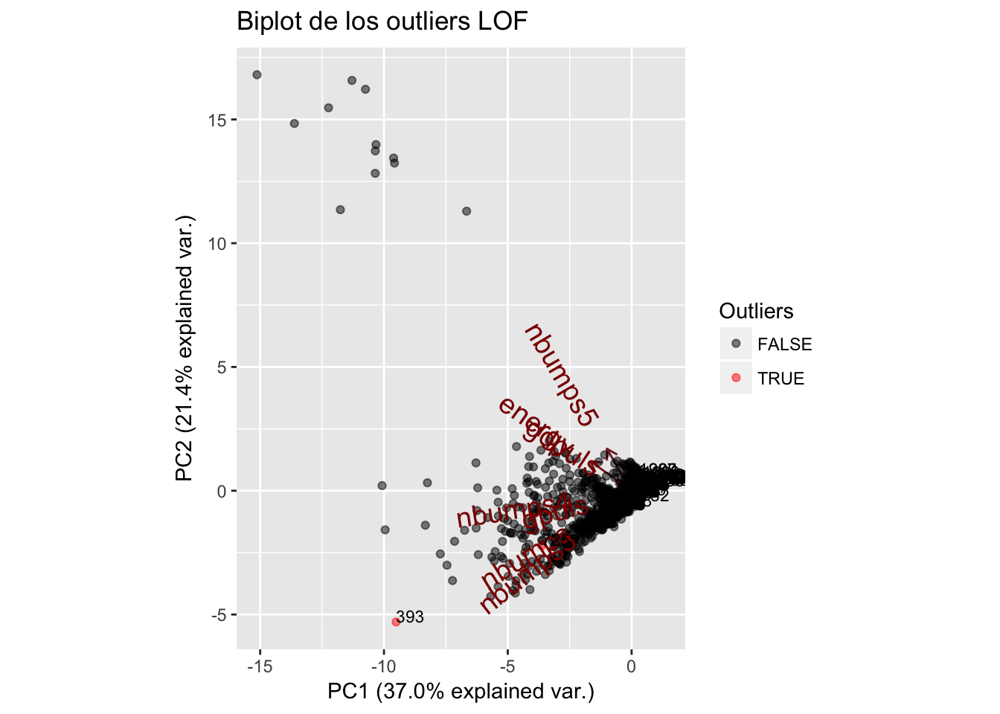
Nuevamente la gran cantidad de datos que tiene el dataset nos dificulta ver donde se situan los outliers, aunque tenemos claro que están sitados en el mismo lugar que nos ofrecia la medida Manhalobis, es decir, reunidos en el centro. Aún así, de este modo, encontramos la medida 393, que está correctamente localizada como outlier y puede ser que sea un outlier 2-variate debido a combinaciones anómalas de las gpuls y nbumps. Vamos a comprobar esta premisa.
#Mostramos las variables estadisticas del dataset escalado:
summary(mydata.numeric.scaled)## gpuls gdpuls nbumps nbumps3
## Min. :-0.9537 Min. :-1.5912 Min. :-0.6299 Min. :-0.5103
## 1st Qu.:-0.6195 1st Qu.:-0.6413 1st Qu.:-0.6299 1st Qu.:-0.5103
## Median :-0.2836 Median :-0.1664 Median :-0.6299 Median :-0.5103
## Mean : 0.0000 Mean : 0.0000 Mean : 0.0000 Mean : 0.0000
## 3rd Qu.: 0.2318 3rd Qu.: 0.4075 3rd Qu.: 0.1029 3rd Qu.: 0.7889
## Max. : 7.0726 Max. :13.1951 Max. : 5.9654 Max. : 8.5840
## nbumps4 nbumps5 energy
## Min. :-0.2427 Min. :-0.06829 Min. :-0.2433
## 1st Qu.:-0.2427 1st Qu.:-0.06829 1st Qu.:-0.2433
## Median :-0.2427 Median :-0.06829 Median :-0.2433
## Mean : 0.0000 Mean : 0.00000 Mean : 0.0000
## 3rd Qu.:-0.2427 3rd Qu.:-0.06829 3rd Qu.:-0.1161
## Max. :10.5077 Max. :14.63729 Max. :19.4136#Mostramos los valores para la muestra:
mydata.numeric.scaled[c(393,878,1021,502),]## gpuls gdpuls nbumps nbumps3 nbumps4 nbumps5
## 393 1.6767376 1.1634495 5.9653978 8.5840132 3.3407840 -0.0682922
## 878 -0.8736819 -0.1188746 0.8357512 0.7888664 -0.2426888 -0.0682922
## 1021 -0.8879003 -0.1030435 -0.6298621 -0.5103247 -0.2426888 -0.0682922
## 502 -0.9092278 -0.6254718 -0.6298621 -0.5103247 -0.2426888 -0.0682922
## energy
## 393 2.191828989
## 878 -0.008570355
## 1021 -0.243279618
## 502 -0.243279618Parece que todos las otras observaciones que hemos comprobado, siguen una cierta pogresión en nbumps, que son el número de medidas de cierta energía de manera ordinal que se obtienen, pero la que salio de ojo en neustro estudio la 393, tiene una gran diferencia con todas las demás en este punto, por lo que puede ser un outlier debido además de porque contiene outliers en sus columnas, la combinación de datos en la variables nbumps es muy anómala.
En primer lugar, obtenemos los outliers IQR.
vector.claves.outliers.IQR.en.alguna.columna<-vector_claves_outliers_IQR_en_alguna_columna(mydata.numeric.scaled)
vector.es.outlier.IQR.en.alguna.columna <- vector_es_outlier_IQR_en_alguna_columna(mydata.numeric.scaled)
vector.claves.outliers.IQR.en.alguna.columna<-unique(vector.claves.outliers.IQR.en.alguna.columna)
MiBiPlot_Multivariate_Outliers(mydata.numeric.scaled, vector.es.outlier.IQR.en.alguna.columna, "Biplot de los outliers IQR")## 16 31 34 37 53 60 68 71 125 129 130 133 140 141 153 156 159 160 161 162 165 167 169 170 171 172 174 175 176 177 180 182 183 189 190 191 192 193 195 196 197 198 199 200 201 202 203 204 205 206 207 209 210 211 212 213 214 215 216 217 218 219 220 222 223 224 225 230 231 234 235 237 239 240 241 243 244 246 247 251 252 253 254 255 256 257 258 259 260 261 262 263 264 265 266 267 268 269 270 272 273 274 275 276 278 279 280 281 282 283 284 285 286 287 288 296 297 298 299 300 301 302 303 304 305 306 307 309 310 314 315 316 317 318 319 320 321 324 325 326 327 328 329 330 331 336 337 338 339 341 342 343 344 345 346 347 348 350 351 352 353 354 355 357 358 362 363 364 365 377 378 379 380 381 382 384 385 386 387 388 389 390 391 392 393 398 399 400 402 403 404 405 406 407 408 410 411 412 413 414 415 416 417 419 420 421 422 423 424 425 426 427 428 429 430 431 432 434 435 436 439 440 441 444 445 446 447 448 449 450 451 452 453 454 461 462 464 465 466 467 468 469 473 474 475 477 482 485 486 487 488 489 490 491 495 496 504 506 507 509 510 512 513 515 516 518 519 524 528 532 534 536 546 549 554 555 556 557 558 560 561 566 567 568 569 571 572 575 590 591 592 593 595 596 598 601 609 612 614 615 619 621 622 623 625 630 633 634 635 637 638 639 640 641 642 645 646 647 651 652 654 656 658 663 667 675 683 684 686 687 690 692 693 694 695 696 697 698 699 702 703 704 705 706 707 708 711 713 714 715 716 717 718 719 720 721 722 723 724 725 734 735 736 737 738 740 743 744 745 747 750 751 755 756 758 759 760 764 767 770 777 778 783 785 786 788 791 792 793 798 799 800 801 802 803 805 806 822 824 825 826 830 831 849 852 854 855 861 863 865 882 907 910 923 929 1092 1112 1194 1208 1210 1231 1234 1287 1298 1304 1325 1335 1342 1343 1352 1354 1357 1359 1360 1363 1367 1368 1373 1374 1387 1392 1393 1406 1448 1485 1488 1495 1496 1501 1512 1517 1523 1530 1531 1532 1533 1534 1535 1536 1541 1542 1546 1550 1551 1552 1553 1554 1557 1558 1559 1560 1570 1575 1581 1582 1583 1585 1586 1613 1614 1615 1618 1619 1620 1621 1624 1629 1636 1647 1648 1655 1657 1660 1670 1673 1674 1684 1688 1692 1693 1694 1702 1704 1720 1725 1726 1732 1733 1739 1741 1742 1763 1772 1773 1786 1787 1791 1797 1798 1799 1800 1811 1821 1822 1827 1829 1837 1840 1881 1895 1924 1949 1954 1964 1968 1984 1986 1998 2003 2038 2047 2048 2082 2124 2130 2133 2146 2153 2156 2163 2178 2179 2180 2181 2182 2183 2184 2185 2187 2210 2211 2230 2231 2251 2252 2253 2254 2261 2262 2286 2293 2294 2299 2312 2334 2337 2341 2348 2372 2381 2385 2401 2403 2418 2433 2449 2492 2514 2523 2524 2544 2546 2550 2551 2553 2555 2566 2580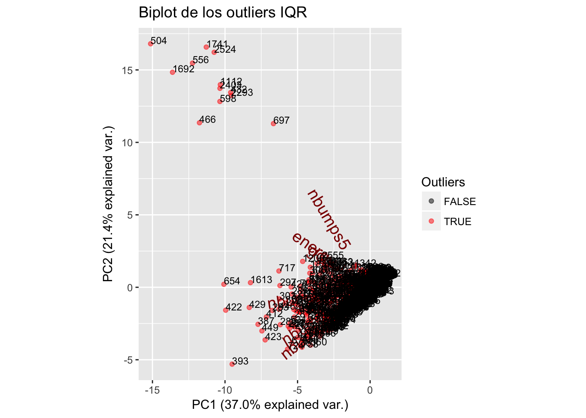
Vemos como el número de outliers aumentan y se localiazan aquellos que tienen datos anómalos en una columna al menos. Tras obtener estos, los comparamos con setdiff con aquellos que son outliers LOF, quedandonos solo con aquellos que son outliers por combinación de variables.
indices.de.outliers.multivariantes.LOF.pero.no.1variantes<-setdiff(indices.de.lof.top.outliers, vector.claves.outliers.IQR.en.alguna.columna)Por último vamos a mostrar sobre los datos reales estos ejemplos y compararlos con las medidas estadísticas básicas para ver que puede ocurrir con ellos
summary(mydata.numeric.scaled)## gpuls gdpuls nbumps nbumps3
## Min. :-0.9537 Min. :-1.5912 Min. :-0.6299 Min. :-0.5103
## 1st Qu.:-0.6195 1st Qu.:-0.6413 1st Qu.:-0.6299 1st Qu.:-0.5103
## Median :-0.2836 Median :-0.1664 Median :-0.6299 Median :-0.5103
## Mean : 0.0000 Mean : 0.0000 Mean : 0.0000 Mean : 0.0000
## 3rd Qu.: 0.2318 3rd Qu.: 0.4075 3rd Qu.: 0.1029 3rd Qu.: 0.7889
## Max. : 7.0726 Max. :13.1951 Max. : 5.9654 Max. : 8.5840
## nbumps4 nbumps5 energy
## Min. :-0.2427 Min. :-0.06829 Min. :-0.2433
## 1st Qu.:-0.2427 1st Qu.:-0.06829 1st Qu.:-0.2433
## Median :-0.2427 Median :-0.06829 Median :-0.2433
## Mean : 0.0000 Mean : 0.00000 Mean : 0.0000
## 3rd Qu.:-0.2427 3rd Qu.:-0.06829 3rd Qu.:-0.1161
## Max. :10.5077 Max. :14.63729 Max. :19.4136mydata.numeric.scaled[indices.de.outliers.multivariantes.LOF.pero.no.1variantes,]## gpuls gdpuls nbumps nbumps3 nbumps4 nbumps5
## 878 -0.8736819 -0.118874628 0.8357512 0.7888664 -0.2426888 -0.0682922
## 977 -0.8950094 -0.577978332 -0.6298621 -0.5103247 -0.2426888 -0.0682922
## 941 -0.8950094 -1.227055981 -0.6298621 -0.5103247 -0.2426888 -0.0682922
## 1021 -0.8879003 -0.103043466 -0.6298621 -0.5103247 -0.2426888 -0.0682922
## 502 -0.9092278 -0.625471818 -0.6298621 -0.5103247 -0.2426888 -0.0682922
## 918 -0.7990355 0.118592804 -0.6298621 -0.5103247 -0.2426888 -0.0682922
## 186 -0.6479653 -1.227055981 -0.6298621 -0.5103247 -0.2426888 -0.0682922
## 2463 -0.5235546 -0.688796467 -0.6298621 -0.5103247 -0.2426888 -0.0682922
## 909 -0.7190572 1.464241590 -0.6298621 -0.5103247 -0.2426888 -0.0682922
## 578 -0.4311352 0.007774669 -0.6298621 -0.5103247 -0.2426888 -0.0682922
## 921 -0.8967867 -0.688796467 -0.6298621 -0.5103247 -0.2426888 -0.0682922
## 905 -0.6692929 -0.213861601 0.8357512 -0.5103247 -0.2426888 -0.0682922
## 1039 -0.9056732 -0.514653683 -0.6298621 -0.5103247 -0.2426888 -0.0682922
## 1289 -0.5715416 -0.752121116 -0.6298621 -0.5103247 -0.2426888 -0.0682922
## 983 -0.9038959 -0.467160196 -0.6298621 -0.5103247 -0.2426888 -0.0682922
## 998 -0.9056732 -0.514653683 -0.6298621 -0.5103247 -0.2426888 -0.0682922
## 1023 -0.9163370 -0.736289953 -0.6298621 -0.5103247 -0.2426888 -0.0682922
## 1638 0.6352423 -0.419666710 -0.6298621 -0.5103247 -0.2426888 -0.0682922
## 913 -0.8647954 -0.672965305 -0.6298621 -0.5103247 -0.2426888 -0.0682922
## 1639 0.2175777 1.321761130 -0.6298621 -0.5103247 -0.2426888 -0.0682922
## energy
## 878 -0.008570355
## 977 -0.243279618
## 941 -0.243279618
## 1021 -0.243279618
## 502 -0.243279618
## 918 -0.243279618
## 186 -0.243279618
## 2463 -0.243279618
## 909 -0.243279618
## 578 -0.243279618
## 921 -0.243279618
## 905 -0.194381855
## 1039 -0.243279618
## 1289 -0.243279618
## 983 -0.243279618
## 998 -0.243279618
## 1023 -0.243279618
## 1638 -0.243279618
## 913 -0.243279618
## 1639 -0.243279618Es complicado ver que variables pueden estar influenciadas en estos outliers, ya que aunque todas están dentro del baremo habra ciertas tendencias que un experto en la materia sería capaz de analizar y de las cuales obtendría información muy relevante de cara al enfoque posterior del problema.
Dado que siempre utilizamos las columnas numéricas, usaremos la función sapply para obtener solo las columnas numéricas del dataframe:
numericseismic<-seismic[,sapply(seismic, is.numeric)]En esta última sección usaremos análisis basados en clustering para la identificación de outliers. Estos enfoques residen en la obtención de distancias a los centroides de cluster, catalagoando como outliers aquellos ejemplos que queden fuera del ‘radio’ de una determianada distancia.
Para evitar posibles problemas y cambios sobre los datos reales que se hayan llevado a cabo en procesos anteriores, volveremos a declarar nuestros datos. Dado que trabajaremos con distancias, estos deberán estar una vez más normalizados.
mydata.numeric <- seismic[,-c(1,2,3,4,6,8,10,14,15,16,18,19)]
mydata.numeric.scaled <- scale(mydata.numeric)
row.names(mydata.numeric.scaled)<-row.names(mydata.numeric)Declaramos también una serie de variables globales que serán utilizadas en procesos posteriores como el número de clusters y los outliers, que acorde a lo visto en la etapa anterior podría ser 20. También fijaremos una semilla para poder replicar los experimentos.
numero.de.outliers <- 20
numero.de.clusters <- 3
set.seed(2) # Para establecer la semilla para la primera iteración de kmeansComenzaremos creando un modelo k-means, del cual obtendremos los índices del cluster y los centros.
modelo.kmeans <- kmeans(mydata.numeric.scaled,numero.de.clusters)
indices.clustering <- modelo.kmeans$cluster
centroides.normalizados <- modelo.kmeans$centersAhora, calcularemos la distancia euclidea para cada ejemplo con su centroide, para ello podemos usar la siguiente función:
distancias_a_centroides <- function (datos.normalizados, indices.asignacion.clustering, datos.centroides.normalizados)
{
sqrt(rowSums( (datos.normalizados - datos.centroides.normalizados[indices.asignacion.clustering,])^2))
}
dist.centroides <- distancias_a_centroides(mydata.numeric.scaled, indices.clustering, centroides.normalizados)
# Ordenamos las distancias
dist.centroides <- dist.centroides[order(dist.centroides, decreasing = T)]
# Nos quedamos con las mayores que serán los outliers
dist.centroides <- dist.centroides[1:numero.de.outliers]
dist.centroides## 504 1692 1741 2524 556 1112 466
## 22.143953 20.842418 18.751465 18.668476 18.637182 16.355337 16.348843
## 2403 598 2293 432 697 393 422
## 16.233300 15.997292 15.975624 15.971244 14.425771 9.263867 8.832334
## 654 1342 1693 223 423 224
## 8.740730 8.152515 7.562146 6.574908 6.347526 6.257301Dado que estas tareas que hemos realizado, se suelen realizar con bastante regularidad, generalizaremos las operaciones en una función:
top_clustering_outliers <- function(datos.normalizados, indices.asignacion.clustering, datos.centroides.normalizados, numero.de.outliers)
{
dist.centroides <- distancias_a_centroides(datos.normalizados, indices.asignacion.clustering, datos.centroides.normalizados)
dist.centroides <- dist.centroides[order(dist.centroides, decreasing = T)]
dist.centroides <- dist.centroides[1:numero.de.outliers]
return(list("Indices"=as.integer(names(dist.centroides)),
"Distancias"=unname(dist.centroides)))
}
listaoutliers<-top_clustering_outliers(mydata.numeric.scaled, indices.clustering, centroides.normalizados, numero.de.outliers)
listaoutliers## $Indices
## [1] 504 1692 1741 2524 556 1112 466 2403 598 2293 432 697 393 422
## [15] 654 1342 1693 223 423 224
##
## $Distancias
## [1] 22.143953 20.842418 18.751465 18.668476 18.637182 16.355337 16.348843
## [8] 16.233300 15.997292 15.975624 15.971244 14.425771 9.263867 8.832334
## [15] 8.740730 8.152515 7.562146 6.574908 6.347526 6.257301Ahora, dibujaremos los datos en un biplot, pero dejando los colores en funcion de los cluster creados.
numero.de.datos = nrow(mydata.numeric.scaled)
is.kmeans.outlier = rep(FALSE, numero.de.datos)
is.kmeans.outlier[listaoutliers$Indices] <- TRUE
BIPLOT.isOutlier = is.kmeans.outlier
BIPLOT.cluster.colors = c("blue","red","brown")
BIPLOT.asignaciones.clusters = indices.clustering
MiBiPlot_Clustering_Outliers(mydata.numeric.scaled, "K-Means Clustering Outliers")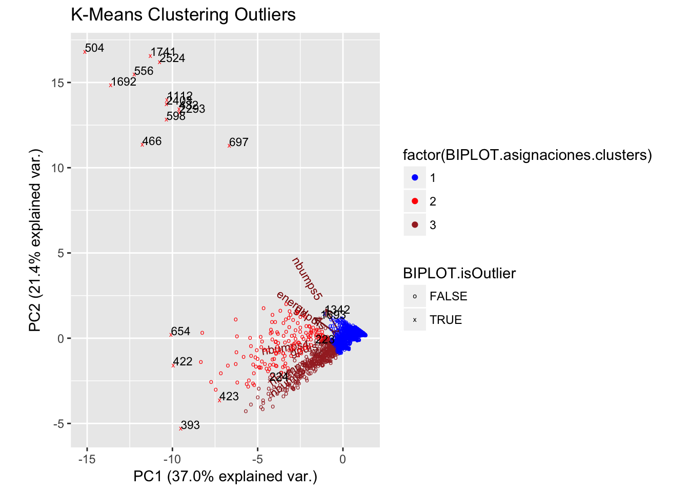
Por último puede resultar interesante revertir el proceso de normalización de los datos sobre los centroides obtenidos. Para ello, tendremos que utilizar la siguiente formula:
z-score = (dato - media.columna) / sd.columna
#obtenemos la media de cada columna
mis.datos.medias<- colMeans(modelo.kmeans$centers)
#obtenemos las desviaciones típicas
mis.datos.desviaciones <- apply(modelo.kmeans$centers,2,sd)
#multiplicamos cada dato del centroide por la desviación de cada columna
centroides.por.desviacion<-sweep(centroides.normalizados,2,mis.datos.desviaciones,"*")
#por último sumamos las medias y ya tenemos los valores reales
centroides.valores<-sweep(centroides.por.desviacion,2,mis.datos.medias,"+")
centroides.valores## gpuls gdpuls nbumps nbumps3 nbumps4 nbumps5 energy
## 1 0.3715413 0.1669847 0.4150628 0.2842089 0.4700631 0.2367932 0.4477519
## 2 1.2674007 0.2870143 2.3140105 1.2030685 8.3265039 0.8589054 4.4704760
## 3 1.2248891 0.2412342 2.2525744 2.0402926 0.4700631 0.2367932 0.8330207En la ampliación de las sección de análisis de outliers basado en clustering, usaremos clustering basado en medoides en lugar de centros, es decir PAM (partition around medoids).
El primer paso será obtener las distancias de cada uno de los objetos, sobre las que después utilizaremos la función, pam del paquete cluster.
m.dist<-dist(mydata.numeric, method = "euclidean")
modelo.pam<-pam(m.dist, k=numero.de.clusters)
modelo.pam$medoids## [1] 1972 2048 320Ya tenemos nuestros medoides y los registros con su cluster asociado. Podemos obtener los registros pertenecientes por tanto a los medoides normalizados y sin normalizar.
medoides.valores<-mydata.numeric[modelo.pam$medoids,]
medoides.valores## gpuls gdpuls nbumps nbumps3 nbumps4 nbumps5 energy
## 1972 350 -26 1 0 0 0 100
## 2048 719 32 1 1 0 0 7000
## 320 1268 -26 1 0 1 0 70000medoides.valores.normalizados<-mydata.numeric.scaled[modelo.pam$medoids,]
medoides.valores.normalizados## gpuls gdpuls nbumps nbumps3 nbumps4 nbumps5
## 1972 -0.3351613 -0.4829914 0.1029446 -0.5103247 -0.2426888 -0.0682922
## 2048 0.3206609 0.4352160 0.1029446 0.7888664 -0.2426888 -0.0682922
## 320 1.2963963 -0.4829914 0.1029446 -0.5103247 3.3407840 -0.0682922
## energy
## 1972 -0.23838984
## 2048 0.09900472
## 320 3.17956381Llegados a este punto, ya tenemos todos los datos necesarios para obtener los cluster haciendo uso de la función top_clustering_outliers que implementamos anteriormente.
top.pam<-top_clustering_outliers(mydata.numeric.scaled, modelo.pam$clustering, medoides.valores.normalizados, numero.de.outliers)
top.pam## $Indices
## [1] 504 1692 1741 556 2524 466 2403 1112 598 432 2293 697 393 422
## [15] 654 1342 423 1693 449 223
##
## $Distancias
## [1] 22.452801 21.828706 19.137954 19.066632 18.945061 17.341406 17.050341
## [8] 16.951710 16.831815 16.723339 16.639371 15.241078 10.995744 9.672946
## [15] 9.085491 8.590746 8.275864 8.064713 7.610792 7.319739Los siguientes puntos, están basados en el código del profesor de la asignatura (J.C. Cubero).
top_clustering_outliers_distancia_relativa = function(datos.normalizados,
indices.asignacion.clustering,
datos.centroides.normalizados,
numero.de.outliers){
dist_centroides = distancias_a_centroides (datos.normalizados,
indices.asignacion.clustering,
datos.centroides.normalizados)
cluster.ids = unique(indices.asignacion.clustering)
k = length(cluster.ids)
distancias.a.centroides.por.cluster = sapply(1:k ,
function(x) dist_centroides [indices.asignacion.clustering == cluster.ids[x]])
distancias.medianas.de.cada.cluster = sapply(1:k ,
function(x) median(dist_centroides[[x]]))
todas.las.distancias.medianas.de.cada.cluster = distancias.medianas.de.cada.cluster[indices.asignacion.clustering]
ratios = dist_centroides / todas.las.distancias.medianas.de.cada.cluster
indices.top.outliers = order(ratios, decreasing=T)[1:numero.de.outliers]
list(distancias = ratios[indices.top.outliers] , indices = indices.top.outliers)
}
top.outliers.kmeans.distancia.relativa = top_clustering_outliers_distancia_relativa(mydata.numeric.scaled, indices.clustering, centroides.normalizados, numero.de.outliers)
cat("Índices de los top k clustering outliers (k-means, usando distancia relativa)")## Índices de los top k clustering outliers (k-means, usando distancia relativa)top.outliers.kmeans.distancia.relativa$indices ## [1] 504 1692 1741 2524 556 1112 466 2403 598 2293 432 697 1342 1693
## [15] 393 422 654 1798 223 2550cat("Distancias a sus centroides de los top k clustering outliers (k-means, usando distancia relativa)")## Distancias a sus centroides de los top k clustering outliers (k-means, usando distancia relativa)top.outliers.kmeans.distancia.relativa$distancias## 504 1692 1741 2524 556 1112 466
## 11.867644 11.170111 10.049503 10.005027 9.988255 8.765342 8.761862
## 2403 598 2293 432 697 1342 1693
## 8.699939 8.573455 8.561842 8.559495 7.731227 6.169236 5.332857
## 393 422 654 1798 223 2550
## 4.964799 4.733527 4.684434 4.666775 4.636652 4.540024Tras la finalización de la práctica, no se han podido extraer conclusioenes muy relevantes respecto al problema en cuestión, debido en gran medida al desconocimiento en la materia y la cierta dificultad del problema. Aún así, se han encontrado ciertos patrones y éstos se han analizado con un gran abanico de métodos de detección de outliers, lo que deja la puerta abierta a su aplicación a problemas futuros a los que debamos enfrentarnos.
Centrandonos en la parte técnica del proceso de deteccion de outliers, podríamos afirmar que son procesos complejos a la par que interesantes y que bien como parte de un proceso de pre-procesado o como un análisis en toda regla, deben tenerse en cuenta.